Dieses Handbuch beschreibt die gesamte Anwendung „Bestatter“: die tägliche Arbeit mit Sterbefällen, Aufträgen, Terminen, Dokumenten und Rechnungen ebenso wie die Pflege der Stammdaten und die Einrichtung durch die Administration. Es richtet sich an drei Lesergruppen:
- Alle, die neu beginnen – Kapitel 2 führt in zehn Schritten von der frischen Installation bis zum ersten Fall.
- Mitarbeitende im Bestattungsunternehmen – Kapitel 1 und Kapitel 3 bis 17 beschreiben die Fallarbeit.
- Bestatter-Administratoren – Kapitel 18 bis 20 beschreiben Administration, Customizing und Dokumentvorlagen.
- Nextcloud-Administratoren – Kapitel 21 beschreibt Installation (auch in Docker) und Ersteinrichtung, Kapitel 22 Datensicherung und Wiederherstellung, Kapitel 23 die Deinstallation in Stufen; Kapitel 24 enthält die technischen Voraussetzungen, Hintergrundjobs und occ-Befehle.
So lesen Sie das Handbuch: Beschriftungen von Schaltflächen, Reitern und Feldern stehen in Anführungszeichen, zum Beispiel „Neuen Sterbefall anlegen“. Menüwege werden mit Pfeilen angegeben, zum Beispiel Einstellungen → Administration → Systemprüfung. Die grau hinterlegten Kästen „Kurz erklärt“ fassen einen Arbeitsschritt knapp zusammen; aus genau diesen Kästen beantwortet auch die Bedienhilfe in der App Ihre Fragen.
Personenbezogene Daten: Alle Bildschirmfotos zeigen erfundene Beispieldaten.
Das Handbuch wird mit jeder Programmversion aus denselben Quelltexten neu erzeugt; der Stand steht oben auf dieser Seite. In der App öffnen Sie es jederzeit über „Handbuch“ unten in der Navigation links – dabei springt das Handbuch direkt zu dem Kapitel, in dem Sie gerade arbeiten.
Lizenz: © 2026 Rainer Lüdeke. Die App ist freie Software unter der GNU Affero General Public License, Version 3 (AGPL-3.0-only); der Lizenztext liegt als Datei LICENSE im Installationspaket. Die App wird ohne jede Gewährleistung bereitgestellt, soweit gesetzlich zulässig. Hinweise zu mitgelieferten Fremdbestandteilen stehen in der Datei THIRD-PARTY-NOTICES.md.
1. Einführung, Rollen und Navigation
Wofür die Anwendung da ist
„Bestatter“ ist die Fachakte und Vorgangssteuerung für Bestattungsunternehmen innerhalb von Nextcloud. Zu jedem Sterbefall führt die Anwendung eine Fallakte mit Stammdaten, Auftrag oder Kostenvoranschlag, Leistungen, Aufgaben, Terminen, Abmeldungen, Dokumenten und Rechnungen. Ein hinterlegter Ablauf erzeugt die anstehenden Arbeitsschritte automatisch und zeigt, was als Nächstes zu tun ist.
Die Anwendung nutzt vorhandene Nextcloud-Funktionen, statt sie nachzubauen:
- Dateien: Jede Fallakte hat einen Ordner in Nextcloud mit Unterordnern (zum Beispiel „02 Auftrag“, „06 Abrechnung“). Erzeugte Dokumente, Rechnungen und hochgeladene Belege liegen dort.
- Kontakte: Angehörige, Standesämter, Friedhöfe, Lieferanten und Behörden sind Kontakte in Nextcloud Contacts; die Fallakte speichert nur die Zuordnung und die Rolle.
- Aufgaben und Kalender: Aufgaben und Termine erscheinen zusätzlich in Nextcloud Tasks und im Kalender der zuständigen Personen.
- Benachrichtigungen: Zuweisungen und wichtige Änderungen erscheinen in der Nextcloud-Aktivität und auf Wunsch per E-Mail.
Rollen und Zugriff
Der Zugriff wird ausschließlich über Nextcloud-Gruppen gesteuert:
| Rolle | Gruppe (Standardname) | Darf |
|---|---|---|
| Mitglied | „Bestatter“ | die gesamte Fallarbeit: Fälle anlegen und bearbeiten, Aufträge festschreiben, Rechnungen erstellen und freigeben, Dokumente erzeugen |
| Bestatter-Administrator | „Bestatter-Administratoren“ | zusätzlich Einstellungen → Administration und Customizing, Legal Hold, Fall löschen, verantwortliche Person eines Falls ändern |
| Nextcloud-Administrator | „admin“ | gilt automatisch als Bestatter-Administrator |
Wer keiner dieser Gruppen angehört, kann die Anwendung nicht öffnen. Für die Verteilung von Ablaufschritten gibt es zusätzlich Rollengruppen für Bestattung, Büro, Fahrer und Buchhaltung (siehe Kapitel 18, „Installationsparameter“).
Die Navigation
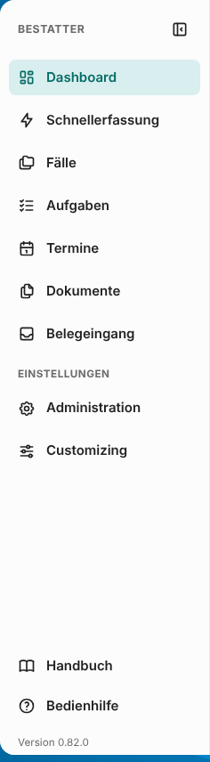
Die Navigation steht links neben dem Arbeitsbereich. Der aktive Bereich ist farbig hinterlegt; in der Fallakte bleibt „Fälle“ markiert. Oben stehen die Hauptbereiche:
| Bereich | Inhalt | Kapitel |
|---|---|---|
| „Dashboard“ | persönlicher Arbeitstag: eigene Aufgaben, Termine, Kalender | 2 |
| „Schnellerfassung“ | neuen Sterbefall aus Gesprächsnotiz, Aufnahme oder Erfassungsbogen anlegen (nur wenn eingeschaltet) | 3 |
| „Fälle“ | Liste aller Sterbefälle, Einstieg in die Fallakte | 4 |
| „Aufgaben“ | alle Aufgaben, auch ohne Fallbezug | 10 |
| „Termine“ | alle Termine und Fristen | 10 |
| „Dokumente“ | alle Dokumente aller Fallakten mit Suche | 12 |
| „Belegeingang“ | Belege aus Paperless-ngx einem Fall zuordnen | 14 |
Darunter folgt für Bestatter-Administratoren der Abschnitt „Einstellungen“ mit „Administration“ und „Customizing“. Ganz unten liegen die Werkzeuge und die Programmversion:
- „Handbuch“ öffnet dieses Handbuch in einem neuen Fenster, passend zum aktuellen Arbeitsbereich.
- „Bedienhilfe“ (Fragezeichen) öffnet den Hilfe-Assistenten. Er erscheint nur, wenn in Nextcloud ein Chat-Anbieter eingerichtet ist.
Einklappen und ausklappen: Der Knopf oben in der Navigation („Navigation einklappen“ bzw. „Navigation ausklappen“) schaltet zwischen der breiten Navigation mit Symbol und Text und der schmalen mit nur Symbolen um; in der schmalen zeigt ein Tooltip den Namen. Ohne eigene Wahl ist die Navigation ab 1440 Pixel Fensterbreite breit, darunter schmal. Ihre Wahl merkt sich der Browser. In schmalen Fenstern unter 1024 Pixel (Tablet hochkant, Smartphone) ist die Navigation ausgeblendet: „Menü“ oben links öffnet sie über dem Inhalt; die Auswahl eines Bereichs, „Menü schließen“ (×), Esc oder ein Klick daneben schließen sie wieder.
Unten rechts schwebt die Schaltfläche „Assistent“, sofern die Administration den Bestatter-Assistenten eingeschaltet hat.
Die Anwendung merkt sich die zuletzt geöffnete Ansicht, den Fall und den Reiter; nach einem Neuladen der Seite arbeiten Sie an derselben Stelle weiter. Gespeicherte Änderungen bestätigt ein kurzer Hinweis „Änderungen wurden gespeichert.“.
Die Bedienhilfe
Die Bedienhilfe beantwortet Fragen zur Bedienung, zum Beispiel „Wie lege ich einen neuen Fall an?“. Geben Sie Ihre Frage in das Feld „Frage zur Bedienung“ ein (höchstens 500 Zeichen) und wählen Sie „Frage stellen“. Die Antwort nennt ihre Quelle; ein Klick auf die Quelle öffnet den passenden Abschnitt dieses Handbuchs. Findet die Bedienhilfe keinen passenden Abschnitt, sagt sie das, statt zu raten.
Hinweis: Der Chat-Anbieter kann ein externer Dienst sein. Geben Sie in der Bedienhilfe deshalb keine Namen oder anderen Falldaten ein.
Der Assistent
Der „Assistent“ arbeitet mit Ihren Falldaten. Öffnen Sie ihn unten rechts, wählen Sie unter „Fallbezug“ den Fall und stellen Sie eine Frage oder einen Arbeitsauftrag unter „Frage oder Arbeitsauftrag“; „Prüfen“ zeigt das Ergebnis. Schnellwahlen wie „Mein Arbeitstag“, „Fall suchen“, „Fehlende Angaben“, „Leistungen“ oder „Rechnungsbereitschaft“ liefern die häufigsten Auskünfte mit einem Klick.
Der Assistent kann Stammdaten ergänzen, Aufgaben und Termine anlegen und Dokumente aus Vorlagen erzeugen. Jede schreibende Aktion zeigt er zuerst als Vorschlag; ausgeführt wird sie erst nach Ihrer Bestätigung. Rechnungen erzeugt der Assistent nicht.
Zu Dokumenten und zum Belegeingang gibt der Assistent nur Auskunft; er ordnet nichts zu und legt nichts ab:
- „Eingegangene Dokumente“ („Welche Dokumente sind für diesen Fall eingegangen?“): je Dokumentart die abgelegten Dokumente des gewählten Falls mit Datum, bei Sterbeurkunden die Anzahl der Ausfertigungen, eine noch fehlende Sterbeurkunde, versendete Abmeldungen ohne Rückmeldung und Dokumente, die im Belegeingang für diesen Fall vorgeschlagen sind. Auch die Frage Welche Rückmeldungen fehlen noch? führt hierher.
- „Belegeingang“ („Was liegt im Belegeingang?“): die noch nicht zugeordneten Dokumente mit dem Vorschlag für Dokumentart und Fall. Die Frage Liegen für diesen Fall Dokumente im Belegeingang? zeigt nur die Dokumente, die dem gewählten Fall vorgeschlagen sind. „Belegeingang öffnen“ führt zur Zuordnung (Kapitel 16).
- „Paperless prüfen“ („Ist Paperless richtig eingerichtet?“, nur für Bestatter-Administratoren): dieselbe Prüfung wie die Systemprüfung „Paperless-Belegeingang (Einrichtung)“ (Kapitel 18).
Benachrichtigungen einstellen
Unter Ihren persönlichen Nextcloud-Einstellungen → Benachrichtigungen gibt es die Gruppe „Bestatter“ mit fünf Schaltern:
- „Ein neuer Sterbefall wurde mir zugewiesen“
- „Eine mir zugewiesene Aufgabe wurde geändert oder erledigt“
- „Ein mir zugewiesener Termin wurde geändert oder gelöscht“
- „Ein Dokument oder eine Rechnung wurde finalisiert“
- „Ein Prozess benötigt Aufmerksamkeit“
Voreingestellt sind Aktivität und Push-Benachrichtigung; E-Mails sind aus und lassen sich je Schalter einschalten. Für eigene Änderungen erhalten Sie keine Benachrichtigung.
2. Erste Schritte
Dieses Kapitel führt in zehn Schritten von einer frisch installierten App bis zum ersten vollständig bearbeiteten Fall. Die Installation selbst beschreibt Kapitel 21. Jeder Schritt nennt, wer ihn erledigt:
- Nextcloud-Administrator: betreut den Server und die Nextcloud-Benutzer.
- Bestatter-Administrator: richtet die App fachlich ein (Gruppe „Bestatter-Administratoren“).
- Mitarbeitende: arbeiten mit Fällen (Gruppe „Bestatter“).
In kleinen Betrieben ist das oft dieselbe Person.
| Schritt | Wer | Wo | Ausführlich |
|---|---|---|---|
| 1. Benutzer und Nextcloud-Apps | Nextcloud-Administrator | Nextcloud-Benutzerverwaltung, Apps | Kapitel 21 |
| 2. Ersteinrichtung | Bestatter-Administrator | Administration → „Ersteinrichtung“ | Kapitel 18 |
| 3. Niederlassung vervollständigen | Bestatter-Administrator | Administration → „Niederlassungen“ | Kapitel 18 |
| 4. Rechnungsnummern und E-Rechnung | Bestatter-Administrator | Administration → „Rechnungswesen“ | Kapitel 18 |
| 5. Leistungskatalog und Preise | Bestatter-Administrator | Administration → „Leistungen“ | Kapitel 18 |
| 6. Dokumentvorlagen prüfen | Bestatter-Administrator | Customizing → „Dokumentvorlagen“ | Kapitel 20 |
| 7. Abläufe, Rollen und Marker | Bestatter-Administrator | Customizing, Administration → „Systemprüfung“ | Kapitel 19 |
| 8. Kontakte, Kalender, Aufgaben | alle | Nextcloud Kontakte, Kalender, Aufgaben | Kapitel 12 |
| 9. Systemprüfung und erste Sicherung | Bestatter-Administrator | Administration → „Systemprüfung“, „Backup & Restore“ | Kapitel 22 |
| 10. Probefall durchspielen | Mitarbeitende | „Fälle“ | ab Kapitel 5 |
Tipp: Wurde die Einrichtung bereits auf einer Testinstallation vorbereitet, übernehmen Sie Leistungskatalog, Preise, Vorlagen, Auftragsformulare, Marker und Abläufe in einem Zug mit dem „Einrichtungspaket“ (Kapitel 18). Dann bleiben vor allem die Schritte 1 bis 4, 8 und 9.
Schritt 1: Benutzer und Nextcloud-Apps
Die App verwendet nur vorhandene Nextcloud-Benutzer; sie legt selbst keine an.
- Der Nextcloud-Administrator legt für jede Mitarbeiterin und jeden Mitarbeiter ein Nextcloud-Konto an (Benutzer in der Nextcloud-Verwaltung).
- Die Nextcloud-Apps Activity, Kalender, Kontakte und Aufgaben sind aktiviert, Hintergrundjobs laufen per Cron.
- Jede Person meldet sich einmal in Nextcloud an und öffnet einmal die App Aufgaben. Erst dann gibt es den persönlichen Kalender und die Aufgabenliste, in die die App schreibt.
- Für die gemeinsame Ablage der Fallakten empfiehlt sich ein eigenes Konto, zum Beispiel
bestatter-ablage, oder ein Teamordner (Kapitel 18, „Fallablage“).
Schritt 2: Ersteinrichtung
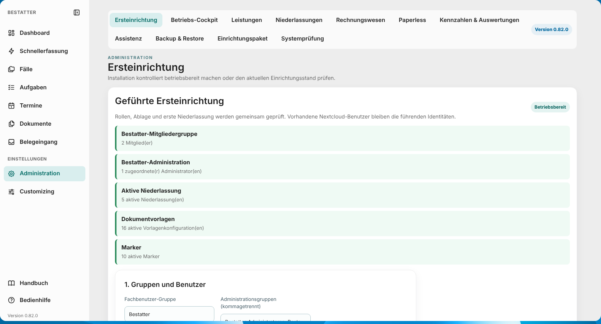
Ein Nextcloud-Administrator öffnet die App und wählt Einstellungen → Administration → „Ersteinrichtung“. Die „Geführte Ersteinrichtung“ hat vier Abschnitte:
- „1. Gruppen und Benutzer“: Fachbenutzer-Gruppe und Administrationsgruppen festlegen; „Fehlende Gruppen nach Bestätigung anlegen“ erstellt sie. Ordnen Sie jedem Benutzer die Rolle „Fachbenutzer“ oder „Administrator“ zu.
- „2. Ablagestruktur“: Arbeitsordner, Fallordner, Vorlagenordner und Unterordner der Fallakte. Die Vorgaben passen für die meisten Betriebe.
- „3. Erste Niederlassung und Länderprofil“: Name, Land und Anschrift Ihres Betriebs.
- „4. Marker auswählen (optional)“: Haken Sie die Marker an, mit denen Ihr Betrieb Fälle kennzeichnen möchte, zum Beispiel „Hygiene beachten“ oder „Kostenträger“.
„Einrichtung speichern und prüfen“ zeigt „Betriebsbereit“, sobald Gruppen, Administration und eine aktive Niederlassung vorhanden sind. Die mitgelieferten Dokumentvorlagen liegen danach im Vorlagenordner.
Schritt 3: Niederlassung vervollständigen
Unter Administration → „Niederlassungen“ öffnen Sie die eben angelegte Niederlassung:
- „Bank- und Unternehmensdaten“: Kontoinhaber, Bank, IBAN, BIC, Zahlungsziel, Steuernummer oder USt-IdNr. und, falls vorhanden, Gläubiger-ID und Registerangaben; speichern mit „Bank- und Unternehmensdaten speichern“. Ohne diese Angaben kann keine Rechnung erzeugt werden.
- „Logo“: „Logo hochladen“ (PNG oder JPEG bis 2 MB). Das Logo erscheint in allen Dokumenten.
- Mitarbeitende: Personen der Niederlassung zuordnen.
Weitere Standorte legen Sie mit „+ Niederlassung“ an.
Schritt 4: Rechnungsnummern und E-Rechnung
Unter Administration → „Rechnungswesen“ legen Sie „Rechnungspräfix“, „Aufbau der Rechnungsnummer“ (empfohlen {PREFIX}-{YYYY}-{SEQ}) und „Zählweise“ fest und prüfen die „Aktuelle Vorschau“. Lassen Sie die E-Rechnung („ZUGFeRD 2.5.2 / EN16931“) eingeschaltet. Speichern mit „Rechnungseinstellungen speichern“.
Wichtig: Legen Sie den Nummernkreis vor der ersten echten Rechnung fest. Rechnungsnummern werden lückenlos vergeben und später nicht mehr umgestellt.
Schritt 5: Leistungskatalog und Preise
Unter Administration → „Leistungen“:
- Schnellstart: „Beispielkatalog 2026 übernehmen“ legt einen vollständigen Katalog mit Beispielpreisen an. Passen Sie danach Bezeichnungen und Preise an.
- Eigene Preisliste: Unter „Artikel“ oder „Preislisten“ mit „Als CSV herunterladen“ eine Tabelle holen, in Excel bearbeiten und mit „Aus CSV aktualisieren“ zurückspielen.
- Pakete: Häufige Zusammenstellungen (zum Beispiel eine Feuerbestattung mit Sarg, Überführung und Urne) als Artikel der Art „Paket (Stückliste)“ anlegen.
- Papierformular (optional): Unter „Auftragsformulare“ legt „Muster übernehmen“ ein Formular an, das Sie an Ihren Papier-Bestattungsauftrag anpassen.
Schritt 6: Dokumentvorlagen prüfen
Unter Einstellungen → „Customizing“ → „Dokumentvorlagen“ öffnen Sie bei „Rechnung“ und „Kostenvoranschlag / Bestattungsauftrag“ die „Vorschau“. Prüfen Sie Briefkopf, Logo, Bankverbindung und Fußzeile. Eigene Briefvorlagen erstellen Sie wie in Kapitel 20 beschrieben, am einfachsten als Kopie einer mitgelieferten Vorlage.
Schritt 7: Abläufe, Rollen und Marker
- Abläufe: Unter Customizing → „Abläufe“ steht der mitgelieferte Standardablauf mit Phasen und Aufgaben. Für den Anfang können Sie ihn unverändert verwenden und später anpassen (Kapitel 19).
- Rollen: Unter Administration → „Systemprüfung“ → „Rollen für Abläufe (Nextcloud-Gruppen)“ ordnen Sie den Rollen Bestattung, Büro, Fahrer und Buchhaltung Nextcloud-Gruppen zu. Bleibt eine Rolle leer, gehen ihre Aufgaben an die Fallverantwortung.
- Marker: Unter Customizing → „Marker“ schalten Sie weitere Marker ein oder legen eigene an.
- Benachrichtigungen: Jede Person wählt in ihren persönlichen Nextcloud-Einstellungen unter „Benachrichtigungen“, worüber sie informiert werden möchte (Kapitel 1).
Schritt 8: Kontakte, Kalender und Aufgaben
- Legen Sie in der Nextcloud-App Kontakte das gemeinsame Adressbuch Bestatter - Organisationen an und geben Sie es für die Gruppe Bestatter frei.
- Tragen Sie Standesämter, Friedhöfe, Betreuer und Lieferanten mit der passenden Kontaktgruppe ein, zum Beispiel „Standesamt“ oder „Friedhof“. Nur dann erscheinen sie in den Auswahllisten der App.
- Termine und Aufgaben aus der App erscheinen automatisch im persönlichen Kalender und in der Aufgabenliste der zuständigen Person (Kapitel 12).
Schritt 9: Systemprüfung und erste Sicherung
- Unter Administration → „Systemprüfung“ dürfen keine Fehler offen sein. Jede Meldung nennt die Ursache und führt mit einem Knopf zur passenden Einstellung.
- Unter Administration → „Backup & Restore“ legen Sie mit „Vollständiges Sicherungspaket erstellen“ die erste Sicherung an und speichern sie mit „Speichern unter …“ zusätzlich außerhalb des Servers.
- Unter „Automatische Sicherung“ richten Sie einen Zeitplan ein, zum Beispiel „Täglich“ um 01:00 Uhr mit „Abgelaufene Sicherungen danach automatisch löschen“.
- Vereinbaren Sie mit dem Nextcloud-Administrator die Sicherung der gesamten Nextcloud (Kapitel 22).
Schritt 10: Probefall durchspielen
Spielen Sie einen erfundenen Fall einmal vollständig durch, am besten auf einer Testinstallation:
- „Fälle“ → „Neuen Sterbefall anlegen“ (oder „Schnellerfassung“), Stammdaten und Bestattungsvariante erfassen (Kapitel 5, Kapitel 6).
- Mit „+ Marker“ einen Marker setzen, zum Beispiel „Rückruf Auftraggeber“ mit einer Notiz.
- Im Reiter „Leistungen“ Positionen erfassen, im Reiter „Auftrag / KVA“ den Kostenvoranschlag festschreiben (Kapitel 7, Kapitel 8).
- Einen Termin anlegen und bestätigen; er erscheint im Nextcloud-Kalender (Kapitel 11).
- Im Reiter „Dokumente“ ein Dokument aus einer Vorlage erzeugen (Kapitel 14).
- Im Reiter „Finanzen“ die Leistungen als erbracht erfassen und eine Schlussrechnung anlegen (Kapitel 15).
- Über „Fall abschließen …“ prüfen, was bis zum Abschluss noch fehlt.
Hinweis für die Produktivinstallation: Jede Rechnung erhält schon als Entwurf eine Nummer. Geben Sie im Probefall keine Rechnung frei, sondern verwerfen Sie den Entwurf mit „Entwurf verwerfen“; die Nummer bleibt dann als verworfen dokumentiert. Den Probefall löscht ein Bestatter-Administrator anschließend mit „Fall löschen“ (Kapitel 17).
Bereit für den Echtbetrieb
- Alle Mitarbeitenden haben ein Nextcloud-Konto, gehören zur richtigen Gruppe und haben Nextcloud und die App Aufgaben einmal geöffnet.
- Die Ersteinrichtung zeigt „Betriebsbereit“, die Systemprüfung zeigt keine Fehler.
- Niederlassung mit Bankdaten und Logo, Rechnungsnummern und Leistungskatalog sind gepflegt.
- Rechnung und Kostenvoranschlag sehen in der Vorschau richtig aus.
- Das Adressbuch „Bestatter - Organisationen“ ist freigegeben und enthält die wichtigsten Behörden, Friedhöfe und Lieferanten.
- Ein vollständiges Sicherungspaket liegt außerhalb des Servers, die automatische Sicherung und die Sicherung der Nextcloud sind eingerichtet.
- Der Probefall hat funktioniert und ist gelöscht.
3. Dashboard und tägliche Arbeitsweise
Das Dashboard
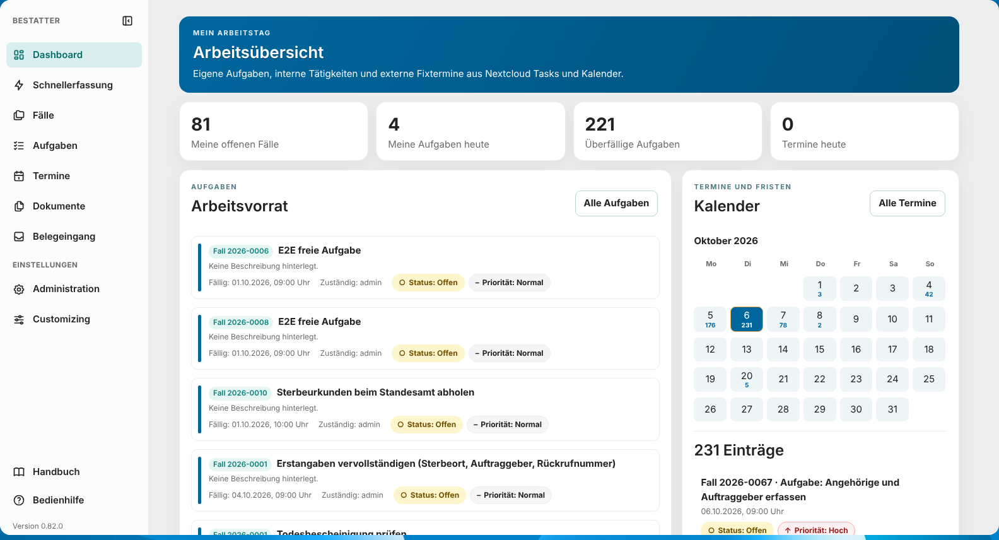
Das „Dashboard“ ist die Startseite. Unter der Überschrift „Arbeitsübersicht“ zeigt es Ihren persönlichen Arbeitstag:
- Kennzahlen: „Meine offenen Fälle“, „Meine Aufgaben heute“, „Überfällige Aufgaben“ und „Termine heute“.
- „Arbeitsvorrat“: bis zu 20 offene Aufgaben, sortiert nach Fälligkeit, mit Fallnummer, Fälligkeit, Zuständigkeit und Status. „Alle Aufgaben“ öffnet die vollständige Aufgabenliste.
- „Kalender“: der aktuelle Monat. Jeder Tag zeigt die Zahl der Aufgaben und Termine; ein Klick auf einen Tag listet die Einträge darunter auf. „Alle Termine“ öffnet die Terminliste.
Ein Klick auf eine Aufgabe oder einen Termin öffnet das Bearbeitungsformular. Auf dem Smartphone zeigt der Block „Heute schnell im Blick“ die überfälligen und heutigen Einträge kompakt an.
Empfohlene Arbeitsweise
- Morgens: Dashboard öffnen und überfällige Aufgaben abarbeiten. Neue Aufgaben entstehen automatisch aus dem Ablauf der Fälle.
- Neuer Sterbefall: über „Schnellerfassung“ (Kapitel 4) oder „Fälle“ → „Neuen Sterbefall anlegen“ (Kapitel 5).
- Beratungsgespräch: Stammdaten, Bestattungsvariante und Leistungen erfassen, Kostenvoranschlag oder Auftrag festschreiben (Kapitel 6 bis 8).
- Organisation: Termine mit Konfliktprüfung planen, Abmeldungen vorbereiten, Dokumente erzeugen (Kapitel 11 bis 14).
- Abrechnung: erbrachte Leistungen bestätigen, Teil- oder Schlussrechnung erstellen, freigeben und Zahlung erfassen (Kapitel 15).
- Abschluss: „Fall abschließen …“ prüft, ob alle Pflichtschritte erledigt und die Rechnung bezahlt ist (Kapitel 5).
Die Anwendung gleicht Aufgaben und Termine im Hintergrund jede Minute mit Nextcloud ab. Solange ein Formular oder Dialog geöffnet ist, pausiert der Abgleich, damit Ihre Eingaben nicht überschrieben werden.
4. Schnellerfassung eines Sterbefalls
Überblick
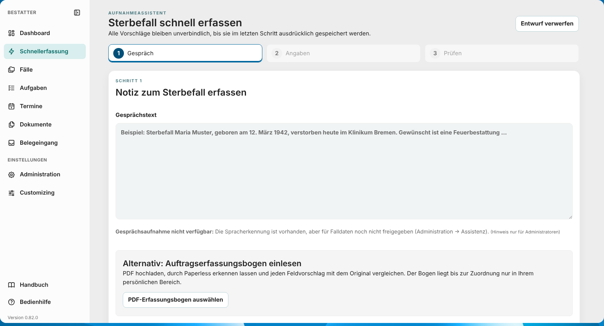
Die „Schnellerfassung“ legt einen Sterbefall aus einer Gesprächsnotiz, einer Sprachaufnahme oder einem eingescannten Auftragserfassungsbogen an. Sie erscheint in der Navigation nur, wenn die Administration die geführte Schnellerfassung eingeschaltet hat (Einstellungen → Administration → Assistenz).
Die Erfassung läuft in drei Schritten: Gespräch, Angaben, Prüfen. Alle erkannten Angaben bleiben Vorschläge, bis Sie im letzten Schritt „Geprüften Fall anlegen“ wählen.
Auftragserfassungsbogen einlesen
Viele Unternehmen erfassen das Erstgespräch auf einem Papierbogen. Diesen Bogen können Sie einscannen oder fotografieren und in Schritt 1 einlesen lassen. Die erkannten Felder erscheinen in Schritt 2 neben dem Originalscan, jeweils mit der Herkunft „Scan“.
Fortschritt: Unter dem Bogen zeigen vier Schritte, was gerade passiert: „Gespeichert“, „An Texterkennung übergeben“, „Text wird erkannt“ und „Angaben ausgewertet“. Die Schritte heißen bei jeder Texterkennung gleich; welches System arbeitet (Paperless-ngx oder Nextcloud), steht darunter und in der Tätigkeitszeile mit der vergangenen Zeit. Mit Paperless geht ein Bogen sofort beim Hochladen an Paperless; die App fragt danach alle paar Sekunden nach, eine Seite ist meist nach 10 bis 60 Sekunden erkannt. Antwortet Paperless nicht, nennt die Statuszeile die Uhrzeit des nächsten automatischen Versuchs. Nach 15 Minuten hält die Abfrage an; „Status prüfen“ setzt sie fort.
Was erkannt wird: Die App übernimmt nur beschriftete Angaben wie Name des / der Verstorbenen:, Geburtsdatum:, Sterbeort:, Auftraggeber:, Verhältnis:, Friedhof: oder Sterbeurkunden … Stück, auch aus zweispaltigen Bögen. Jeder Wert wird auf Plausibilität geprüft; unlesbare Stellen werden nicht vorgeschlagen. Gedruckte Vordrucktexte (zum Beispiel Leistungspositionen) gelten nie als Angabe, und die Angaben im Abschnitt „Auftraggeber“ werden der beauftragenden Person zugeordnet.
Handschrift: Paperless und die übliche Nextcloud-Texterkennung lesen gedruckten Text und Druckbuchstaben zuverlässig, handschriftliche Einträge dagegen meist nicht. Findet die App keine sicher lesbare Angabe, sagt Schritt 2 das ausdrücklich; übertragen Sie die Angaben dann anhand des Originalscans oder nutzen Sie für Papieraufträge „Nach Auftragsformular erfassen“ (Kapitel 8).
Kennt Paperless denselben Scan bereits (zum Beispiel nach einem verworfenen Versuch), übernimmt die App den dort schon erkannten Text und weist darauf hin. Der Bogen bleibt standardmäßig auch in Paperless. Ist unter Einstellungen → Administration → Paperless „Erfassungsbogen in Paperless nach erfolgreicher Texterkennung löschen“ eingeschaltet, löscht die Anwendung die Paperless-Kopie, sobald der Text gelesen ist; der Bogen selbst bleibt in Nextcloud und wird beim Anlegen des Falls in der Fallakte abgelegt. Paperless verschiebt das Dokument in seinen Papierkorb und löscht es dort nach der eingestellten Frist endgültig. Fehlt dem Paperless-Benutzer das Recht zum Löschen, wird der Bogen trotzdem ausgewertet; ein Hinweis nennt das fehlende Recht. Lehnt Paperless einen Bogen ab, erscheint die Meldung sofort, der Schritt „Text wird erkannt“ ist rot markiert.
Datenschutz bei Aufnahmen und Scans
- Sprachaufnahmen werden nach der Transkription gelöscht, spätestens nach 24 Stunden.
- Hochgeladene Bögen liegen bis zur Zuordnung nur in Ihrem persönlichen Bereich; der erkannte Volltext wird nach der Fallanlage entfernt.
- Spracherkennung und Texterkennung verarbeiten Falldaten nur, wenn die Administration den jeweiligen Anbieter ausdrücklich freigegeben hat.
- Ohne KI-Anbieter bleibt die Schnellerfassung mit getippter Notiz vollständig nutzbar.
5. Fälle und Fallakte
Die Fallliste
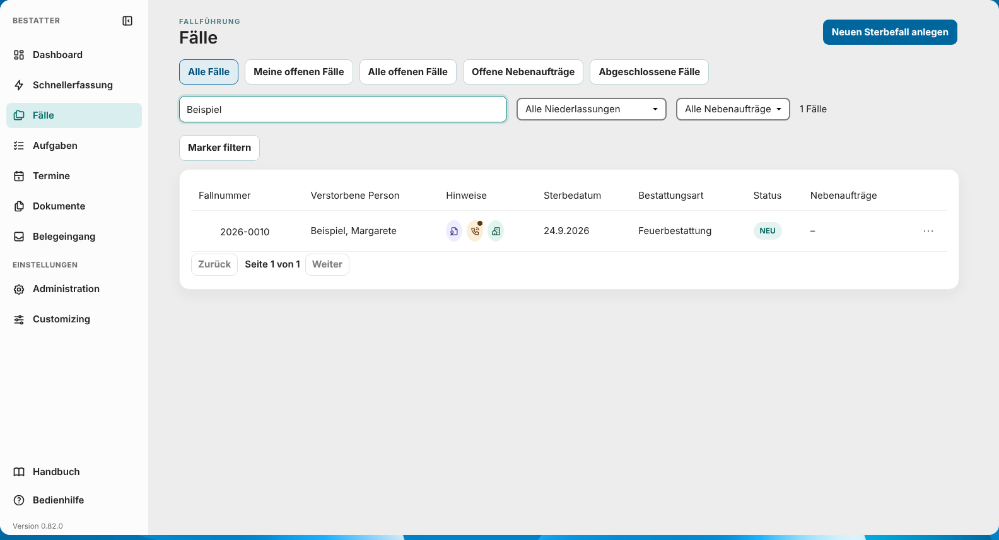
„Fälle“ zeigt alle Sterbefälle, die neuesten zuerst, 25 je Seite („Zurück“ / „Weiter“).
- Gespeicherte Ansichten: „Alle Fälle“, „Meine offenen Fälle“ (Sie sind verantwortlich), „Alle offenen Fälle“, „Offene Nebenaufträge“ und „Abgeschlossene Fälle“.
- Suche: Das Suchfeld findet Fallnummer, Nebenauftragsnummer, Name, Status oder Text aus den Notizen der Marker, während Sie tippen.
- Filter: nach Niederlassung und nach Nebenaufträgen („Vorhanden“, „Offen“, „Abrechnung offen“, „Erledigt“, „Keine“), dazu „Marker filtern“ (Abschnitt Marker und Hinweise).
- Spalten: „Fallnummer“, „Verstorbene Person“, „Hinweise“, „Sterbedatum“, „Bestattungsart“, „Status“, „Nebenaufträge“. Die Spalte „Hinweise“ zeigt die Marker des Falls als farbige Symbole. Ganz rechts öffnet „⋯“ das Menü mit „Fall öffnen“ und „Marker …“; ein Rechtsklick auf die Zeile öffnet dasselbe Menü.
Ein Klick auf eine Zeile öffnet die Fallakte. Hat ein Fall Nebenaufträge, klappt der kleine Pfeil vor der Fallnummer sie als Unterzeilen auf; ein Klick auf eine Unterzeile öffnet den Fall direkt im Reiter „Nebenaufträge“.
Neuen Sterbefall anlegen
„Neuen Sterbefall anlegen“ öffnet eine leere Fallakte im Reiter „Stammdaten“. Sie sind als verantwortlicher Mitarbeiter vorbelegt, ebenso Ihre Niederlassung. Der Fall wird angelegt, sobald Vor- und Nachname der verstorbenen Person eingetragen sind – ein eigener Speichern-Knopf ist nicht nötig. Bis dahin ist nur der Reiter „Stammdaten“ bedienbar; die übrigen Reiter sind ausgegraut und werden frei, sobald der Fall gespeichert ist. Auch „Falldaten exportieren“ und „Fall löschen“ erscheinen erst danach. Die Fallnummer vergibt die Anwendung automatisch im Format Jahr und laufende Nummer, zum Beispiel 2026-0001. Zugleich entstehen die ersten Schritte des Standardablaufs. Über „+ Marker“ unter dem Namen können Sie schon vor dem ersten Speichern Marker wählen, etwa „Überführung Ausland“ oder „Vorsorgevertrag“; sie werden mit dem Fall angelegt, und Ablaufschritte, die von diesen Markern abhängen, entstehen gleich mit.
Aufbau der Fallakte
Der Kopf der Fallakte zeigt Fallnummer und Namen, darunter die Marker und automatischen Hinweise des Falls (Abschnitt Marker und Hinweise). Daneben stehen:
- „Falldaten exportieren“ – lädt alle strukturierten Daten des Falls als Datei herunter (Kapitel 17).
- „Legal Hold setzen“ / „Legal Hold aufheben“ – nur Bestatter-Administratoren (Kapitel 17).
- „Zurück zu Fällen“.
- „Fall löschen“ – nur Bestatter-Administratoren (Kapitel 17).
Darunter liegen die Reiter der Fallakte:
| Reiter | Inhalt | Kapitel |
|---|---|---|
| „Übersicht“ | Ablauf, nächste Schritte, Vollständigkeit, Fallmerkmale | 4 |
| „Stammdaten“ | Personen-, Sterbe-, Betreuungs- und Bestattungsdaten | 5 |
| „Auftrag / KVA“ | Kostenvoranschlag, Auftrag, Auftraggeber, Zahlungsart, Unterschrift | 6 |
| „Nebenaufträge“ | Bestellungen weiterer Auftraggeber | 8 |
| „Kontakte“ | Angehörige, Behörden und Dienstleister des Falls | 9 |
| „Aufgaben“ | Ablaufschritte nach Phasen und Aufgabenliste | 10 |
| „Termine / Fristen“ | Terminschritte und Termine des Falls | 10 |
| „Abmeldungen“ | Mitteilungen an Behörden, Kassen und Vertragspartner | 12 |
| „Dokumente“ | Vorlagen, erzeugte Dokumente, Uploads, Papiervertrag | 13 |
| „Leistungen“ | Positionen, Pakete, Auftragsformular | 7 |
| „Finanzen“ | Leistungserfassung, Rechnungen, Eingangsrechnungen | 14 |
| „Fall-Verlauf“ | unveränderliches Protokoll aller Bearbeitungen | 16 |
Marker und Hinweise
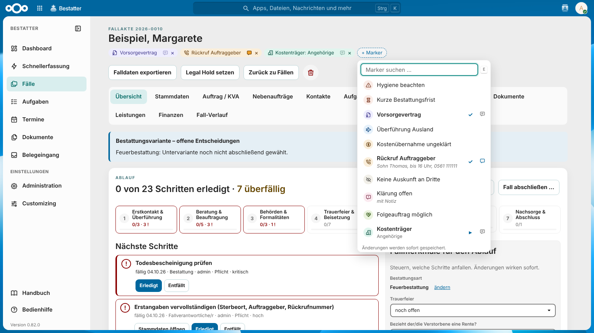
Marker kennzeichnen einen Fall auf einen Blick, zum Beispiel „Hygiene beachten“, „Rückruf Auftraggeber“ oder „Kostenträger: Sozialamt“. Im Fallkopf erscheinen sie als farbige Chips mit Symbol und Text, in der Fallliste in der Spalte „Hinweise“ als Symbole (höchstens vier; weitere zeigt eine Zahl wie +2). Welche Marker es gibt, legt die Administration unter Customizing → Marker fest (Kapitel 19).
Es gibt zwei Arten:
- Ja/Nein: Der Marker ist gesetzt oder nicht, zum Beispiel „Hygiene beachten“.
- Liste: Beim Setzen wählen Sie einen Wert, zum Beispiel „Kostenträger“ mit „Angehörige“, „Sozialamt“, „Ordnungsamt“, „Treuhand / Vorsorge“, „Versicherung“ oder „Nachlass“. Der Chip zeigt dann „Kostenträger: Sozialamt“; ein Klick auf den Chip ändert den Wert.
Setzen und entfernen: „+ Marker“ im Fallkopf – oder die Taste E, solange kein Eingabefeld aktiv ist – öffnet das Auswahlfenster. Tippen Sie einen Teil des Namens ein, wählen Sie mit den Pfeiltasten und schalten Sie mit Enter oder einem Klick um. Jede Änderung wird sofort gespeichert; es gibt keinen eigenen Speichern-Knopf. Das × am Chip entfernt einen Marker. In der Fallliste erreichen Sie dasselbe Fenster über „⋯“ → „Marker …“ oder einen Rechtsklick auf die Zeile, ohne den Fall zu öffnen. Wer einen Marker wann gesetzt hat, zeigt der Hinweis am Chip; jede Änderung steht im „Fall-Verlauf“.
Notiz zum Marker: Zu einem gesetzten Marker können Sie eine kurze interne Notiz erfassen (höchstens 500 Zeichen) – ähnlich einer Notiz an einer Excel-Zelle, etwa Sohn Thomas, bis 16 Uhr, 0561 … beim „Rückruf Auftraggeber“. Die Sprechblase am Chip öffnet das Notizfenster; anders als beim Setzen des Markers speichern Sie die Notiz ausdrücklich mit „Speichern“ (oder Strg+Enter). Ist eine Notiz vorhanden, ist die Sprechblase ausgefüllt und der Tooltip am Chip zeigt den Text; in der Fallliste trägt das Symbol einen kleinen Punkt. Im Auswahlfenster erscheint nach dem Setzen „Notiz hinzufügen“, und bei gesetzten Markern steht die Notiz unter dem Namen. Für manche Marker ist eine Notiz vorgeschrieben, mitgeliefert bei „Klärung offen“ (was ist zu klären, mit wem?): Das Auswahlfenster kennzeichnet sie mit „mit Notiz“, und beim Setzen öffnet sich zuerst das Notizfenster mit „Marker setzen“. Ein Ausrufezeichen an der Sprechblase zeigt eine fehlende Pflichtnotiz. Wird ein Marker entfernt, verschwindet auch seine Notiz (vorher fragt die App nach); nachvollziehbar bleibt sie im „Fall-Verlauf“. Notizen sind intern: Sie erscheinen nie in Dokumenten, wohl aber im Fall-Verlauf, in der Auskunft nach Art. 15 DSGVO und in Aufgaben, die der Marker auslöst. Schreiben Sie deshalb sachlich und tragen Sie keine Diagnosen oder Wertungen ein.
Automatische Hinweise: Neben den Markern zeigt der Fallkopf gestrichelt umrandete Hinweise, die die App aus vorhandenen Falldaten berechnet: „Freigabe abwarten“ (Todesart nicht natürlich oder ungeklärt und noch keine Freigabe), „Betreuung“ (rechtliche Betreuung in den Stammdaten) und „Zahlung überfällig“ (freigegebene Rechnung über dem Zahlungsziel). Sie lassen sich nicht von Hand setzen und verschwinden, sobald die Angabe erledigt ist.
Liste filtern: Ein Klick auf ein Symbol in der Spalte „Hinweise“ zeigt nur noch Fälle mit diesem Marker. „Marker filtern“ öffnet die Auswahl „Nur Fälle mit …“; mehrere Marker müssen alle zutreffen. Die gewählten Filter stehen als Chips über der Liste, „Filter zurücksetzen“ hebt sie auf.
Abläufe: Marker können Ablaufschritte auslösen, erledigen oder auf bestimmte Fälle beschränken, zum Beispiel entsteht beim Marker „Rückruf Auftraggeber“ eine Rückruf-Aufgabe, die sich beim Entfernen des Markers selbst erledigt (Kapitel 19, Abläufe). Die Notiz des auslösenden Markers steht dann am Ende der Aufgabenbeschreibung unter „Notizen aus Markern:“. Ändern Sie die Notiz später, zieht die offene Aufgabe nach; was Sie selbst in die Beschreibung geschrieben haben, bleibt stehen. Erledigte Aufgaben ändert die App nicht mehr.
Marker sind Teil der Fallakte und erscheinen bei einer Auskunft nach Art. 15 DSGVO. Formulieren Sie Marker daher sachlich; persönliche Wertungen gehören nicht in einen Marker.
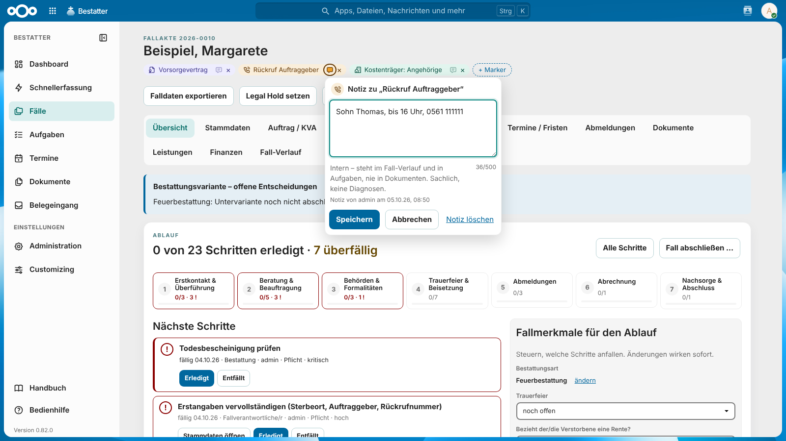
Reiter „Übersicht“
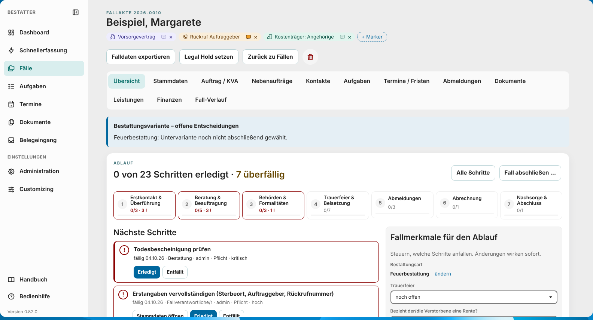
Die Übersicht zeigt von oben nach unten:
- „Bestattungsvariante – offene Entscheidungen“: Hinweise, welche Auswahl für die gewählte Bestattungsvariante noch fehlt, zum Beispiel „Auswahl aus Warengruppe „Särge“ noch offen.“. Mit „Später entscheiden“ blenden Sie einen Hinweis für diesen Fall aus.
- Die Ablaufkarte mit „X von Y Schritten erledigt“, den sieben Phasen und den nächsten Schritten.
- Die Vollständigkeit je Phase mit den noch fehlenden Angaben.
- Zusammenfassungen zu Auftrag, Aufgaben und Fallnotiz mit Sprüngen in die Reiter.
- Die Nebenaufträge des Falls.
Der Ablauf eines Falls
Jeder Fall folgt einem Ablauf in sieben Phasen: „Erstkontakt & Überführung“, „Beratung & Beauftragung“, „Behörden & Formalitäten“, „Trauerfeier & Beisetzung“, „Abmeldungen“, „Abrechnung“ und „Nachsorge & Abschluss“. Ein Schritt entsteht, sobald sein Auslöser eintritt, zum Beispiel „Auftrag erteilt“ oder „Termin bestätigt“. Viele Schritte erledigen sich selbst, wenn die zugehörige Arbeit getan ist.
Jeder Schritt zeigt seinen Zustand: ✓ Erledigt, – Entfällt, ○ Offen, ! Überfällig, … Noch nicht fällig oder ? Angabe fehlt. Ein offener Schritt bietet:
- eigene Aktionsknöpfe, zum Beispiel „Abmeldungen anlegen“ oder ein Dokument erzeugen. Sie sind nur für die zuständige Person oder Rolle aktiv.
- „Erledigt“ hakt den Schritt ab.
- „Entfällt“ markiert ihn als nicht zutreffend. Bei Pflichtschritten ist eine kurze Begründung (mindestens 5 Zeichen) nötig; sie wird im Fall-Verlauf protokolliert.
Fallstatus
Der Fallstatus kennt die Werte NEU, IN_BEARBEITUNG, ABGESCHLOSSEN und STORNIERT. Er ist vom Auftragsstatus („Auftrag / KVA“) und vom Status der Nebenaufträge getrennt. Weichen Fallstatus und Auftragsstatus voneinander ab, zeigt die Übersicht einen „Status-Hinweis“.
Fall abschließen
„Fall abschließen …“ öffnet die Abschlussprüfung. Unter „Noch offen“ stehen die Punkte, die den Abschluss verhindern:
- offene Pflichtschritte,
- eine fehlende oder nicht bezahlte Schlussrechnung (sofern der Auftrag nicht ohne Rechnung abgeschlossen wurde),
- offene Nebenaufträge.
Unter „Hinweise“ stehen Punkte, die nicht blockieren, zum Beispiel eine noch nicht eingegangene Anzahlung. Sind alle Voraussetzungen erfüllt, tragen Sie optional eine „Abschlussnotiz (optional)“ ein und wählen „Fall abschließen“. Offene Aufgaben ohne Ablaufbezug werden dabei automatisch mitgeschlossen.
6. Stammdaten des Sterbefalls
Aufbau und automatisches Speichern
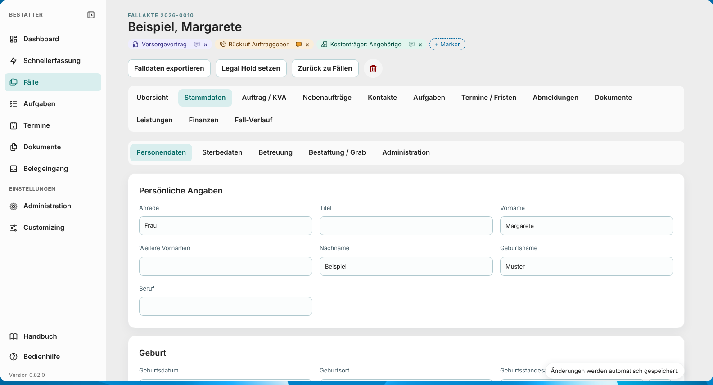
Der Reiter „Stammdaten“ ist in fünf Unterreiter gegliedert:
| Unterreiter | Inhalt |
|---|---|
| „Personendaten“ | Anrede, Namen, Geburt, Familie, Ehepartner, Ausweis, Rentenversicherung |
| „Sterbedaten“ | Todeszeitpunkt, Sterbeort, letzter Wohnsitz, Überführung, Standesamt |
| „Betreuung“ | ob eine gesetzliche Betreuung bestand, mit Betreuerkontakt |
| „Bestattung / Grab“ | Bestattungsvariante, Trauerfeier, Abholzeit, Größe, Gewicht, Zuschläge, Friedhof, Grab, Urne |
| „Administration“ | verantwortlicher Mitarbeiter, Niederlassung, Fallstatus, interne Notizen |
Alle Eingaben werden automatisch gespeichert, kurz nachdem Sie aufhören zu tippen oder ein Feld verlassen. Die Statuszeile zeigt „Speichert …“ und danach „Gespeichert“. Hat eine andere Person den Fall inzwischen geändert, meldet die Anwendung „Der Fall wurde inzwischen von einer anderen Person geändert.“ – laden Sie dann die Fallansicht neu und wiederholen Sie die Änderung.
Hinweise zu einzelnen Feldern
- Todeszeitpunkt: Unter „Angabe des Todeszeitpunkts“ wählen Sie „Exakter Zeitpunkt“ (Datum und Uhrzeit) oder „Zeitraum von/bis“, wenn der Zeitpunkt nicht genau bekannt ist.
- Ehepartner: Die Felder zu Ehepartner und Ehe erscheinen nur bei den Familienständen verheiratet, verwitwet, geschieden oder Lebenspartnerschaft. Widersprüche, etwa „ledig“ mit Ehedaten, zeigt die Anwendung als Hinweis an.
- Kontakte in Feldern: Geburtsstandesamt, Standesamt, Betreuer und Friedhof wählen Sie aus Nextcloud-Kontakten der passenden Kategorie. „Neu“ legt einen fehlenden Kontakt direkt an. Ein Freitext, der nicht im Adressbuch steht, ist mit „(nicht im Adressbuch – bitte zuordnen oder „Neu“)“ markiert.
- Größe und Gewicht: Die Anwendung akzeptiert nur plausible Werte (1–300 cm, 1–600 kg).
- Verantwortlicher Mitarbeiter: Nach der Anlage kann nur ein Bestatter-Administrator die verantwortliche Person ändern.
Bestattungsvariante
Die Bestattungsvariante wählen Sie schrittweise: zuerst die Bestattungsart, dann gegebenenfalls „Unterauswahl 1“, „Unterauswahl 2“ und so weiter. Jeder Schritt wird sofort gespeichert; ein Zwischenstand ist erlaubt („Unterauswahl noch offen; der Zwischenstand darf gespeichert werden.“). Aus der Variante leitet die Anwendung ab, welche Warengruppen im Auftrag erforderlich oder ausgeschlossen sind und welche Artikel vorgeschlagen werden.
Zuschlagsstaffeln
Für Abholung, Größe, Gewicht und weitere Merkmale merken Sie eine Zuschlagsstaffel vor. Das ist eine Vormerkung ohne automatischen Preis: Den Zuschlag übernehmen Sie über die Leistungs- und Zuschlagsprüfung im Ablauf oder im Reiter „Leistungen“. Ist der Vertrag bereits festgeschrieben, sind die Staffeln gesperrt; Zuschläge sind dann nur noch als begründeter Vertragsnachtrag möglich.
7. Auftrag und Kostenvoranschlag
Überblick
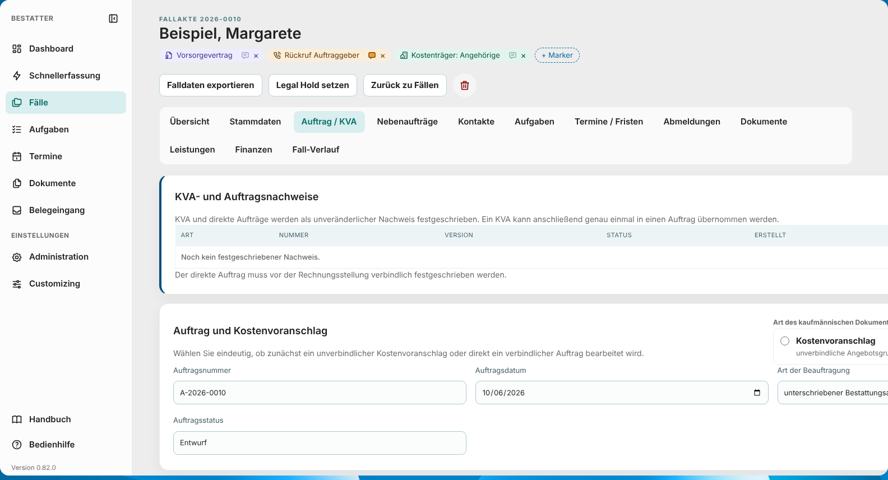
Im Reiter „Auftrag / KVA“ halten Sie fest, wer den Auftrag erteilt, wer die Rechnung erhält und wie bezahlt wird. Hier wird ein Kostenvoranschlag oder ein Auftrag verbindlich festgeschrieben. Alle Felder werden automatisch gespeichert.
Die Positionen des Auftrags erscheinen im selben Reiter weiter unten; sie sind identisch mit dem Reiter „Leistungen“ (Kapitel 8).
Kostenvoranschlag oder Auftrag
Unter „Art des kaufmännischen Dokuments“ wählen Sie:
- „Kostenvoranschlag“ – eine unverbindliche Angebotsgrundlage mit „KVA-Nummer“, „KVA-Datum“ und „Gültig bis“.
- „Auftrag“ – die verbindliche Beauftragung mit „Auftragsnummer“, „Auftragsdatum“ und „Art der Beauftragung“ (unterschriebener Bestattungsauftrag, mündlich, telefonisch oder digital).
Ein festgeschriebener Kostenvoranschlag wird mit „Einmalig in Auftrag übernehmen“ zum Auftrag; die Positionen werden übernommen, der Kostenvoranschlag bleibt als Nachweis erhalten.
Auftraggeber, Rechnungsempfänger und Zahlungsart
- „Auftraggeber / Angehöriger“: Name, Anschrift, Beziehung zum Verstorbenen und Erreichbarkeit.
- „Rechnungsempfänger“: Mit „Wie Auftraggeber“ (voreingestellt) gilt der Auftraggeber. Nehmen Sie das Häkchen heraus, wenn die Rechnung an eine andere Person gehen soll. Name und vollständige Anschrift sind für jede Rechnung Pflicht.
- „Zahlungsart“: Überweisung oder SEPA-Lastschrift. Bei Lastschrift sind „SEPA-Mandatsreferenz“, „Mandat erteilt am“, „Geplanter Einzug am“, „Kontoinhaber/in“ und „IBAN des Zahlungspflichtigen“ erforderlich. Die Bankdaten des Zahlungspflichtigen erscheinen nicht auf der Rechnung, nur der Einzugshinweis mit Mandatsreferenz und Gläubiger-ID.
- „Sterbeurkunden und Hinweise“: Anzahl gebührenfreier und gebührenpflichtiger Sterbeurkunden sowie eine Auftragsnotiz.
Digital unterschreiben und Vorschau
„Digital unterschreiben“ bestätigt den Auftrag digital und speichert Name und Zeitpunkt. „KVA-Vorschau“ beziehungsweise „Auftrag und Vollmacht prüfen“ zeigt eine PDF-Vorschau von Bestattungsauftrag und Bestattungsvollmacht, ohne etwas abzulegen. Von dort aus drucken Sie den Auftrag oder erzeugen mit „Entwurfspaket erzeugen“ bearbeitbare Entwürfe.
Soll der Auftrag auf Papier unterschrieben werden, beschreibt Kapitel 14 den Weg über die finale PDF-Revision und den unterschriebenen Scan.
Festschreiben
„KVA als PDF festschreiben“ beziehungsweise „Auftrag verbindlich festschreiben“ macht das Dokument unveränderlich und legt es als PDF im Fallordner ab. Vorher prüft die Anwendung die Angaben:
- Fehler verhindern das Festschreiben, zum Beispiel fehlende Anschrift des Auftraggebers, keine Position, eine Position ohne Preis, ein „Preis im Fall“ ohne tatsächlichen Preis oder eine verletzte Auswahlregel wie „genau ein Sarg“. Die Anwendung springt zum ersten fehlerhaften Feld.
- Hinweise müssen bestätigt werden, zum Beispiel eine Gesamtsumme von 0,00 €, fehlende Telefonnummer oder ein Auftrag ohne digitale Unterschrift („Hinweise bestätigen und fortfahren“).
Nach dem Festschreiben sind die Vertragspreise geschützt. Änderungen sind nur noch als begründeter Vertragsnachtrag möglich (Kapitel 8).
Auftragsstatus
Der „Auftragsstatus“ lautet Entwurf, KVA versendet, beauftragt oder storniert. Nach dem Festschreiben ergibt er sich automatisch aus Dokumenten und Rechnungen.
- Stornieren: Mit „storniert“ und der Bestätigung „Stornieren“ wird der Auftrag storniert; offene Folgeaufgaben werden geschlossen.
- Ohne Rechnung abschließen: Ist nichts abzurechnen, beendet „Auftrag als erledigt markieren“ den Auftrag mit einer Begründung. Die Vollständigkeitsprüfung entfällt dann für diesen Fall.
8. Leistungen, Pakete und Auftragsformular
Die Positionstabelle
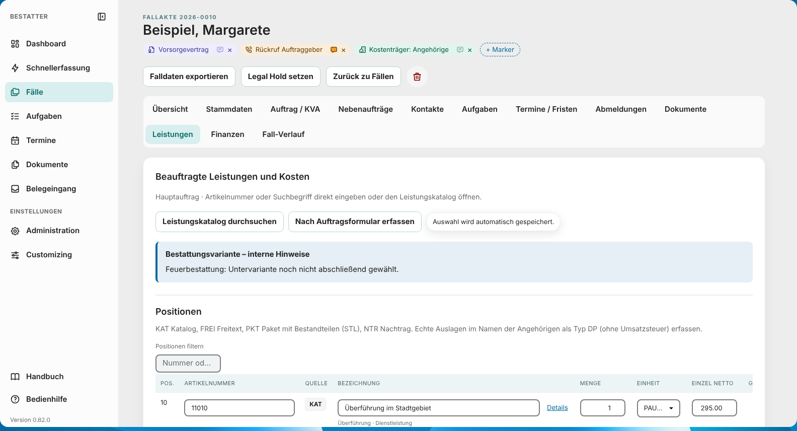
Der Reiter „Leistungen“ (auch unten im Reiter „Auftrag / KVA“) zeigt alle beauftragten Leistungen und Kosten. Die Auswahl wird automatisch gespeichert.
- Spalten: Pos., Artikelnummer, Quelle, Bezeichnung, Menge, Einheit, Einzel netto, Gesamt netto, MwSt.-Satz, Typ, Gesamt brutto.
- Quelle: KAT (Katalog), FREI (Freitext), PKT (Paket), STL (Bestandteil eines Pakets), NTR (Nachtrag) und OPT (abgewählter optionaler Bestandteil).
- Typ: EL (eigene Leistung), FK (Fremdkosten/Fremdleistung) und DP (echter durchlaufender Posten im Namen der Angehörigen, ohne Umsatzsteuer).
Position hinzufügen: In der leeren letzten Zeile tippen Sie eine Artikelnummer oder einen Suchbegriff. Die Anwendung schlägt bis zu acht passende aktive Artikel vor; mit den Pfeiltasten und Enter übernehmen Sie einen Treffer. Ohne Artikel wird die Zeile zur Freitextposition mit eigener Bezeichnung, Preis und Steuersatz. „Details“ zeigt Verkaufstext, Warengruppe und das Feld „Bemerkung zur Position“.
Leistungskatalog durchsuchen: Der Dialog „Leistung suchen und hinzufügen“ filtert nach Bereich, Warengruppe und Artikelart und zeigt die aktuelle Auswahl mit Gesamtsumme.
Auswahlregeln: Manche Warengruppen erlauben „Höchstens eine Position“ oder „Genau eine Position“, zum Beispiel genau einen Sarg. Wählen Sie zwei Artikel aus einer solchen Gruppe, erscheint „Auswahlkonflikt – noch nicht gespeichert“; die Auswahl wird erst nach der Korrektur gespeichert.
Preis im Fall: Bei Gebühren laut Bescheid zeigt der Katalog nur einen Richtwert. Der tatsächliche Preis ist vor dem Festschreiben Pflicht.
Pakete
Ein Paket (Quelle PKT) fasst mehrere Leistungen zusammen. Seine Bestandteile übernimmt die Anwendung aus der Stückliste.
- Festpreis oder Summe: Beim Festpreis-Paket gilt der „Paketpreis netto (Festpreis)“ und die Bestandteile werden anteilig bewertet; sonst ist der Paketpreis die Summe der Bestandteile.
- Alternativen: Unter „Alternative wählen“ tauschen Sie einen Bestandteil gegen eine Alternative, mit Anzeige von Mehr- oder Minderpreis.
- Optionale Bestandteile: „abwählen“ nimmt einen Bestandteil heraus, gegebenenfalls mit Minderpreis; „wieder aufnehmen“ macht das rückgängig.
- Druckart: Wählen Sie, ob Auftrag und Rechnung nur die Paketzeile, die Bestandteile ohne Einzelpreise oder die Bestandteile mit Einzelpreisen zeigen.
Vertragspreise und Vertragsnachtrag
Nach dem Festschreiben von Kostenvoranschlag oder Auftrag zeigt der Reiter „Vertragspreise geschützt“. Positionsnummern und Preise bleiben dann unverändert.
- „Vertragsnachtrag erfassen“ öffnet die Nachtragsbearbeitung mit einem „Änderungsgrund“ (mindestens 5 Zeichen). Neue Positionen erhalten die Quelle NTR, entfernte Positionen werden storniert und nicht gelöscht.
- Bereits fakturierte Positionen bleiben geschützt.
- Nach einer Schlussrechnung sind Vertragsänderungen ganz gesperrt.
- „Nachtragsbearbeitung beenden“ schließt die Bearbeitung.
Nach Auftragsformular erfassen
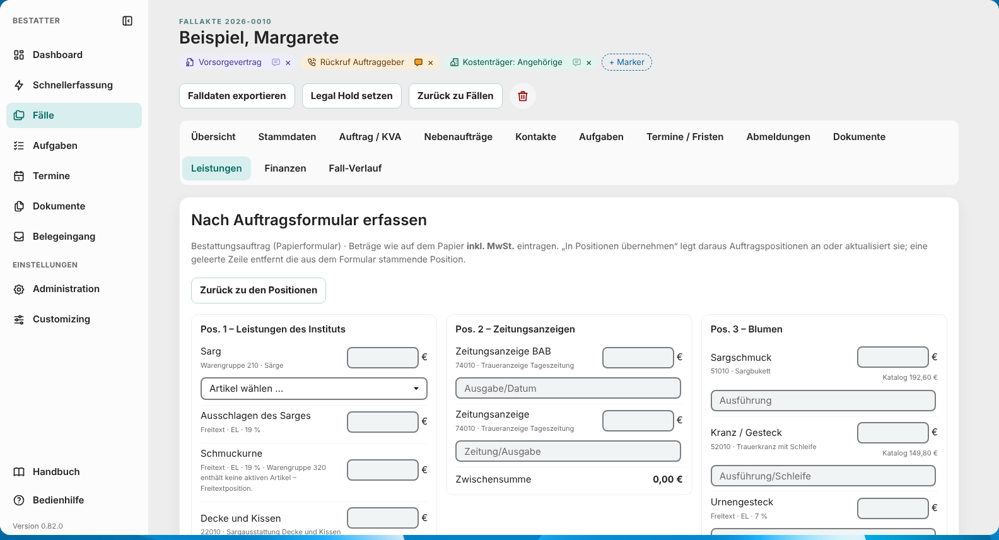
Viele Unternehmen füllen im Beratungsgespräch einen Papier-Bestattungsauftrag aus. „Nach Auftragsformular erfassen“ zeigt dieses Formular am Bildschirm: Sie tragen die Beträge brutto so ein, wie sie auf dem Papier stehen, und übernehmen sie als Positionen. Die Formulare pflegt die Administration (Kapitel 18).
Leistungs- und Zuschlagsprüfung
Der Ablauf enthält optional den Schritt „Leistungs- und Zuschlagsprüfung“. Sein Knopf öffnet eine Prüfung, welche Zuschläge aus den vorgemerkten Zuschlagsstaffeln (Kapitel 6) noch nicht im Auftrag stehen. Von dort springen Sie mit „In Leistungen öffnen“ in die Positionen oder mit „Eingangsrechnungen öffnen“ zu den Fremdkosten.
9. Nebenaufträge
Wozu Nebenaufträge dienen
Bestellen weitere Personen etwas zum selben Sterbefall – etwa ein Enkel einen eigenen Kranz oder eine Traueranzeige –, erfassen Sie das als Nebenauftrag. Er bleibt dem Sterbefall zugeordnet, wird aber getrennt vom Hauptauftrag geführt und abgerechnet. Die Nummer lautet Fallnummer plus „-N1“, „-N2“ und so weiter.
Nebenauftrag anlegen
Im Reiter „Nebenaufträge“ öffnen Sie den Bereich „Nebenauftrag anlegen“. Pflicht ist der Nachname; für die spätere Beauftragung werden Vorname und vollständige Anschrift benötigt. „Benötigt bis“ ist mit dem Beisetzungstermin vorbelegt. In abgeschlossenen oder stornierten Fällen können keine neuen Nebenaufträge angelegt werden.
Bearbeiten und Status
Ein Klick auf einen Nebenauftrag öffnet ihn mit den Unterreitern „Kopfdaten“, „Positionen“ und „Finanzen / Abrechnung“. Die Positionen erfassen Sie wie im Hauptauftrag (Kapitel 8); das Auftragsformular steht nur im Hauptauftrag zur Verfügung.
| Status | Wechsel mit | Voraussetzung |
|---|---|---|
| Entwurf | – | Kopfdaten sind nur hier änderbar |
| Beauftragt | „Beauftragen“ | Vorname, Nachname, Anschrift und mindestens eine Position; danach sind Änderungen nur als begründeter Nachtrag möglich |
| Abgeschlossen | „Abschließen“ | die Schlussrechnung des Nebenauftrags ist freigegeben |
| Storniert | „Stornieren“ | alle Rechnungen des Nebenauftrags sind storniert |
Rechnungen für einen Nebenauftrag gibt es erst im Status „Beauftragt“. Rechnungsempfänger ist der Nebenauftraggeber. Offene Nebenaufträge (Entwurf oder Beauftragt) verhindern den Abschluss des Falls.
10. Kontakte
Kontakte in Nextcloud, Rollen im Fall
Kontaktdaten werden zentral in Nextcloud Contacts gepflegt. Die Fallakte speichert nur, welcher Kontakt in welcher Rolle zum Fall gehört. Ändert sich eine Telefonnummer, pflegen Sie sie einmal im Adressbuch. Wie das Adressbuch eingerichtet wird und was Änderungen bewirken, steht in Kapitel 12.
Damit Kontakte in den Auswahllisten der Anwendung erscheinen, tragen sie in Nextcloud Contacts eine passende Kategorie, zum Beispiel „Standesämter“, „Friedhöfe“, „Betreuer“ oder „Lieferant“. Für Abmeldungen ordnet die Administration jedem Abmeldevorgang eine Kontaktgruppe zu (Kapitel 19).
Kontakt zuordnen
Im Reiter „Kontakte“ wählen Sie „Kontakt zuordnen“. Im Dialog wählen Sie den „Nextcloud-Kontakt“ und tragen die „Rolle im Fall“ ein, zum Beispiel „Tochter“, „Standesamt“ oder „Friedhof“. „Zuordnung speichern“ übernimmt den Kontakt; „Bearbeiten“ ändert die Rolle später.
Kontakte für Standesamt, Betreuer und Friedhof wählen Sie direkt in den Stammdaten (Kapitel 6); dort legt „Neu“ einen fehlenden Kontakt an.
11. Aufgaben, Termine und Disposition
Aufgaben
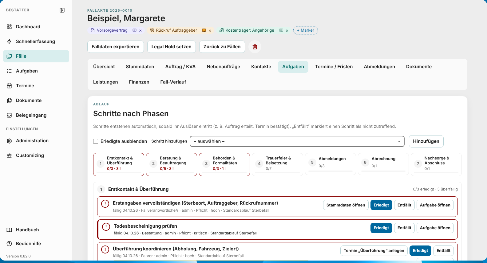
Aufgaben finden Sie an zwei Stellen: in der Hauptansicht „Aufgaben“ (alle Aufgaben, auch ohne Fallbezug) und im Reiter „Aufgaben“ der Fallakte.
Im Fall zeigt der Reiter oben die Karte „Schritte nach Phasen“: alle Ablaufschritte des Falls, gegliedert nach den sieben Phasen. Phasen mit offenen oder überfälligen Schritten sind aufgeklappt.
- „Erledigte ausblenden“ blendet erledigte Schritte aus.
- „Wieder öffnen“ setzt einen erledigten oder entfallenen Schritt zurück.
- „Aufgabe öffnen“ öffnet die zugehörige Aufgabe.
- „Schritt hinzufügen“ holt einen Schritt vorzeitig oder von Hand in den Fall, auch einen, der erst nach Start des Falls in die Ablaufvorlage aufgenommen wurde (Bestandsschutz).
Darunter steht die Aufgabenliste mit Filtern nach „Rolle“ (auch „Meine Aufgaben (ich oder meine Rolle)“), „Zuständigkeit“ und „Status“ sowie einer Sortierung. Das Kästchen vor einer Aufgabe hakt sie direkt ab.
Neue Aufgabe: „Neu anlegen“ öffnet das Formular.
- „Bezeichnung“ ist Pflicht; die Vorschlagsliste enthält die bekannten Ablaufschritte.
- Außerdem: „Beschreibung“, „Fälligkeitsdatum“, „Fälligkeitszeit“, „Priorität“, „Zuständig“ und „Status“.
- „In Nextcloud speichern“ legt die Aufgabe an und schreibt sie in die Nextcloud-Aufgabenliste der Person, die sie anlegt; die zuständige Person (bei Rollenaufgaben jedes Rollenmitglied) erhält eine Kopie in ihrer eigenen Aufgabenliste (Kapitel 12).
- Beim Bearbeiten legt „Folgeaufgabe anlegen“ oder „Folgetermin / Frist anlegen“ direkt eine Folgeaktion an.
Aufgaben sieht nur, wer sie angelegt hat oder wem sie zugewiesen sind. Aufgaben einer Rolle gehen an die Mitglieder der Rollengruppe; ist keine Gruppe eingerichtet, gehen sie an die Fallverantwortung.
Termine
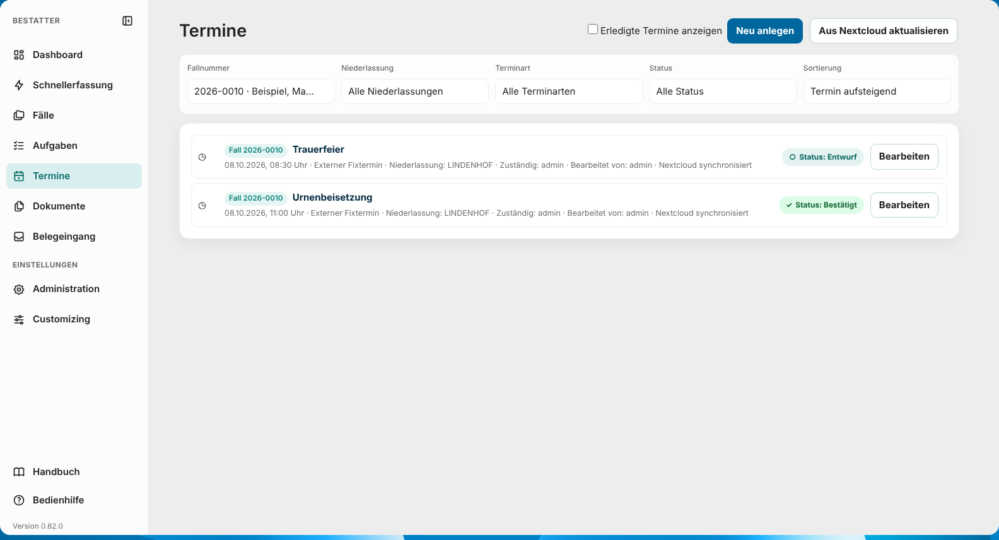
Termine stehen in der Hauptansicht „Termine“ und im Reiter „Termine / Fristen“ der Fallakte. Im Fall zeigt die Karte „Terminschritte“ oben die offenen terminbezogenen Ablaufschritte.
Neuer Termin: „Neu anlegen“ öffnet das Formular.
- Pflicht: „Bezeichnung“ und „Beginn“.
- „Zuständige Personen und persönliche Kalender“: Jede gewählte Person erhält den Termin in ihrem Kalender.
- „Status“: Entwurf, Bestätigt, Geändert – Folgeaufgaben prüfen, Abgesagt, Erledigt. Erst „Bestätigt“ startet die konfigurierten Folgeaufgaben, zum Beispiel „Kondolenzlisten erstellen“ drei Tage vor einer Trauerfeier.
Abschnitt „Terminart und Disposition“:
- „Terminart / Vorlage“ übernimmt Dauer, Vorbereitungs- und Nachbereitungszeit und die vorkonfigurierten Ressourcen, zum Beispiel für „1. Trauerfeier“, „Beisetzung“, „Überführung“ oder „Beratungsgespräch“.
- „Fachliche Einordnung“: „Interne Tätigkeit / prozessbedingter Termin“ oder „Externer Fixtermin“. Ein externer Fixtermin braucht einen „Ort“; unter „Externe Personen / Organisationen“ tragen Sie Beteiligte ein, mehrere mit Semikolon getrennt.
- Ressourcen: Wählen Sie Fahrzeuge, Räume, Kapellen und Ausstattung. Verlangt die Terminart einen Mindestbedarf, speichert die Anwendung den Termin erst, wenn er erfüllt ist.
Änderungsgrund: Ändern Sie später Zeit, Ort, Personen, Ressourcen oder Status, ist ein „Änderungsgrund“ Pflicht. Der „Änderungsverlauf“ zeigt alle Änderungen mit Grund. Verknüpfte Aufgaben werden nach einer Terminänderung zur erneuten Prüfung markiert.
Terminkonflikte
Beim Speichern prüft die Anwendung, ob Personen oder konfliktrelevante Ressourcen einschließlich Vor- und Nachbereitungszeit bereits durch einen anderen Termin belegt sind. Bei einem Konflikt erscheint „Terminkonflikt: …“ mit bis zu drei freien Alternativen am selben Tag (08:00 bis 18:00 Uhr). Ein Klick übernimmt eine Alternative; danach speichern Sie erneut. Muss der Termin trotzdem stattfinden, setzen Sie „Erkannten Konflikt ausnahmsweise übersteuern (Begründung erforderlich)“ und tragen den Grund ein – bei einem neuen Termin unter „Begründung bei Übersteuerung eines Konflikts“, bei einer Änderung unter „Änderungsgrund“.
Hinweis: Die Konfliktprüfung berücksichtigt nur Termine der Anwendung, nicht private Kalendereinträge oder Abwesenheiten.
Abgleich mit Nextcloud Tasks und Kalender
Aufgaben stehen zusätzlich in der Nextcloud-Aufgabenliste der anlegenden Person, Termine in ihrem Kalender; die zuständigen Personen erhalten jeweils eine Kopie. Hakt die zuständige Person ihre Kopie ab, ist die Aufgabe auch in Bestatter erledigt. Der Titel enthält die Fallnummer, die Beschreibung einen Link „In Bestatter bearbeiten“ zurück in die Anwendung.
- Änderungen in Nextcloud (Titel, Zeit, Status, Priorität, Beschreibung, Ort) übernimmt die Anwendung sofort beziehungsweise beim nächsten Abgleich, spätestens nach einer Minute oder mit „Aus Nextcloud aktualisieren“. Änderungen an den Terminkopien der Kolleginnen und Kollegen werden nicht übernommen.
- Löschen in Nextcloud: Der Eintrag bleibt in der Anwendung erhalten und ist mit „in Nextcloud gelöscht, lokal erhalten“ markiert.
- Synchronisationsfehler: Konnte ein Eintrag nicht übertragen werden, ist er mit „Synchronisationsfehler“ markiert. In der Anwendung bleibt er trotzdem gespeichert. Häufigste Ursache: Die Person hat keinen beschreibbaren Kalender oder keine Aufgabenliste. Sobald beides existiert, überträgt die App den Eintrag automatisch.
Welche Kalender und Listen genau verwendet werden, wie Einträge in Nextcloud aussehen und was Änderungen auf beiden Seiten bewirken, beschreibt Kapitel 12.
12. Verbindung zu Nextcloud – Kontakte, Termine und Aufgaben
Bestatter hat keine eigene Adressverwaltung, keinen eigenen Kalender und keine eigene Aufgabenliste. Stattdessen nutzt die App die Nextcloud-Apps Kontakte, Kalender und Aufgaben (Tasks). Dieses Kapitel zeigt, was wohin geschrieben wird, was Änderungen in Nextcloud bewirken und was eingerichtet sein muss.
| Bereich | In Nextcloud | Richtung | Was die App speichert |
|---|---|---|---|
| Kontakte | Adressbücher der App Kontakte | Nextcloud → Bestatter (Anlegen über „Neu“ auch umgekehrt) | Name des Kontakts in den Stammdaten bzw. Zuordnung mit Rolle im Fall |
| Termine | persönlicher Kalender der anlegenden Person, Kopie bei jeder weiteren zuständigen Person | beide Richtungen | vollständiger Termin; Nextcloud zeigt eine Kopie |
| Aufgaben | Aufgabenliste der Person, die die Aufgabe anlegt, Kopie bei der zuständigen Person bzw. den Mitgliedern der Rolle | beide Richtungen | vollständige Aufgabe; Nextcloud zeigt eine Kopie |
Die App ist in allen drei Bereichen führend: Termine und Aufgaben gehören zur Fallakte und bleiben dort auch dann erhalten, wenn sie in Nextcloud gelöscht werden.
Kontakte
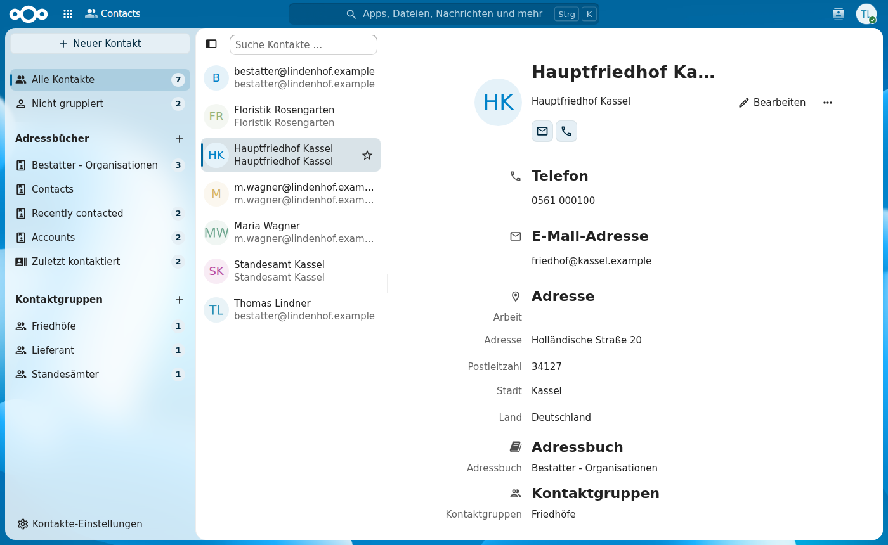
Woher die Kontakte kommen: Die App liest alle Adressbücher, die die angemeldete Person in Nextcloud Kontakte sieht – eigene und für sie freigegebene. Das Systemadressbuch mit den Nextcloud-Konten wird nicht gelesen. Zusätzlich stehen die Mitglieder der Gruppe Bestatter als Kontakte zur Verfügung.
Wichtig: Jede Person sieht nur ihre eigenen und die für sie freigegebenen Adressbücher. Damit alle mit denselben Standesämtern, Friedhöfen und Lieferanten arbeiten, legen Sie ein gemeinsames Adressbuch Bestatter - Organisationen an und geben es in Nextcloud Kontakte für die Gruppe Bestatter frei (mit Schreibrecht für alle, die Kontakte anlegen sollen).
Kontaktgruppen steuern die Auswahllisten. Ein Kontakt erscheint in einer Auswahl nur, wenn er in Nextcloud Kontakte die passende Kontaktgruppe trägt. Die Schreibweise muss genau stimmen:
| Kontaktgruppe in Nextcloud | Erscheint in Bestatter bei |
|---|---|
| Standesämter | Stammdaten: Geburtsstandesamt, zuständiges Standesamt |
| Friedhöfe | Stammdaten: „Friedhof aus Nextcloud-Kontakten“ |
| Betreuer | Stammdaten: Betreuerkontakt |
| Lieferant | Eingangsrechnungen: Lieferant |
| frei wählbar | Abmeldungen: je Abmeldevorgang festgelegte Kontaktgruppe (Kapitel 19) |
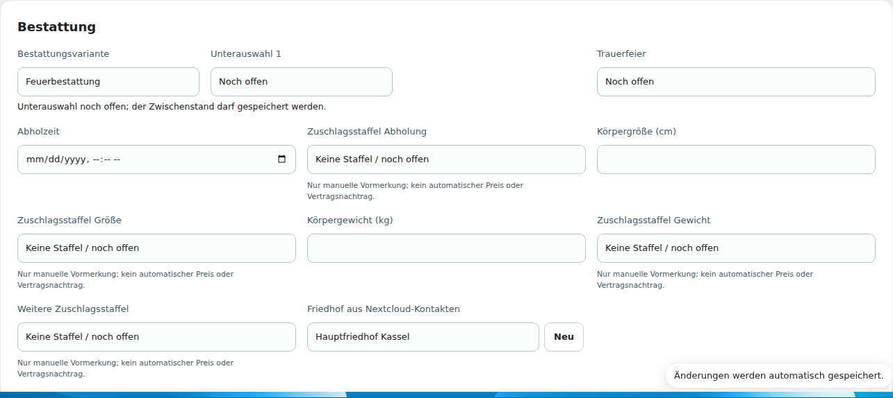
Kontakt aus der App anlegen: Der Knopf „Neu“ neben einem Kontaktfeld legt den Kontakt direkt in Nextcloud an – im Adressbuch, dessen Name „Bestatter“ und „Organisationen“ enthält, sonst im ersten eigenen Adressbuch. Gespeichert werden Name (auch als Firma), Kontaktgruppe, E-Mail, Telefon, Webseite und die Anschrift als Geschäftsadresse. Vorher prüft die App auf mögliche Dubletten mit gleichem Namen oder gleicher Anschrift.
Was im Fall gespeichert wird:
- Stammdatenfelder (Standesamt, Friedhof, Betreuer) merken sich den Namen des Kontakts. Dokumente verwenden diesen Namen.
- Fallkontakte im Reiter „Kontakte“ speichern die Zuordnung zum Nextcloud-Kontakt, die „Rolle im Fall“ und eine Momentaufnahme von Name, Telefon, E-Mail und Anschrift.
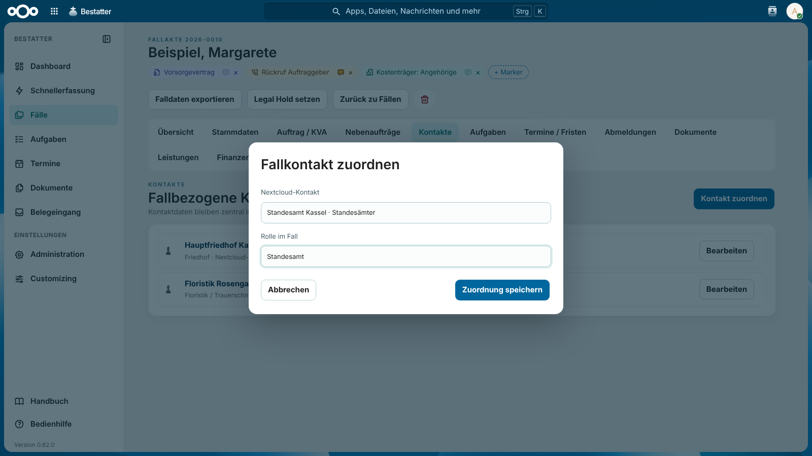
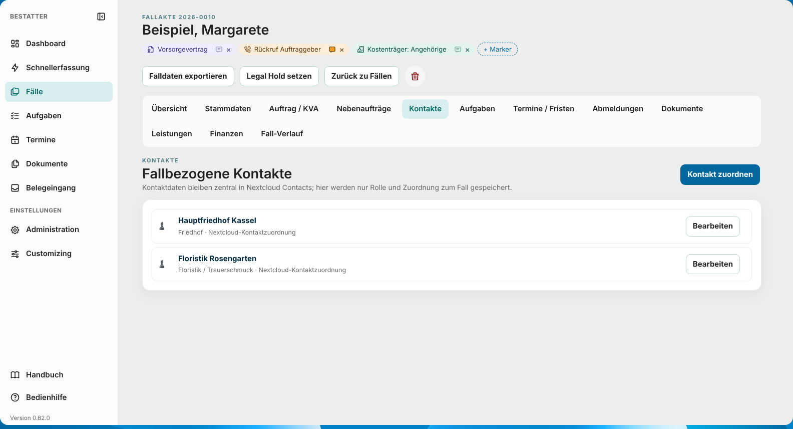
Auswirkungen von Änderungen in Nextcloud:
| Sie ändern in Nextcloud Kontakte … | Auswirkung in Bestatter |
|---|---|
| Telefon, E-Mail oder Anschrift | Neue Auswahlen und Abmeldungen verwenden sofort die neuen Daten. Bereits erzeugte Dokumente ändern sich nicht. |
| den Namen | Stammdatenfelder zeigen den alten Namen mit dem Zusatz „(nicht im Adressbuch – bitte zuordnen oder „Neu“)“; bitte den Kontakt neu auswählen. Fallkontakte zeigen weiter den Namen zum Zeitpunkt der Zuordnung. |
| die Kontaktgruppe | Der Kontakt verschwindet aus der zugehörigen Auswahl bzw. erscheint dort neu. |
| Sie löschen den Kontakt | Bereits gespeicherte Namen in Fällen bleiben erhalten; für neue Auswahlen steht der Kontakt nicht mehr zur Verfügung. |
Termine im Nextcloud-Kalender
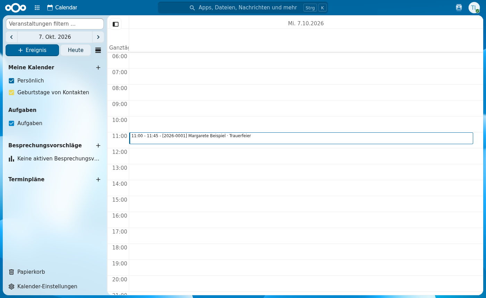
Wohin ein Termin geschrieben wird: in den ersten beschreibbaren Kalender der Person, die den Termin anlegt, der Termine aufnehmen kann – normalerweise Persönlich. Jede weitere Person unter „Zuständige Personen und persönliche Kalender“ erhält eine Kopie in ihrem eigenen Kalender. Geburtstagskalender werden nie verwendet.
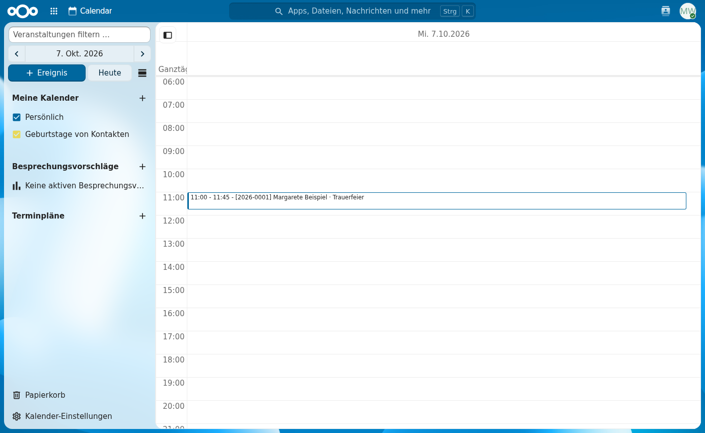
So sieht der Termin in Nextcloud aus:
- Titel: Fallnummer, Name der verstorbenen Person und Bezeichnung, zum Beispiel [2026-0001] Margarete Beispiel · Trauerfeier.
- Beginn und Ende aus Beginn und Dauer der Terminart (Zeitzone Europe/Berlin), Ort aus dem Feld „Ort“.
- Beschreibung: Fallnummer, bei externen Fixterminen Terminart und externe Beteiligte, danach die eigene Beschreibung.
- Kategorien: Bestatter sowie Externer Termin oder Interne Tätigkeit.
- Ein abgesagter Termin wird in Nextcloud als abgesagt markiert, nicht gelöscht.
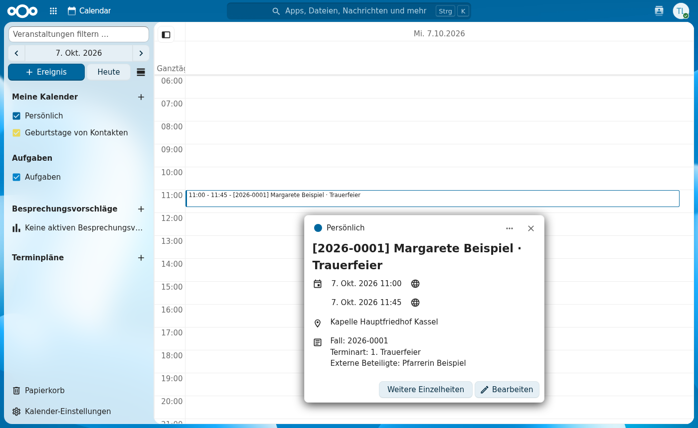
Auswirkungen von Änderungen in Nextcloud:
| Sie ändern im Nextcloud-Kalender … | Auswirkung in Bestatter |
|---|---|
| Titel, Zeit, Ort, Beschreibung oder Status des eigenen Termins | Die App übernimmt die Änderung sofort und gleicht die Kopien der weiteren Zuständigen an; die geöffnete Ansicht aktualisiert sich spätestens nach einer Minute oder mit „Aus Nextcloud aktualisieren“. Ablaufzuordnung und weitere App-Daten des Termins bleiben erhalten. |
| die Kopie im Kalender einer weiteren zuständigen Person | Keine Auswirkung. Änderungen bitte in Bestatter oder im Termin der anlegenden Person vornehmen. |
| Sie löschen den Termin | Der Termin bleibt in Bestatter erhalten und ist mit „in Nextcloud gelöscht, lokal erhalten“ markiert. |
| Sie legen einen eigenen Termin ohne Bezug zu Bestatter an | Wird ignoriert. |
Hinweis: Die Konfliktprüfung (Kapitel 11) berücksichtigt nur Termine der App, keine privaten Einträge oder Abwesenheiten im Nextcloud-Kalender.
Aufgaben in Nextcloud Aufgaben (Tasks)
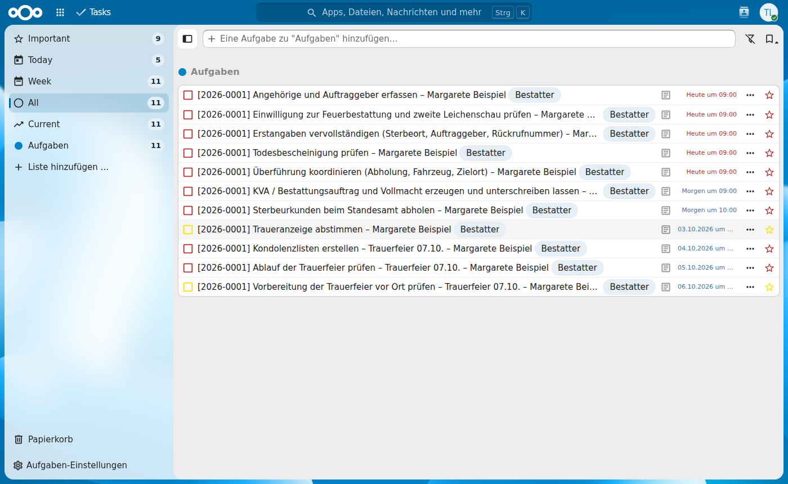
Wohin eine Aufgabe geschrieben wird: in die erste beschreibbare Aufgabenliste der Person, die die Aufgabe anlegt oder deren Aktion sie im Ablauf auslöst. Ist eine andere Person zuständig, erhält sie eine Kopie in ihrer eigenen Aufgabenliste; bei Aufgaben einer Rolle erhält jedes Mitglied der Rollengruppe eine Kopie. Wird die Zuständigkeit geändert, verschwindet die Kopie bei der bisherigen Person und entsteht bei der neuen.
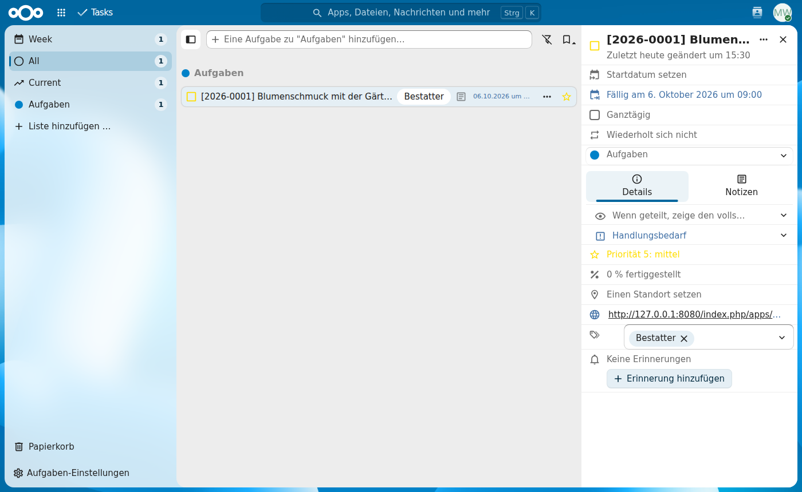
Wichtig: Der Kalender Persönlich nimmt in Nextcloud 35 keine Aufgaben auf. Eine Aufgabenliste entsteht erst, wenn die Person die App Aufgaben einmal öffnet (Liste Aufgaben) oder selbst eine Liste anlegt. Ohne Liste bleibt die Aufgabe bzw. Kopie zunächst nur in Bestatter und zeigt „Synchronisationsfehler“; sobald die Liste existiert, überträgt die App sie automatisch (siehe unten).
So sieht die Aufgabe in Nextcloud aus:
- Titel: Fallnummer, Bezeichnung und Name der verstorbenen Person, zum Beispiel [2026-0001] Sterbeurkunden beim Standesamt abholen – Margarete Beispiel.
- Fälligkeit aus „Fälligkeitsdatum“ und „Fälligkeitszeit“, Kategorie Bestatter.
- Priorität: „Kritisch“ und „Hoch“ werden zu Priorität 1 (hoch), „Normal“ zu 5, „Niedrig“ zu 9.
- Status: „Erledigt“ wird abgehakt, „In Bearbeitung“ wird in Nextcloud zu in Bearbeitung, alle übrigen Status zu Handlungsbedarf.
- Beschreibung und Link: Fallnummer, Zuständigkeit und der Link „In Bestatter bearbeiten“ führen direkt zur Aufgabe in der App.
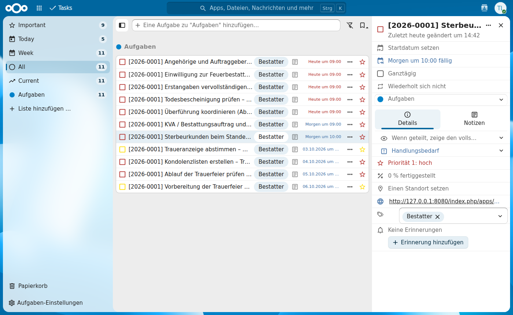
Auswirkungen von Änderungen in Nextcloud:
| Sie ändern in Nextcloud Aufgaben … | Auswirkung in Bestatter |
|---|---|
| Abhaken, Titel, Fälligkeit, Priorität oder Beschreibung der eigenen Aufgabe | Die App übernimmt die Änderung sofort und gleicht die Kopien an. Ablaufschritt, Rolle und Verknüpfungen der Aufgabe bleiben erhalten. |
| Abhaken (oder wieder öffnen) der Kopie als zuständige Person | Die Aufgabe steht in Bestatter auf „Erledigt“ bzw. wieder offen; die Aufgabe der anlegenden Person und alle übrigen Kopien werden mit abgehakt. Im Fall-Verlauf steht die zuständige Person als Bearbeiterin. |
| Titel, Fälligkeit oder Beschreibung der Kopie | Keine Auswirkung; beim nächsten Speichern in Bestatter wird die Kopie überschrieben. |
| Sie löschen die eigene Aufgabe | Die Aufgabe bleibt in Bestatter erhalten und trägt „in Nextcloud gelöscht, lokal erhalten“. |
| Sie löschen die Kopie | Keine Auswirkung; beim nächsten Speichern in Bestatter entsteht die Kopie neu. |
Voraussetzungen und typische Meldungen
| Meldung bei Termin oder Aufgabe | Ursache | Abhilfe |
|---|---|---|
| „Synchronisationsfehler“, Details: kein beschreibbarer Kalender gefunden (Aufgabe) | Die anlegende Person hat noch keine Aufgabenliste. | App Aufgaben einmal öffnen. Die App überträgt die Aufgabe danach automatisch. |
| „Synchronisationsfehler“, Details: kein beschreibbarer Kalender gefunden (Termin) | Die Person hat sich noch nie in Nextcloud angemeldet oder ihren Kalender gelöscht. | Einmal anmelden bzw. einen Kalender anlegen. Die App überträgt den Termin danach automatisch. |
| Kopie fehlt bei einer weiteren zuständigen Person | Die Person hat sich noch nie angemeldet (Termin) bzw. noch keine Aufgabenliste (Aufgabe). | Person meldet sich einmal an bzw. öffnet einmal die App Aufgaben; die Kopie folgt automatisch. |
| „in Nextcloud gelöscht, lokal erhalten“ | Der Eintrag wurde in Nextcloud gelöscht. | Kein Handlungsbedarf; beim nächsten Speichern in Bestatter wird er neu angelegt. |
Automatische Wiederholung: Ein Hintergrundjob prüft alle 30 Minuten, ob für Einträge mit „Synchronisationsfehler“ inzwischen ein passender Kalender bzw. eine Aufgabenliste existiert, und überträgt sie dann von selbst – auch fehlende Kopien. Wer nicht warten möchte, öffnet den Eintrag und speichert ihn. Scheitert die Übertragung trotz vorhandener Liste, versucht es die App für diesen Eintrag frühestens nach sechs Stunden erneut. In Nextcloud gelöschte Einträge legt der Job nicht neu an. Voraussetzung ist der Nextcloud-Cron (Kapitel 21).
Hinweis: Die „Systemprüfung“ nennt unter Nextcloud-Synchronisation die betroffenen Personen mit Anzahl und Ursache. So sieht die Administration sofort, wer sich noch einmal anmelden oder die App Aufgaben öffnen muss.
13. Abmeldungen
Überblick
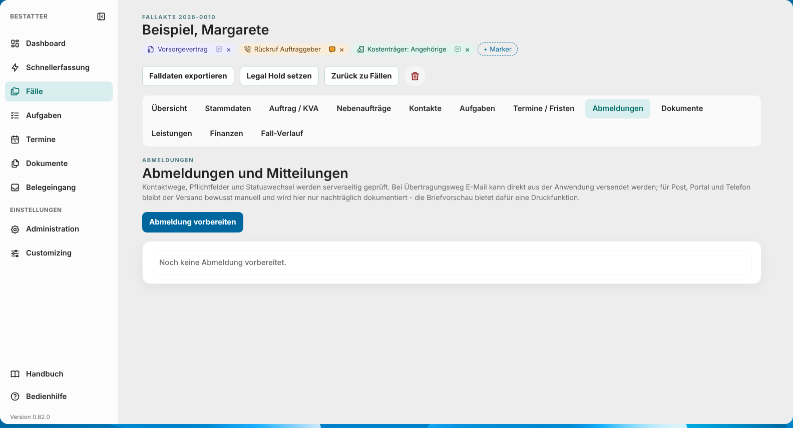
Im Reiter „Abmeldungen“ bereiten Sie Mitteilungen an Standesamt, Krankenkasse, Rentenservice, Friedhof, Versicherungen, Rundfunkbeitrag und weitere Vertragspartner vor und dokumentieren den Versand. Die verfügbaren Vorgänge und Texte pflegt die Administration (Kapitel 19).
Abmeldung vorbereiten
„Abmeldung vorbereiten“ öffnet das Formular:
- „Vorgang“: zum Beispiel „Krankenkasse / Pflegekasse“ oder „Rentenservice / Rentenversicherung“.
- „Empfänger“: ein Kontakt aus der Kontaktgruppe des Vorgangs.
- „Übertragungsweg“: E-Mail, Post, Portal oder Telefon – angeboten werden nur Wege, die der Vorgang erlaubt und die am Kontakt gepflegt sind.
- Rentenservice: Postrentennummer und gegebenenfalls der Vorschussantrag für die Witwe oder den Witwer.
- Referenz: zum Beispiel Versicherungs-, Beitrags- oder Kundennummer.
- „Anlagen aus der Fallakte“: Urkunden, Nachweise und Korrespondenz. Rechnungen und Auftragsunterlagen werden bewusst nicht angeboten. Eine vorhandene Sterbeurkunde ist vorausgewählt; „Dateien vom Computer hinzufügen“ lädt weitere Anlagen in den Ordner „03 Behörden“.
- „Betreff“ und „Text“: stammen aus der Vorlage und können angepasst werden. Die mitgelieferten Vorlagen nennen die Fallnummer als „Unser Zeichen“ im Betreff und bitten im Text, sie bei Rückfragen anzugeben. Antworten der Stellen findet der Belegeingang dann über die Fallnummer im Text (Kapitel 16). Die mitgelieferten Briefe (zum Beispiel Rundfunkbeitrag, Vertragspartner, Arbeitgeber, Kreditinstitut) tragen „Unser Zeichen“ unter Ort und Datum.
Ein Entwurf darf unvollständig gespeichert werden („Entwurf speichern“). „Vorschau“ zeigt den Brief beziehungsweise die Nachricht mit den noch fehlenden Pflichtangaben.
Status und Versand
| Status | Nächster Schritt |
|---|---|
| ENTWURF | „Vorbereiten“ – prüft die Pflichtangaben |
| VORBEREITET | „Versand erfassen“ oder bei E-Mail „Per E-Mail versenden“ |
| VERSENDET | „Bestätigen“, sobald die Stelle den Eingang bestätigt |
| BESTAETIGT | „Erledigen“ |
- „Versand erfassen“ / „Manuell erfassen“ dokumentiert einen Versand, der außerhalb der Anwendung erfolgt ist (Brief, Portal, Telefon). Pflicht ist ein „Versandnachweis / Notiz“; es wird keine E-Mail versendet.
- „Per E-Mail versenden“ sendet die Abmeldung mit Anlagen über den Nextcloud-Mailversand. Prüfen Sie Empfänger, Text und Anlagen und bestätigen Sie „Empfänger, Text und Anlagen habe ich geprüft.“. Grenzen: 15 MB je Anlage, 20 MB insgesamt. Nach dem Versand wechselt der Status automatisch auf VERSENDET.
- Wiedervorlage: Mit VERSENDET entsteht automatisch die Aufgabe „Rückmeldung prüfen“, fällig nach 7 oder 14 Tagen je Vorgang.
- Nach dem Versand kann die Abmeldung nicht mehr bearbeitet werden.
Hinweis: „Vom Mailserver angenommen“ ist kein Zustellnachweis. Meldet die Anwendung „Der Versandstatus ist unklar“, prüfen Sie das Geschäfts-Postfach, bevor Sie erneut senden.
Über den Ablaufschritt „Abmeldungen anlegen“ erzeugen Sie mehrere Abmeldungen auf einmal als Entwurf: Häkchen setzen und „Entwürfe anlegen“ wählen.
14. Dokumente, Papiervertrag und Versand
Überblick
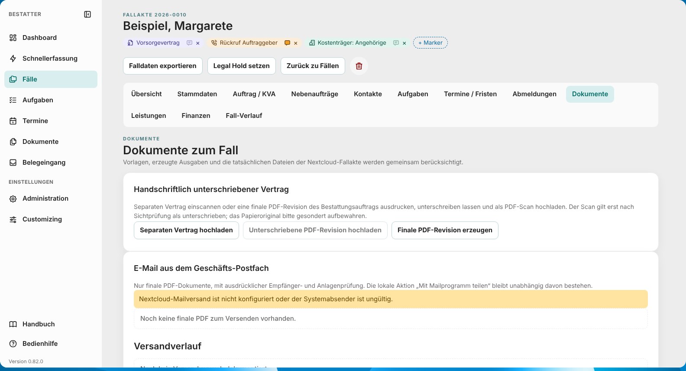
Der Reiter „Dokumente“ der Fallakte ist in Abschnitte gegliedert:
- „Handschriftlich unterschriebener Vertrag“
- „E-Mail aus dem Geschäfts-Postfach“
- „Dokumente hochladen“
- „Vorlagen auswählen“
- „Erstellte Ausgaben“
- „Dateien in der Nextcloud-Fallakte“
Die Hauptansicht „Dokumente“ listet die Dokumente aller Fälle mit Suche („Bezeichnung, Art oder Pfad“) und Filtern. Sie zeigt auch Dateien, die direkt in Nextcloud in einen Fallordner gelegt wurden (Status ABLAGE).
Dokument aus einer Vorlage erzeugen
Unter „Vorlagen auswählen“ steht für jede aktive Dokumentvorlage eine Karte. „Vorschau / erzeugen“ öffnet die „Dokumentvorschau“:
- Pflichtangaben: „Fehlend: …“ nennt Angaben, die für das Dokument noch fehlen; „Alle Pflichtangaben vorhanden.“ zeigt, dass alles da ist.
- Trauerfeier: Bei Trauerdrucksachen wählen Sie unter „Verknüpfte Trauerfeier“ einen bestätigten Trauerfeier-Termin.
- „Status“: „Entwurf – in Nextcloud Office bearbeitbar“ erzeugt eine DOCX-Datei, die Sie in Nextcloud weiter bearbeiten können. „Final – nur als PDF, nicht bearbeitbar“ erzeugt ein schreibgeschütztes PDF und ist nur wählbar, wenn alle Pflichtangaben vorhanden sind.
- „PDF zusätzlich erzeugen“ legt neben der DOCX-Datei ein PDF ab.
- „Aktuelle Ausgabe erzeugen“ legt das Dokument im vorgesehenen Unterordner der Fallakte ab.
Ein neuer Entwurf ersetzt den bisherigen Entwurf derselben Vorlage. Ein finales Dokument wird nie überschrieben. Scheitert nur die PDF-Erzeugung, bleibt die DOCX-Datei erhalten.
Erzeugte Dokumente und Dateien der Fallakte
„Erstellte Ausgaben“ und „Dateien in der Nextcloud-Fallakte“ zeigen je Datei eine Vorschau, den Ablageort, die letzte Bearbeitung und die passenden Aktionen:
- „In Nextcloud bearbeiten“ – nur für bearbeitbare, nicht finale Office-Dateien,
- „PDF öffnen“ beziehungsweise „Datei öffnen“,
- „Drucken“ – öffnet den Druckdialog des Browsers,
- „Mit Mailprogramm teilen“ – übergibt die Datei an Ihr Mailprogramm; dieser Versand wird nicht protokolliert.
Dokumente hochladen
Unter „Dokumente hochladen“ wählen Sie zuerst die „Dokumentart“ (zum Beispiel „Sterbeurkunde“ oder „Rückmeldung Abmeldestelle“, Kapitel 19). Sie wählt die „Ablage im Fall“ (Unterordner) und die „Kategorie“ vor; die Ablage können Sie ändern. Danach „Dateien auswählen“ (mehrere möglich, bis 50 MB je Datei). Ohne Dokumentart („– ohne Dokumentart –“) wählen Sie Ablage und Kategorie selbst. Eine Dokumentart löst wie im Belegeingang den Ablaufauslöser „Dokument eingegangen“ aus; Eingangsrechnungen erfassen Sie dagegen unter „Finanzen“, unterschriebene Verträge unter „Handschriftlich unterschriebener Vertrag“. Gleichnamige Dateien werden nicht überschrieben, sondern mit „(2)“ ergänzt. Ausführbare oder aktive Inhalte wie Programme, Skripte, HTML oder SVG werden aus Sicherheitsgründen abgewiesen.
Handschriftlich unterschriebener Vertrag
Soll der Bestattungsauftrag auf Papier unterschrieben werden, erzeugen Sie zuerst mit „Finale PDF-Revision erzeugen“ eine finale Fassung (Revisionen „R01“, „R02“ …), drucken sie aus, lassen sie unterschreiben und laden den Scan hoch. Ein Vertrag auf eigenem Papier wird über „Separaten Vertrag hochladen“ erfasst.
Versand aus dem Geschäfts-Postfach
Finale PDF-Dokumente können Sie direkt aus der Anwendung per E-Mail versenden. Absender ist die Systemadresse Ihrer Nextcloud; Antworten gehen an Ihre eigene E-Mail-Adresse. Jeder Versand steht im „Versandverlauf“.
Kondolenzlisten
Wird eine „1. Trauerfeier“ oder „2. Trauerfeier“ bestätigt, entsteht drei Tage vorher die Aufgabe „Kondolenzlisten erstellen“. Ihr Knopf „Deckblatt und Kondolenzliste erzeugen“ legt beide Dokumente im Ordner „05 Trauerdruck“ ab und hakt den Schritt ab. Gibt es mehrere Trauerfeiern, wählen Sie zuerst die richtige aus („Trauerfeier auswählen“). Nach einer Terminänderung wird der Knopf wieder aktiv, damit Sie die Listen mit den neuen Daten erneut erzeugen können.
15. Finanzen, Rechnungen und E-Rechnung
Überblick
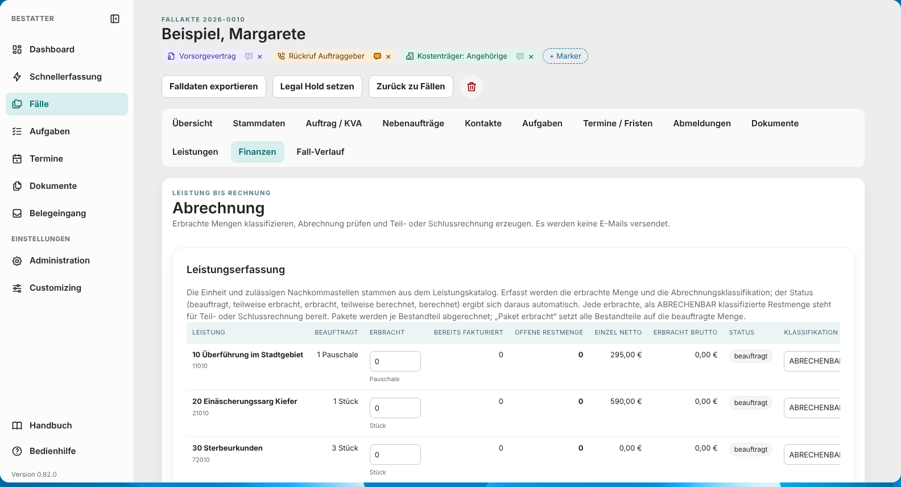
Der Reiter „Finanzen“ führt von der erbrachten Leistung bis zur bezahlten Rechnung. Er enthält die „Leistungserfassung“, die „Abrechnungssicherheitsprüfung“, die Rechnungen und – im Hauptauftrag – die Eingangsrechnungen. Die Anwendung versendet dabei keine E-Mails; den Versand einer Rechnung dokumentieren Sie selbst.
Leistungserfassung
Die Tabelle zeigt je Position die beauftragte Menge, die erbrachte Menge, die bereits fakturierte und die noch offene Restmenge.
- Menge und Klassifikation: Tragen Sie unter „Erbracht“ die tatsächlich erbrachte Menge ein und wählen Sie die „Klassifikation“ ABRECHENBAR, KULANZ, NICHT_ABRECHENBAR oder UNKLAR.
- Begründung: Bei Kulanz, nicht abrechenbar, unklar oder einer Abweichung ist eine Begründung nötig.
- Pakete: „Paket erbracht“ setzt alle Bestandteile eines Pakets auf die beauftragte Menge.
- Grenzen: Die erbrachte Menge kann nicht kleiner als die bereits fakturierte Menge sein.
Abrechnungssicherheitsprüfung
Die Prüfung zeigt vor der Rechnungsstellung das Ergebnis OK, WARNUNG oder KRITISCH, jeweils mit „Zur Leistung springen ↓“.
- Kritische Befunde, zum Beispiel: kein festgeschriebener Auftrag, fehlender Preis, Klassifikation UNKLAR, unvollständiges SEPA-Mandat, mehr fakturiert als erbracht.
- Warnungen, zum Beispiel: erbrachte und beauftragte Menge weichen ab, eine Anzahlung ist noch offen.
Betrifft ein kritischer Befund die Rechnung, kann sie nur mit einer protokollierten Begründung („Manuelle Freigabe“) erstellt werden.
Rechnung erstellen
„Teilrechnung auswählen“ oder „Schlussrechnung vorbereiten“ öffnet den Rechnungsdialog mit dem Leistungszeitraum und den abrechenbaren Mengen (Spalte „Jetzt abrechnen“). Bei einer Schlussrechnung werden alle Restmengen abgerechnet. „Teilrechnung anlegen“ beziehungsweise „Schlussrechnung anlegen“ legt die Rechnung als Entwurf an. Rechnungsempfänger ist der Rechnungsempfänger aus dem Reiter „Auftrag / KVA“, sonst der Auftraggeber.
Status einer Rechnung
| Status | Mögliche Aktionen |
|---|---|
| ENTWURF | „Zur Prüfung“, „Entwurf verwerfen“ |
| PRUEFUNG | „Verbindliches Prüfdokument erzeugen“, „Zurück zum Entwurf“, „Freigeben“, „Entwurf verwerfen“ |
| FREIGEGEBEN | „Versand dokumentieren“, „Stornorechnung“, „Gutschrift“ |
| VERSENDET | „Teilzahlung“, „Bezahlt“, „Stornorechnung“, „Gutschrift“ |
| TEILBEZAHLT | „Bezahlt“, „Stornorechnung“, „Gutschrift“ |
Details zu den Aktionen:
- „Vorschau“ zeigt jederzeit ein PDF, ohne etwas abzulegen.
- „Verbindliches Prüfdokument erzeugen“ erstellt das endgültige Rechnungs-PDF samt E-Rechnung und Zahlungs-QR-Code. Es setzt gepflegte Niederlassungs- und Bankdaten voraus.
- „Freigeben“ ist erst nach dem Prüfdokument möglich. Danach ist die Rechnung unveränderlich.
- „Entwurf verwerfen“ braucht eine Begründung. Die Rechnungsnummer bleibt als verworfen dokumentiert, die Mengen werden wieder abrechenbar.
- „Versand dokumentieren“ hält fest, dass die Rechnung außerhalb der Anwendung versandt wurde.
Stornorechnung und Gutschrift
Eine freigegebene Rechnung wird nie geändert oder gelöscht. Korrekturen laufen über eigene Belege mit eigenem Nummernkreis (Standardpräfix GS):
- Stornorechnung: hebt die ganze Rechnung auf. Die Mengen werden wieder abrechenbar.
- Gutschrift: schreibt einzelne Positionen, Mengen oder Beträge gut.
Korrekturbelege durchlaufen wie Rechnungen Entwurf, Prüfung und Freigabe; statt „Bezahlt“ heißt der Abschluss „Erstattet / verrechnet“.
E-Rechnung und Zahlungs-QR-Code
Je nach Einstellung der Niederlassung erzeugt die Anwendung zum Prüfdokument eine E-Rechnung. Bei ZUGFeRD wird sie als „factur-x.xml“ in das PDF eingebettet, bei XRechnung als eigene XML-Datei abgelegt. Bei Überweisung druckt die Anwendung zusätzlich den EPC-SEPA-Zahlcode (GiroCode) auf die Rechnung; bei SEPA-Lastschrift entfällt er.
Eingangsrechnungen und durchlaufende Posten
Rechnungen von Lieferanten, Friedhöfen oder Behörden erfassen Sie im Reiter „Finanzen“ des Hauptauftrags unter „Eingangsrechnungen und durchlaufende Posten“. Die Positionen der Eingangsrechnung werden Leistungen des Falls zugeordnet und so an die Angehörigen weiterberechnet – als durchlaufender Posten im fremden Namen (ohne Umsatzsteuer) oder als Fremdleistung im eigenen Namen.
Der Status einer Eingangsrechnung lautet Erfasst, In Prüfung, Übernommen, Freigegeben oder Abgelehnt. „Positionen übernehmen“ setzt voraus, dass die Summen übereinstimmen und alle Positionen fachlich eingeordnet sind. Positionen mit „Nicht an Kunden berechnen“ werden nicht übernommen.
16. Belegeingang und Paperless-ngx
Wozu der Belegeingang dient
Ist Paperless-ngx angebunden und auf „Beidseitiger Belegeingang“ eingestellt, meldet Paperless neu eingegangene Dokumente an die Anwendung – Rechnungen ebenso wie Sterbeurkunden, Bescheide oder Rückmeldungen von Abmeldestellen. Sie erscheinen in der Ansicht „Belegeingang“. Dort ordnen Sie jedes Dokument einer Dokumentart und einem Sterbefall zu. Die Dokumentart bestimmt, in welchem Ordner der Fallakte das Dokument landet und was danach im Fall passiert (Kapitel 19, Abschnitt Dokumentarten). Welche Dokumente überhaupt gemeldet werden, legt der Workflow in Paperless fest (empfohlen: Dokumente mit dem Schlagwort „Bestatter-Zuzuordnen“, Kapitel 24). Ohne Paperless bleibt die Ansicht leer; Dokumente laden Sie dann direkt in der Fallakte hoch (Kapitel 14), Eingangsrechnungen erfassen Sie unter „Finanzen“ (Kapitel 15).
Vorschläge für Dokumentart und Fall
Für jedes neue Dokument liest die Anwendung aus Paperless den Dokumenttyp, den erkannten Text und das benutzerdefinierte Feld „Fallnummer“ und zeigt auf der Karte einen Vorschlag:
- Dokumentart: aus dem Paperless-Dokumenttyp, wenn er einer Dokumentart zugeordnet ist („aus dem Paperless-Dokumenttyp“); sonst „Sonstiger Schriftverkehr“ („Standard – bitte prüfen“).
- Fall: in dieser Reihenfolge über das Feld „Fallnummer“ in Paperless, über eine Fallnummer im Text (zum Beispiel im Betreff einer Antwort auf ein Schreiben mit Fallnummer) oder über Nachname zusammen mit Vorname, Sterbe- oder Geburtsdatum eines offenen Falls. Passen mehrere Fälle, steht dort „mögliche Fälle“ und Sie wählen selbst.
Der Text wird dafür nur gelesen und nicht in der Anwendung gespeichert. Haben Sie in Paperless nachträglich den Dokumenttyp oder die Fallnummer gesetzt, liest „Vorschlag aktualisieren“ die Angaben neu.
Automatische Ablage: Steht die Fallnummer im Paperless-Feld und kommt die Dokumentart aus dem Paperless-Dokumenttyp, legt die Anwendung Dokumente, die nur abgelegt werden, beim Öffnen des Belegeingangs selbst ab und nennt sie oben unter „Automatisch abgelegt“. Rechnungen, Rückmeldungen von Abmeldestellen und Arten mit Anzahl (zum Beispiel Sterbeurkunden) bleiben immer zur Prüfung im Belegeingang. Die automatische Ablage lässt sich unter Einstellungen → Administration → Paperless abschalten (Kapitel 18).
Ablauf: vom Scan bis in den Fallordner
- Eingang in Paperless: Das Schriftstück kommt per Scanner, E-Mail oder Upload in Paperless an; Paperless erkennt den Text.
- Kennzeichnen in Paperless: Das Schlagwort „Bestatter-Zuzuordnen“ meldet das Dokument an die Anwendung. Setzen Sie es beim Eingang – über die E-Mail-Regel, die automatische Zuweisung oder beim Hochladen. Ein Schlagwort, das erst später von Hand gesetzt wird, braucht in Paperless zusätzlich einen gleichen Workflow mit dem Auslöser „Dokument aktualisiert“ (Kapitel 24). Hilfreich, aber nicht nötig: den passenden Dokumenttyp und das Feld „Fallnummer“ setzen – dann stimmt der Vorschlag sofort. Jedes Dokument wird nur einmal übernommen, auch wenn Paperless es mehrfach meldet. - Dokumenttyp: setzt Paperless beim Eingang meist selbst, wenn für den Typ eine Zuordnungsregel eingerichtet ist (Kapitel 24). Sonst wählen Sie ihn in Paperless von Hand oder erst im Belegeingang als Dokumentart. - Fallnummer: In Paperless das Dokument öffnen, unter Benutzerdefinierte Felder das Feld „Fallnummer“ hinzufügen (oder das schon angehängte leere Feld nutzen), die Nummer aus der Fallakte eintragen, zum Beispiel 2026-0042, und speichern. Alternativ die Fallnummer vor dem Scannen gut lesbar auf die erste Seite stempeln oder aufkleben – die Anwendung findet sie dann im erkannten Text. Antworten auf Abmeldeschreiben enthalten sie oft schon, weil die Schreiben die Fallnummer als „Unser Zeichen“ nennen. Handschriftliche Ziffern werden oft nicht sicher erkannt.
- Belegeingang öffnen: „Aktualisieren“ lädt die noch nicht zugeordneten Dokumente (Status „Nicht zugeordnet“). „In Paperless ansehen“ öffnet das Dokument in Paperless. Einen Überblick gibt auch der Assistent mit der Schnellwahl „Belegeingang“ (Kapitel 1).
- Zuordnen: „Zuordnen“ öffnet den Dialog „Dokument einem Fall zuordnen“. Prüfen bzw. wählen Sie die „Dokumentart“, finden Sie den Fall unter „Sterbefall suchen“ und wählen Sie ihn unter „Sterbefall“. Der Dialog zeigt die Ablage im Fall und je nach Dokumentart weitere Felder: - Eingangsrechnung, Gebührenbescheid: „Lieferant“, „Lieferanten-Rechnungsnummer“, Rechnungs- und Eingangsdatum, „Bruttobetrag“, „Erste Belegposition“, optional „Fällig am“, Umsatzsteuer und „Prüfnotiz“. Beim Gebührenbescheid ist die Position als durchlaufender Posten vorbelegt. - Rückmeldung Abmeldestelle: „Bestätigt die Abmeldung“ – eine versendete Abmeldung des Falls. - Sterbeurkunde: die Anzahl der Ausfertigungen (optional). - Alle Arten, die nur abgelegt werden: „Titel in der Fallakte“ (leer = Vorschlag aus Dokumentart und Paperless-Titel). - Hat die Dokumentart einen Hinweis (zum Beispiel bei der Todesbescheinigung: nur den nichtvertraulichen Teil ablegen), erscheint er im Dialog.
- Übernehmen: „Übernehmen“ (bei Rechnungen „Als Entwurf übernehmen“) lädt die Datei aus Paperless und legt sie im Ordner des gewählten Falls ab, im Unterordner der Dokumentart – standardmäßig zum Beispiel „03 Behörden“ für Urkunden, Genehmigungen und Rückmeldungen, „06 Abrechnung“ für Rechnungen und „04 Korrespondenz“ für sonstigen Schriftverkehr (Pfad Bestatter/Fälle/Jahr/Fallnummer/Unterordner; die Namen richten sich nach dem Ordnerplan, Kapitel 18). Die Datei heißt Dokumentart (Paperless Nummer) und erscheint im Reiter „Dokumente“ mit der Kategorie der Dokumentart. Danach öffnet die Anwendung den Fall: - bei Rechnungen den Reiter „Finanzen“ mit einer Eingangsrechnung im Status „Erfasst“, - bei einer Rückmeldung den Reiter „Dokumente“; die gewählte Abmeldung steht auf „bestätigt“, die Aufgabe „Rückmeldung prüfen“ ist erledigt, - bei einem unterschriebenen Auftrag den Reiter „Dokumente“, wo Sie die Unterschriften prüfen und bestätigen, - sonst den Reiter „Dokumente“.
- Weiter im Ablauf: Abläufe können auf „Dokument eingegangen“ reagieren – zum Beispiel erledigt sich der Schritt „Rückmeldung Standesamt prüfen, Sterbeurkunden abholen“, sobald eine Sterbeurkunde abgelegt ist (Kapitel 19).
Wurde dieselbe Rechnung schon erfasst (gleicher Lieferant und gleiche Rechnungsnummer oder dieselbe Datei), lehnt die Anwendung die Übernahme mit einem Hinweis ab. Ein Dokument, das nicht in eine Fallakte gehört, entfernen Sie mit „Nicht übernehmen“ aus dem Belegeingang. Das Dokument in Paperless bleibt in allen Fällen unverändert; die Anwendung setzt dort kein Schlagwort und löscht nichts. Wenn Sie in Paperless kenntlich machen möchten, dass ein Dokument erledigt ist, entfernen Sie dort das Schlagwort „Bestatter-Zuzuordnen“ oder setzen ein eigenes.
Archivkopie in Paperless
In beiden Paperless-Betriebsarten überträgt die Anwendung von Hand erfasste Eingangsrechnungen als Archivkopie nach Paperless. Die Eingangsrechnung zeigt den Übertragungsstatus; bei einem Fehler überträgt „Erneut übertragen“ den Beleg noch einmal. Belege aus dem Belegeingang werden nicht noch einmal übertragen – ihr Original liegt bereits in Paperless.
Wer Paperless nicht als Belegarchiv nutzt, schaltet die Archivkopie unter Einstellungen → Administration → Paperless ab („Von Hand erfasste Eingangsrechnungen als Archivkopie an Paperless übertragen“, standardmäßig an). Die Rechnung liegt dann nur in der Fallakte. Bereits übertragene Archivkopien bleiben in Paperless.
Wo liegen Dokumente doppelt? Die Fallakte in Nextcloud ist immer vollständig, denn Anlagen für Abmeldungen, E-Mail-Versand, Falldaten-Export und Datensicherung brauchen die Datei dort. Zusätzlich liegt in Paperless: das Original jedes Dokuments aus dem Belegeingang, die Archivkopie von Hand erfasster Eingangsrechnungen (abschaltbar) und die Kopie eines über Paperless erkannten Erfassungsbogens (auf Wunsch nach der Erkennung gelöscht, Kapitel 4). Dokumente aus dem Belegeingang und Archivkopien löscht die Anwendung in Paperless nicht; beim Löschen oder Anonymisieren eines Falls bleiben sie dort erhalten und sind in Paperless gesondert zu behandeln.
17. Fall-Verlauf, Datenschutz und Aufbewahrung
Fall-Verlauf
Der Reiter „Fall-Verlauf“ zeigt das automatisch geführte, unveränderbare Protokoll aller Bearbeitungsschritte: wer wann was geändert hat, einschließlich der geänderten Felder. Einträge lassen sich weder bearbeiten noch löschen. Wird ein Fall anonymisiert oder gelöscht, bleiben nur die Einträge selbst als Nachweis stehen (wer, wann, welche Aktion); die geänderten Inhalte wie Namen und Anschriften werden entfernt. Das Protokoll ist technisch verkettet, sodass nachträgliche Eingriffe erkennbar werden; die Systemprüfung zeigt das Ergebnis unter „Bearbeitungsnachweis“. Sensible Werte wie Bankdaten erscheinen im Protokoll als „[geschützt]“. Auch das Setzen, Ändern und Entfernen von Markern steht im Fall-Verlauf, mit Marker, Wert, Notiz und Person.
Falldaten exportieren
„Falldaten exportieren“ im Kopf der Fallakte lädt alle strukturierten Daten des Falls als Datei herunter: Stammdaten, Nebenaufträge, Aufgaben, Termine, Leistungen, Aufträge, Rechnungen, Eingangsrechnungen, Formularwerte, Marker mit Notizen und den automatischen Hinweisen und den Fall-Verlauf. Die Dateien der Fallakte selbst sind nicht enthalten; sie liegen im Fallordner in Nextcloud. Der Export wird im Protokoll vermerkt. Er dient zum Beispiel der Auskunft nach Art. 15 DSGVO.
Legal Hold (Löschsperre)
Ein Legal Hold schützt einen Fall vor Anonymisierung und Löschung durch die Aufbewahrungsrichtlinie, etwa wegen eines Rechtsstreits oder einer Prüfung. Setzen und aufheben dürfen ihn nur Bestatter-Administratoren.
„Legal Hold setzen“ verlangt:
- einen „Grund des Legal Holds“ (mindestens 5 Zeichen),
- eine „Verantwortliche Person“ aus der Bestatter-Gruppe,
- optional ein Datum „Überprüfung am (optional)“ – die Sperre endet dabei nicht automatisch.
Der Fall trägt danach die Kennzeichnung „Aufbewahrung gesperrt“. „Legal Hold aufheben“ verlangt ebenfalls eine Begründung. Beides wird unveränderlich protokolliert.
Aufbewahrung und Löschung
Die Administration legt unter Einstellungen → Administration → Systemprüfung → „Datenschutz und Betriebsverfahren“ fest, ob und nach wie vielen Jahren abgeschlossene Fälle bearbeitet werden (Standard: 10 Jahre nach Abschluss):
- Anonymisieren entfernt Namen, Stammdaten, Aufgaben, Termine (auch in den Kalendern) und die meisten Dateien des Falls. Rechnungen, Eingangsrechnungen, Aufträge und die Ordner „02 Auftrag“ und „06 Abrechnung“ bleiben erhalten; der Fall-Verlauf behält nur die Einträge ohne Inhalte. Von den Markern bleiben nur die, bei denen im Customizing „bei Anonymisierung behalten“ eingeschaltet ist (mitgeliefert nur „Kostenträger“) – ohne Notiz und ohne die Angabe, wer sie gesetzt hat; alle anderen Marker werden mit ihren Notizen entfernt. Ein anonymisierter Fall nimmt keine Marker mehr an.
- Vollständig löschen entfernt den Fall einschließlich Rechnungen, Aufträgen und Fallordner.
Die Anwendung unterstützt den operativen Ablauf. Die gesetzliche Aufbewahrung von Rechnungen und Belegen (derzeit 8 Jahre für Rechnungen und Buchungsbelege, 6 Jahre für Angebote und Aufträge, jeweils ab Jahresende) leistet die Buchhaltung, zum Beispiel DATEV. Enthält ein Fall noch Belege innerhalb dieser Fristen, zeigt die Anwendung einen Hinweis; gelöscht wird nach Bestätigung.
Die Verarbeitung selbst startet ausschließlich ein Nextcloud-Administrator per Befehl, nach Vorschau und Datensicherung (Kapitel 24), und nur bei eingeschalteter Richtlinie. Fälle mit Legal Hold werden immer übersprungen. Die Anwendung legt keine rechtsverbindliche Frist fest; die Frist legen Verantwortliche und Datenschutzbeauftragte fest.
Fall löschen
„Fall löschen“ (nur Bestatter-Administratoren) löscht einen Fall nach einer Sicherheitsabfrage vollständig: alle Falldaten, den Fallordner (am Papierkorb vorbei, nicht wiederherstellbar) sowie die Termine und Aufgaben des Falls in den Kalendern. Der Fall-Verlauf behält nur die Einträge ohne Inhalte als Nachweis.
Vor dem Löschen zeigt die Abfrage Hinweise an, zum Beispiel wenn der Fall Rechnungen, Kostenvoranschläge, Aufträge oder Eingangsrechnungen enthält, deren gesetzliche Aufbewahrungsfrist noch läuft, oder wenn Dokumente in Paperless liegen (diese werden nicht mitgelöscht). Gelöscht wird erst mit „Hinweise gelesen – endgültig löschen“. Stellen Sie vorher sicher, dass die Belege in der Buchhaltung (zum Beispiel DATEV) archiviert sind.
Solange ein Legal Hold gesetzt ist, lässt sich der Fall nicht löschen.
18. Administration
Zugang
Einstellungen → „Administration“ steht nur Bestatter-Administratoren zur Verfügung. Die Reiter lauten: „Ersteinrichtung“, „Betriebs-Cockpit“, „Leistungen“, „Niederlassungen“, „Rechnungswesen“, „Paperless“, „Kennzahlen & Auswertungen“, „Assistenz“, „Backup & Restore“, „Einrichtungspaket“ und „Systemprüfung“. Rechts neben den Reitern steht die installierte Programmversion.
Ersteinrichtung
Die „Geführte Ersteinrichtung“ bereitet eine neue Installation in drei Abschnitten vor, dazu optional die Auswahl der Marker:
- „1. Gruppen und Benutzer“: Fachbenutzer-Gruppe und Administrationsgruppen festlegen und vorhandenen Nextcloud-Benutzern die Rollen „Fachbenutzer“ oder „Administrator“ zuordnen. Die Anwendung legt keine Benutzer an. Für kleine Betriebe gibt es „Einpersonenbetrieb: Administrator zugleich als Fachbenutzer zuordnen“.
- „2. Ablagestruktur“: Arbeitsordner, Fallordner, Vorlagenordner und die Unterordner jeder Fallakte.
- „3. Erste Niederlassung und Länderprofil“: Schlüssel, Name, Land und Anschrift der ersten Niederlassung. Fehlende Standardvorlagen werden bereitgestellt; eigene Dateien werden nie überschrieben.
- „4. Marker auswählen (optional)“: Die mitgelieferten Marker erscheinen mit Symbol und Farbe; angehakte Marker werden aktiviert, „Alle auswählen“ hakt alle an. Nicht gewählte bleiben inaktiv und lassen sich später unter Customizing → Marker einschalten (Kapitel 19). Der Prüfpunkt „Marker“ meldet nur einen Hinweis, solange kein Marker aktiv ist; die Einrichtung bleibt betriebsbereit.
„Einrichtung speichern und prüfen“ zeigt, ob die Installation „Betriebsbereit“ ist. Solange eine Prüfung offen ist, sehen Administratoren oben den „Einrichtungshinweis“; die Fallarbeit bleibt trotzdem möglich.
Betriebs-Cockpit
Das „Betriebs-Cockpit“ ist eine rein lesende Übersicht über Ausnahmefälle. Die Ampel zeigt „Betrieb unauffällig“, „Hinweise vorhanden“ oder „Handlungsbedarf“. Kacheln nennen fehlgeschlagene Ablaufaktionen, offene und fehlgeschlagene Paperless-Jobs, nicht zugeordnete Dokumente, fällige Aufbewahrungsfälle, abgeschlossene Fälle mit offenen Nebenaufträgen und den Zustand des Wartungsjobs. Jede Kachel führt mit einem Knopf zur passenden Stelle. Das Cockpit ändert und löscht keine Daten.
Leistungen (Leistungskatalog)
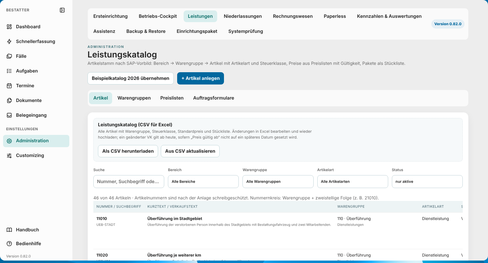
Der Reiter „Leistungen“ hat die Unterreiter „Artikel“, „Warengruppen“, „Preislisten“ und „Auftragsformulare“. Jeder Unterreiter kann seine Daten „Als CSV herunterladen“ und „Aus CSV aktualisieren“, zum Beispiel zur Pflege in einer Tabellenkalkulation. „Beispielkatalog 2026 übernehmen“ legt einen vollständigen Beispielkatalog mit Beispielpreisen an; vorhandene Artikelnummern bleiben unverändert.
Artikel: „+ Artikel anlegen“ öffnet den Artikeldialog.
- Grunddaten: Warengruppe, Artikelnummer (wird vorgeschlagen und ist nach der Anlage schreibgeschützt), Suchbegriff, Artikelart, Kurztext, Verkaufstext, interner Hinweis.
- Preis und Steuer: Steuerklasse, Mengeneinheit, „VK netto (Standardpreisliste)“ mit „Preis gültig ab“.
- Preis im Fall: „Preis im Fall erfassen (z. B. Gebühren laut Bescheid)“, optional mit Richtwert.
- Einkauf: Standardlieferant und EK-Preis.
- Foto und Status: Foto und „Aktiv und im Auftrag auswählbar“.
Steuerklasse A steht für Auslagen im Namen der Angehörigen (durchlaufender Posten ohne Umsatzsteuer). Fremdleistungen, die Sie im eigenen Namen weiterberechnen, erhalten Steuerklasse V.
Ein Artikel, der in Fällen oder Stücklisten verwendet wird, wird beim Löschen nur deaktiviert.
Pakete: Artikel der Art „Paket (Stückliste)“ erhalten eine Stückliste.
- „Preisfindung“: Festpreis am Paket oder Summe der Positionen.
- Druckart: wie das Paket auf Auftrag und Rechnung erscheint.
- Positionen: fest, optional oder Alternative. Alternativen einer „Alternativgruppe“ brauchen genau einen Standard.
Warengruppen: Schlüssel, Bezeichnung, Bereich und „Auswahlregel“ (beliebig viele, höchstens eine, genau eine Position) sowie der „Bestattungsbezug“ (alle Bestattungsarten, nur Erd- oder nur Feuerbestattung).
Preislisten: Es gilt die Standardpreisliste. Eine Preisliste je Niederlassung enthält nur abweichende Preise. Jeder Preis hat ein „gültig ab“; ein neuer Preis beendet den bisherigen am Vortag. Bereits erfasste Fallpositionen behalten ihren Preis.
Auftragsformulare
Unter „Auftragsformulare“ bilden Sie Ihr Papier-Auftragsformular nach, damit Mitarbeitende es im Fall mit „Nach Auftragsformular erfassen“ am Bildschirm ausfüllen können (Kapitel 8).
- „Muster übernehmen“ legt ein neutrales Muster an. Seine Zeilen sind Warengruppen zugeordnet; es passt damit zu jedem Leistungskatalog und dient als Ausgangspunkt für Ihr eigenes Formular.
- „Importieren …“ spielt ein Formular aus einer Datei ein, zum Beispiel aus Ihrem Einrichtungspaket oder aus einer Testinstallation. Es entsteht immer ein neues Formular; vorhandene bleiben unverändert. Zeilen, deren Artikel oder Warengruppe in Ihrem Leistungskatalog fehlt, nennt ein Hinweis – sie werden im Fall als Freitext übernommen, bis Sie die Zuordnung anpassen.
- „Exportieren“ speichert ein Formular als Datei.
Seit 0.75.2 legt die App kein Formular mehr automatisch an. Ein bereits vorhandenes Formular bleibt bei der Aktualisierung erhalten.
Niederlassungen und Länderprofile
Der Reiter „Niederlassungen“ zeigt oben die „Länderprofile“ (Deutschland, Österreich) mit den zulässigen Mehrwertsteuersätzen, dem Standard-Rechnungsprofil und dem Standard-Zahlungs-QR. Darunter pflegen Sie jede Niederlassung:
- Grunddaten: Niederlassungsschlüssel (nur Buchstaben, Ziffern, _ und -), Name, Länderprofil, bei Österreich das Bundesland, Anschrift, Telefon und E-Mail.
- „Bank- und Unternehmensdaten“: Kontoinhaber, Bank, IBAN, BIC, Zahlungsziel, Gläubiger-ID, USt-IdNr., Steuernummer, Registergericht und -nummer, Geschäftsführung, E-Rechnungs-Adresse. Die Bankdaten speichern Sie mit „Bank- und Unternehmensdaten speichern“ separat.
- Mitarbeitende: „Mitarbeiter aus der Gruppe Bestatter“ ordnet Personen der Niederlassung zu.
- „Logo“ (ab 0.75.3): Mit „Logo hochladen“ hinterlegen Sie das Logo der Niederlassung (PNG, JPEG, GIF oder WebP bis 2 MB; SVG vorher als PNG speichern). Es erscheint in allen Dokumentvorlagen an der Stelle des Logo-Platzhalters (Kapitel 20), bei Fällen dieser Niederlassung. „Logo ersetzen“ und „Logo entfernen“ ändern es; ohne Logo bleibt die Stelle im Dokument leer. Das Logo kann erst nach dem ersten Speichern der Niederlassung hinterlegt werden.
Ohne vollständige Anschrift und Bankdaten kann kein verbindliches Rechnungsdokument erzeugt werden.
Rechnungswesen
Im Reiter „Rechnungswesen“ legen Sie die Rechnungsnummern und die E-Rechnung fest:
- Präfixe: „Rechnungspräfix“ (zum Beispiel RE) und „Präfix Storno und Gutschrift“ (Standard GS). Ein gleiches Präfix bedeutet einen gemeinsamen Nummernkreis.
- „Aufbau der Rechnungsnummer“ mit den Bausteinen {PREFIX}, {YYYY}, {YY}, {SEQ}, {CASE} und {BRANCH}. {SEQ} ist Pflicht; die „Aktuelle Vorschau“ zeigt das Ergebnis.
- Nummernkreis: „Länge der laufenden Nummer“ und „Zählweise“ (jährlich über alle Niederlassungen, jährlich je Niederlassung oder fortlaufend).
- E-Rechnung: „ZUGFeRD 2.5.2 / EN16931“, „XRechnung 3.0.x als CII-XML ausgeben“ und „Normative Prüfung vor Ausgabe zwingend verlangen“ (setzt den Mustang-Validator voraus, Kapitel 24).
- Zahlungs-QR: „EPC-SEPA-Zahlcode“.
Paperless
Im Reiter „Paperless“ richten Sie die optionale Anbindung an Paperless-ngx ein:
- „Betriebsart“: „Deaktiviert“, „Nur Kopie an Paperless“ oder „Beidseitiger Belegeingang“.
- Verbindung: Paperless-Basisadresse und API-Token.
- Zuordnung in Paperless: Dokumenttyp- und Tag-IDs für die Archivkopien von Eingangsrechnungen und für Auftragserfassungsbögen. Welche Paperless-Dokumenttypen eingehende Dokumente welcher Dokumentart zuordnen, legen Sie unter Customizing → „Dokumentarten“ fest (Kapitel 19).
- „Paperless-Feld für die Fallnummer“: Name des benutzerdefinierten Felds in Paperless, aus dem der Belegeingang die Fallnummer liest (Standard „Fallnummer“; leer = nicht verwenden).
- Automatische Ablage: Ist „Automatisch ablegen, wenn Fallnummer (aus diesem Feld) und Dokumentart (aus dem Paperless-Dokumenttyp) eindeutig sind“ eingeschaltet, legt der Belegeingang Dokumente, die nur abgelegt werden, beim Öffnen selbst im Fall ab (Kapitel 16). Rechnungen und Rückmeldungen bleiben immer zur Prüfung.
- „Von Hand erfasste Eingangsrechnungen als Archivkopie an Paperless übertragen“ (standardmäßig an): Aus bedeutet, die Rechnung liegt nur in der Fallakte (Kapitel 16, Abschnitt Archivkopie).
- „Erfassungsbogen in Paperless nach erfolgreicher Texterkennung löschen“ (standardmäßig aus): Ein, und die Paperless-Kopie eines Erfassungsbogens wird nach dem Lesen des Textes gelöscht (Paperless-Papierkorb); der Bogen bleibt in Nextcloud (Kapitel 4). Der Paperless-Benutzer braucht dann das Recht zum Löschen. Die Systemprüfung nennt beide Einstellungen.
- Webhook-Geheimnis: Es erscheint im Vollbetrieb einmalig; der Kasten darunter zeigt Webhook-Adresse und Vorlage für den Paperless-Workflow.
„Verbindung testen“ prüft die Einstellungen, „Einstellungen speichern“ übernimmt sie. Die Einrichtung in Paperless beschreibt Kapitel 24.
Kennzahlen & Auswertungen
„Kennzahlen & Auswertungen“ zeigt für einen Zeitraum und eine Niederlassung:
- „Übersicht“: offene Fälle, Aufgaben, Termine, Rechnungsvolumen.
- „Mitarbeiter & Zeit“: Plan- und Istzeit je Person, ohne Auslastungsquote.
- „Fälle & Leistungen“: Leistungserbringung und Fakturierung.
- „Finanzen“: Rechnungsvolumen und durchschnittliche Rechnung.
- „Kennzahlenbericht“ mit Angaben zur Datenqualität.
- „CSV-Exporte“.
Bankdaten, interne Notizen, Kontaktdetails und Gesundheitsangaben sind in den Exporten nicht enthalten. Jeder Export wird protokolliert.
Assistenz
Unter „Assistenz“ („Schnellerfassung und KI-Assistenz“) schalten Sie die geführte Schnellerfassung, die Spracheingabe, den Bestatter-Assistenten und die kontrollierte Internetrecherche für öffentliche Organisationen ein oder aus. Die Internetrecherche überträgt nur Organisation und Ort an OpenStreetMap.
Außerdem geben Sie hier den in Nextcloud eingerichteten Spracherkennungs- und Texterkennungsanbieter ausdrücklich für Falldaten frei. Ohne diese Freigabe werden keine Falldaten an einen Anbieter übergeben. Audioaufnahmen werden immer nach der Transkription gelöscht. Darunter zeigt die Anwendung, ob in Nextcloud ein Speech-to-Text- und ein Text-/LLM-Anbieter verfügbar sind.
Backup & Restore
„Schnellen App-Snapshot erstellen“ sichert Datenbanktabellen und Einstellungen der Anwendung als Datei. „Vollständiges Sicherungspaket erstellen“ sichert zusätzlich alle Fallakten, Vorlagen und Artikelbilder mit Prüfsummen. Die Tabelle zeigt jede Sicherung mit Integrität („Prüfsumme gültig“, „Unvollständig“, „Ungültig“) und den Aktionen „Prüfen“, „Speichern unter …“ und „Löschen“. Das letzte gültige Sicherungspaket kann nicht gelöscht werden; die neuesten gültigen Pakete sind als geschützt markiert.
Unter „Automatische Sicherung“ stellen Sie einen Zeitplan ein: „Rhythmus“ (Täglich, Wöchentlich), „Uhrzeit“, „Wochentag“, „Art der Sicherung“ und ob danach abgelaufene Sicherungen gelöscht werden. Darunter stehen die nächste und die letzte automatische Sicherung mit Ergebnis.
Unter „Serverablage und Aufbewahrung“ legen Sie fest, wie lange Snapshots (Standard 30 Tage) und Pakete (Standard 90 Tage) aufbewahrt werden und wie viele der neuesten gültigen Pakete immer erhalten bleiben („Mindestens aufbewahren“, Standard 3); „Fristabgelaufene Sicherungen löschen“ räumt auf.
Die Wiederherstellung erfolgt nicht in der Oberfläche, sondern per Befehl und nur in eine leere Installation. Was gesichert werden muss, wie Sie Sicherungen nach Zeitplan anlegen und wie Sie in verschiedenen Situationen wiederherstellen, beschreibt Kapitel 22.
Wichtig: Die Sicherungen der Anwendung ersetzen nicht die Sicherung der Nextcloud selbst (Datenbank, Konfiguration, Datenverzeichnis). Sicherungen können Zugangsdaten für Integrationen enthalten und sind vertraulich zu behandeln.
Einrichtungspaket
Im Reiter „Einrichtungspaket“ übertragen Sie die kundenspezifische Einrichtung als eine ZIP-Datei – etwa von einer Test- in die Produktivinstallation oder als Vorlage für einen ähnlichen Betrieb. Ein Paket kann Warengruppen, Leistungskatalog, Preislisten, Dokumentvorlagen, Auftragsformulare, Marker, Ablaufvorlagen und die Logos der Niederlassungen enthalten. Falldaten, Bankdaten und Zugangsdaten sind nie enthalten; Niederlassungen legen Sie in der Zielinstallation selbst an.
Erstellen: Unter „Einrichtungspaket erstellen“ tragen Sie bei „Kunde / Bezeichnung“ einen Namen ein, wählen die „Inhalte“ und klicken „Einrichtungspaket herunterladen“.
Einspielen:
- „Paket auswählen …“ liest die Datei und zeigt eine Vorschau. Sie verändert noch nichts.
- Jede Zeile nennt den Stand („neu“ oder „vorhanden“), Hinweise und unter „Aktion“ einen Vorschlag: - Katalog und Preise werden aktualisiert, ebenso die Marker (Name, Farbe, Symbol, Werte und Schalter „aktiv“; der technische Schlüssel ordnet sie zu). - Vorhandene Auftragsformulare, Ablaufvorlagen und Dokumentvorlagen werden als inaktive Kopie angelegt. - Unveränderte Inhalte werden übersprungen.
- Soll Vorhandenes überschrieben werden, wählen Sie in der Zeile „Ersetzen“.
- „Einspielen“ legt zuerst automatisch eine Sicherung der App-Daten an und spielt dann in der Reihenfolge Katalog → Preise → Vorlagen → Formulare → Marker → Abläufe → Logos ein. So stehen Marker bereit, bevor Ablaufvorlagen eingespielt werden, die sich auf sie beziehen.
- Das Ergebnis je Zeile erscheint unter der Tabelle.
Hinweis: Rechnung, Kostenvoranschlag/Bestattungsauftrag und Storno verwendet die App fest unter ihrem Schlüssel. Ein neues Layout dieser Vorlagen wirkt nur mit „Ersetzen“. Die bisherige Datei bleibt als datierte Kopie im Vorlagenordner.
Kopien prüfen und aktivieren Sie anschließend in Customizing bzw. unter „Auftragsformulare“. Dasselbe geht per Kommandozeile mit occ bestatter:setup-package (Kapitel 24).
Systemprüfung
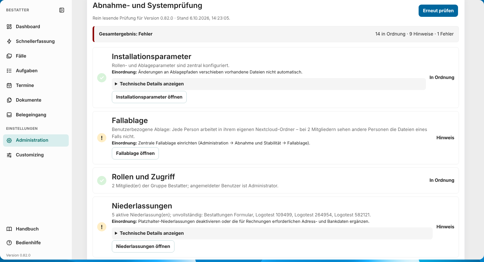
Der Reiter „Systemprüfung“ („Abnahme und Stabilität“) enthält die Einrichtung der Fallablage, die Installationsparameter, den Ordnerplan der Fallakte, die Aufbewahrungsrichtlinie und die eigentliche Systemprüfung.
Paperless-Belegeingang (Einrichtung): Im Modus „Beidseitiger Belegeingang“ prüft die Systemprüfung zusätzlich, ob das Webhook-Geheimnis gesetzt ist, ob Paperless erreichbar ist, ob das Feld für die Fallnummer (Einstellung „Paperless-Feld für die Fallnummer“) in Paperless existiert, welche aktiven Dokumentarten noch keinen Paperless-Dokumenttyp haben, ob die zugeordneten Dokumenttypen in Paperless noch vorhanden sind und wann Paperless zuletzt ein Dokument gemeldet hat. „Dokumentarten öffnen“ führt zu Customizing → „Dokumentarten“. Dieselbe Prüfung zeigt der Assistent auf die Frage „Ist Paperless richtig eingerichtet?“ und occ bestatter:paperless-acceptance-check im Abschnitt inboxSetup (Kapitel 24).
Installationsparameter: Mitgliedergruppe, Administrationsgruppen, Arbeitsordner, Fallaktenordner, Vorlagenordner, temporärer Assistenzordner und Artikelbilderordner. Unter „Rollen für Abläufe (Nextcloud-Gruppen)“ ordnen Sie den Rollen Bestattung, Büro, Fahrer und Buchhaltung je eine Nextcloud-Gruppe zu. Bleibt ein Feld leer, gehen Aufgaben dieser Rolle an die Fallverantwortung. Eingetragen wird die Gruppen-ID: Wird eine Gruppe in der Nextcloud-Benutzerverwaltung umbenannt, ändert sich nur ihr Anzeigename, die ID bleibt die alte. Die Systemprüfung (Rollengruppen für Abläufe) und die Prüfhinweise der Abläufe nennen dann die passende Gruppen-ID. Ein geänderter Ordnername verschiebt keine vorhandenen Ordner.
Datenschutz und Betriebsverfahren: „Aufbewahrungsprüfung aktivieren“, „Regelfrist nach Abschluss“ (1 bis 30 Jahre, Standard 10) und „Aktion nach Fristablauf“ (Anonymisieren oder vollständig löschen). Bei „Vollständig löschen“ erscheinen unter dem Formular Hinweise, dass Rechnungen und Belege mitgelöscht werden und in der Buchhaltung (z. B. DATEV) archiviert sein müssen, sowie wenn die Frist kürzer als die gesetzliche Aufbewahrung ist. Die Kacheln zeigen fällige Fälle und den Zustand der Protokollverkettung. Die Verarbeitung selbst startet ein Nextcloud-Administrator per Befehl (Kapitel 17 und 24).
19. Customizing
Zugang und Grundregeln
Einstellungen → „Customizing“ steht nur Bestatter-Administratoren zur Verfügung. Die Reiter lauten: „Abläufe“, „Marker“, „Wertelisten“, „Variantenregeln“, „Zuschlagsstaffeln“, „Terminplanung“, „Dokumentvorlagen“ und „Abmeldungen“.
Abläufe
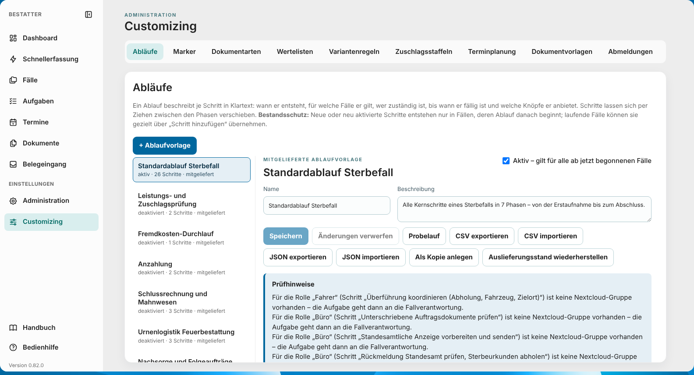
Eine Ablaufvorlage legt fest, welche Schritte in einem Fall entstehen, wann sie entstehen, wer zuständig ist und wann sie sich selbst erledigen. Mitgeliefert werden der „Standardablauf Sterbefall“ (aktiv) und mehrere Zusatzabläufe, die deaktiviert ausgeliefert werden:
- Leistungs- und Zuschlagsprüfung
- Fremdkosten-Durchlauf
- Anzahlung
- Schlussrechnung und Mahnwesen
- Urnenlogistik Feuerbestattung
- Nachsorge und Folgeaufträge
- Bewertung und Empfehlung
- Beisetzung vorbereiten
- Nachfassen und Terminänderungen
Einen Zusatzablauf nehmen Sie mit „Aktiv – gilt für alle ab jetzt begonnenen Fälle“ und „Speichern“ in Betrieb.
Der Editor zeigt die Schritte als Karten auf einem Board mit den sieben Phasen; Karten lassen sich zwischen Phasen ziehen. Die Werkzeugleiste bietet:
- „Speichern“ und „Änderungen verwerfen“,
- „Probelauf“,
- „CSV exportieren“ und „CSV importieren“,
- „JSON exportieren“ und „JSON importieren“ (ab 0.75.3): überträgt die Vorlage vollständig, einschließlich Auslösern und Knöpfen – für Einrichtungspakete und den Umzug in eine andere Installation. Der Import ersetzt die Schrittliste der geöffneten Vorlage und nennt fehlende Dokumentvorlagen oder Terminarten,
- „Als Kopie anlegen“,
- für mitgelieferte Vorlagen „Auslieferungsstand wiederherstellen“.
Der Kasten „Prüfhinweise“ weist auf Unstimmigkeiten hin, etwa einen Knopf ohne Vorlage oder einen Pflichtschritt mit spätem Auslöser. Fehlt die Nextcloud-Gruppe einer Rolle, steht dort je Rolle ein Hinweis mit den betroffenen Schritten, dem eingetragenen Gruppennamen und – bei einer umbenannten Gruppe – der Gruppen-ID, die Sie unter Administration → Installationsparameter eintragen.
Der Schrittdialog fragt der Reihe nach:
- „Was ist zu tun?“: Bezeichnung, Phase, Beschreibung.
- „Für welche Fälle?“: Bestattungsart, Trauerfeier, Rente, Anzahlung und „Marker“ (optional „mit Wert“): Der Schritt entsteht dann nur in Fällen mit diesem Marker.
- „Wann entsteht der Schritt?“: der Auslöser „Startet, wenn“, zum Beispiel Fall angelegt, Auftrag erteilt, Termin bestätigt, Dokument erzeugt, „Dokument eingegangen“ (mit Dokumentart, zum Beispiel Sterbeurkunde), Abmeldung versendet, anderer Schritt erledigt, Datum erreicht, Marker gesetzt, Marker entfernt oder nur von Hand.
- „Wer und bis wann?“: Rolle, Frist in Tagen und Bezugsdatum, Priorität, „Pflichtschritt (Fallabschluss erst danach)“.
- „Erledigt sich selbst, wenn …“: die Bedingung für das automatische Abhaken, auch „Marker gesetzt“ (zum Beispiel mit einem anderen Wert), „Marker entfernt“ oder „Dokument eingegangen“ (leer = Dokumentart des Auslösers).
- „Knöpfe im Schritt“: Aktionen wie Dokument erzeugen, Termin anlegen, Abmeldungen anlegen, E-Mail-Entwurf, Folgeaufgabe, Fallstatus setzen oder „Marker setzen/entfernen“.
Die Satzvorschau oben im Dialog beschreibt den Schritt in Klartext. „Übernehmen“ übernimmt den Schritt in den Entwurf; wirksam wird er erst mit „Speichern“.
Probelauf: Der Probelauf spielt einen erfundenen Fall durch (Bestattungsart, Trauerfeier, Rente, Anzahlung, Eingangsrechnung, Termine, „Marker im Beispielfall“) und zeigt, an welchem Tag welcher Schritt entsteht und fällig wird – und welche Schritte aus welchem Grund nicht entstehen.
Bestandsschutz: Änderungen an einer Vorlage gelten für Fälle, die danach beginnen. Laufende Fälle übernehmen neue Schritte bei Bedarf über „Schritt hinzufügen“ (Kapitel 11).
Marker
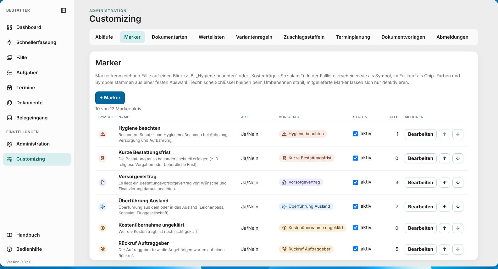
Unter „Marker“ legen Sie fest, mit welchen Markern Mitarbeitende ihre Fälle kennzeichnen können (Kapitel 5, Marker und Hinweise). Die Tabelle zeigt je Marker „Symbol“, „Name“, „Art“, „Vorschau“, den Schalter „aktiv“ und unter „Fälle“, in wie vielen Fällen er gesetzt ist. Mit ↑ und ↓ ändern Sie die Reihenfolge; in dieser Reihenfolge erscheinen die Marker im Fallkopf und in der Auswahl.
Mitgeliefert werden zehn Marker, die bei einer neuen Installation zunächst inaktiv sind: „Hygiene beachten“, „Kurze Bestattungsfrist“, „Vorsorgevertrag“, „Überführung Ausland“, „Kostenübernahme ungeklärt“, „Rückruf Auftraggeber“, „Keine Auskunft an Dritte“, „Klärung offen“, „Folgeauftrag möglich“ und der Listen-Marker „Kostenträger“. Sie wählen sie bei der Ersteinrichtung aus (Kapitel 18) oder hier mit dem Schalter „aktiv“ bzw. „Alle mitgelieferten aktivieren“. Mitgelieferte Marker können Sie umbenennen, umfärben und deaktivieren, aber nicht löschen.
Eigener Marker: „+ Marker“ öffnet den Dialog. Sie wählen
- „Name“ und „Art“ („Ja/Nein“ oder „Liste mit Werten“; die Art ist nach dem Anlegen fest),
- eine „Beschreibung (erscheint als Hinweis am Marker)“,
- eine „Farbe“ aus der festen Palette von acht gedeckten Farben (Schiefer, Salbei, Petrol, Taubenblau, Ocker, Rost, Pflaume, Malve),
- ein „Symbol“ aus 48 vorbereiteten Symbolen in sechs Gruppen (Achtung, Kommunikation, Verwaltung, Logistik, Abschied, Status); das Suchfeld findet sie auch über deutsche Begriffe wie Ausland oder Geld,
- bei Listen die „Auswahlwerte“ mit „+ Wert“,
- unter „Notiz zum gesetzten Marker“, ob eine Notiz möglich („Notiz möglich“, Standard), vorgeschrieben („Notiz erforderlich“) oder nicht vorgesehen ist („keine Notiz“), sowie einen „Platzhaltertext im Notizfeld“, der beim Schreiben als Hilfe erscheint (zum Beispiel „Wer, bis wann, Telefonnummer“).
Die „Vorschau“ zeigt Symbol und Chip so, wie sie in Fallliste und Fallkopf erscheinen. Der technische Schlüssel entsteht aus dem Namen und bleibt danach fest; er wird in Abläufen und im Platzhalter {{marker.SCHLÜSSEL}} verwendet (Kapitel 20). Ein bereits verwendeter Auswahlwert wird beim Entfernen nur deaktiviert, damit Fälle ihren Klartext behalten. Ein eigener Marker lässt sich nur löschen, solange er in keinem Fall gesetzt ist; sonst deaktivieren Sie ihn.
„bei Anonymisierung behalten“ ist nur für statistische Angaben ohne Personenbezug gedacht, etwa den Kostenträger: Solche Marker bleiben nach der Anonymisierung eines Falls erhalten, alle anderen werden entfernt (Kapitel 17). Notizen werden beim Anonymisieren immer gelöscht, auch bei behaltenen Markern.
Die mitgelieferten Marker bringen einen Platzhaltertext für die Notiz mit; „Klärung offen“ verlangt eine Notiz. Ändern Sie eine Notizart nachträglich auf „Notiz erforderlich“, behalten bereits gesetzte Marker ohne Notiz ihren Stand und zeigen am Chip ein Ausrufezeichen; die Notiz wird erst beim nächsten Ändern verlangt. Ein Knopf „Marker setzen/entfernen“ im Ablauf fragt eine Pflichtnotiz vor dem Setzen ab.
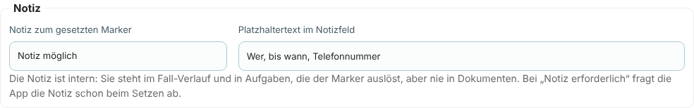
Empfohlen sind höchstens zwölf aktive Marker, damit die Symbole in der Fallliste unterscheidbar bleiben; bei mehr erscheint ein Hinweis. Unter „Automatische Hinweise“ stehen die drei Hinweise, die die App selbst berechnet; sie lassen sich hier nicht ändern.
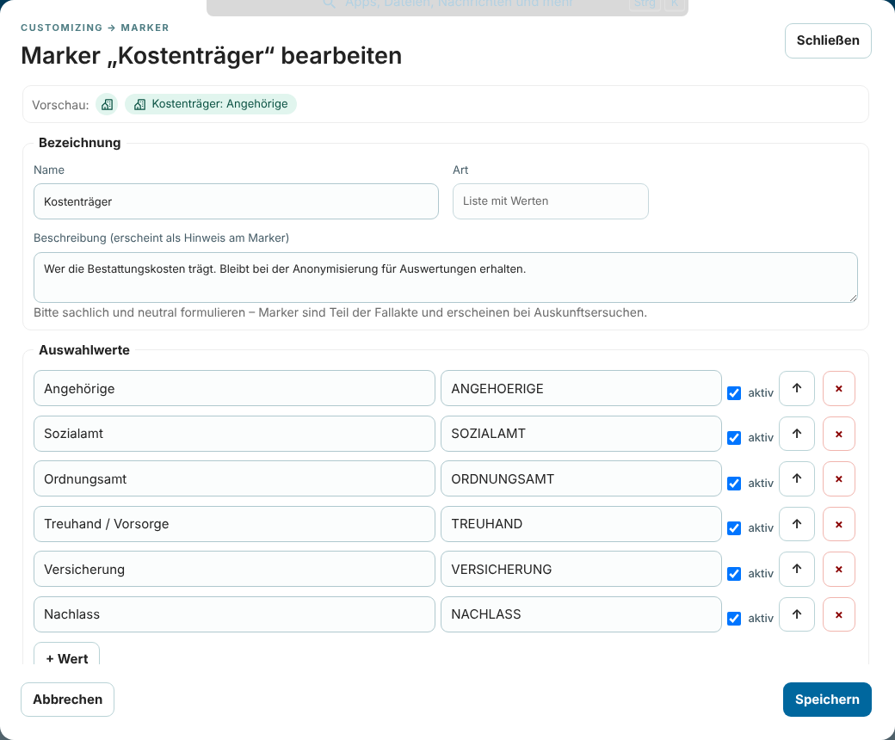
Dokumentarten
Unter „Dokumentarten“ legen Bestatter-Administratoren fest, welche Arten eingehender Schriftstücke die Anwendung kennt. Eine Dokumentart bestimmt:
- „Paperless-Dokumenttyp“: Dokumente dieses Typs schlägt der Belegeingang als diese Art vor (Kapitel 16). Ist Paperless erreichbar, wählen Sie den Typ aus einer Liste, sonst tragen Sie die Nummer ein. Jeder Paperless-Dokumenttyp gehört zu höchstens einer aktiven Art.
- „Ablage im Fall“: der Unterordner der Fallakte laut Ordnerplan. Wird ein Unterordner umbenannt, folgt die Ablage automatisch.
- „Kategorie“: die Kategorie in der Dokumentliste (zum Beispiel „Urkunde“, „Nachweis“, „Rechnung“).
- „Wirkung im Fall“: „Nur ablegen“; „Eingangsrechnung anlegen“ (mit „Einordnung der Rechnungsposition“, zum Beispiel durchlaufender Posten beim Gebührenbescheid); „Abmeldung bestätigen“ (bei der Zuordnung wird eine versendete Abmeldung bestätigt); „Unterschriebener Vertrag (Prüfung)“ (der Scan wartet auf die Unterschriftenprüfung).
- „Anzahl abfragen“ (nur bei „Nur ablegen“): zum Beispiel „Ausfertigungen“ bei der Sterbeurkunde.
- „Hinweis bei der Zuordnung“: erscheint im Zuordnungsdialog, zum Beispiel bei der Todesbescheinigung „Nur den nichtvertraulichen Teil ablegen“.
Mitgeliefert und eingeschaltet sind Eingangsrechnung, Gebührenbescheid, Sterbeurkunde, Behördliche Genehmigung, Todesbescheinigung, Rückmeldung Abmeldestelle und Sonstiger Schriftverkehr. Friedhofsbescheid, Krematoriumsnachweis, Unterschriebener Auftrag, Versicherung / Abtretung und Trauerdruck / Anzeige sind mitgeliefert, aber ausgeschaltet; „aktiv“ schaltet sie ein. Mitgelieferte Arten lassen sich bearbeiten und deaktivieren, aber nicht löschen; „+ Dokumentart“ legt eine eigene an. Die Dokumentarten gelten für den Belegeingang, für „Dokumente hochladen“ (Kapitel 14) und für den Ablaufauslöser „Dokument eingegangen“; sie wandern im Einrichtungspaket mit (Kapitel 18).
Wertelisten
„Wertelisten“ enthalten die Auswahllisten der Anwendung, zum Beispiel Familienstand, Religion, Beziehung zum Verstorbenen, Mengeneinheiten oder „Empfängertyp (Abmeldungen)“. Jede Zeile hat einen technischen Wert (nach der Anlage schreibgeschützt), eine sprechende Bezeichnung, eine Reihenfolge (Griff „⋮⋮“ ziehen) und einen Status. Systemwerte wie die Positionstypen EL, FK, DP und die Mengeneinheiten sind nicht löschbar.
Die Liste der Bestattungsvarianten ist ein Baum: Jede Variante hat eine „Übergeordnete Variante“ und eine „Zuordnung“ (Feuer-/Urnenbestattung, Erdbestattung oder fachlich offen).
Variantenregeln
„Variantenregeln“ verbinden Bestattungsvarianten mit dem Leistungskatalog. Die Regelarten lauten:
- „Gruppe erforderlich“ – aus der Warengruppe muss etwas gewählt werden,
- „Gruppe mit Standardartikel“ – wie oben, mit vorbelegtem Standardartikel,
- „Artikel vorschlagen“,
- „Gruppe ausgeschlossen“ – die Warengruppe passt nicht zur Variante.
Diese Regeln erzeugen die Hinweise „Bestattungsvariante – offene Entscheidungen“ in der Fallakte (Kapitel 5). Für eine fachlich offene Variante ist keine aktive Regel erlaubt.
Zuschlagsstaffeln
„Zuschlagsstaffeln“ legen Stufen für Abholzeit, Größe, Gewicht und weitere Merkmale fest, jeweils mit Von-/Bis-Wert und einer verknüpften Katalogleistung. Eine Staffel kann erst nach Verknüpfung einer Katalogleistung aktiviert werden. Im Fall merken die Mitarbeitenden die Staffel in den Stammdaten vor (Kapitel 6).
Terminplanung
Unter „Terminplanung“ pflegen Sie:
- „Terminarten“: Bezeichnung, Einordnung (externer Fixtermin oder interne Tätigkeit), Dauer, Puffer davor und danach sowie unter „Pflichtbedarf festlegen“ den Mindestbedarf an Mitarbeitenden, Fahrzeugen, Räumen, Kapellen und Ausstattung und die standardmäßig vorbelegten Ressourcen.
- „Ressourcen“: Fahrzeuge, Räume, Kapellen, Ausstattung und Mitarbeitende, jeweils mit „Konflikt prüfen“.
Nicht mehr benötigte Terminarten und Ressourcen werden deaktiviert, nicht gelöscht.
Dokumentvorlagen
Dokumentvorlagen sind DOCX-Dateien im Vorlagenordner mit Platzhaltern in doppelten geschweiften Klammern, zum Beispiel {{case.number}}.
- „Feldkatalog als CSV“ lädt die Liste aller verfügbaren Platzhalter mit Bedeutung herunter.
- „Fehlende Standardvorlagen ergänzen“ stellt fehlende mitgelieferte Vorlagen bereit, ohne eigene Dateien zu überschreiben.
- „+ Dokumentenvorlage“ legt eine neue Vorlage an.
Jede Vorlage hat einen Vorlagenschlüssel, eine Bezeichnung, eine Kategorie, die DOCX-Datei, den Ziel-Unterordner der Fallakte, technische Pflichtfelder und die Schalter „PDF-Ausgabe“ und „Aktiv“. Eine Datei mit unbekannten oder beschädigten Platzhaltern wird abgelehnt.
„Vorschau“ zeigt die Vorlage als PDF mit erfundenen Beispieldaten, ohne etwas abzulegen. „Duplizieren“ legt eine inaktive Kopie an.
Wie Sie mitgelieferte Vorlagen einspielen oder erneuern, eigene Vorlagen in Word entwickeln und welche Platzhalter zur Verfügung stehen, beschreibt Kapitel 20 ausführlich.
Abmeldungen
Unter „Abmeldungen“ pflegen Sie die Abmeldevorgänge:
- Vorgangsschlüssel, Bezeichnung und Empfängertyp,
- die „Nextcloud-Kontaktgruppe“, aus der die Empfänger stammen,
- die zulässigen Übertragungswege,
- Formulartyp, Wiedervorlage in Tagen und optional eine Dokumentvorlage,
- „Betreff-Vorlage“ und „Text-Vorlage“ mit Platzhaltern.
Die Vorschau füllt die Platzhalter mit Musterdaten. Ein automatischer Versand findet nicht statt; die Mitarbeitenden prüfen jede Abmeldung im Fall (Kapitel 13).
20. Dokumentvorlagen und Platzhalter
Dokumente wie Bestattungsauftrag, Rechnung oder Sterbefallanzeige entstehen aus Word-Vorlagen (DOCX). Eine Vorlage ist ein normales Word-Dokument mit Platzhaltern in doppelten geschweiften Klammern, zum Beispiel {{case.last_name}}. Beim Erzeugen ersetzt die App jeden Platzhalter durch die Daten des Falls und legt das Ergebnis in der Fallakte ab (Kapitel 14).
Wo Vorlagen liegen und wie sie verwaltet werden
Die Vorlagendateien liegen in Nextcloud im Vorlagenordner der Ablage, standardmäßig Bestatter/Vorlagen. Welche Datei als welche Vorlage verwendet wird, legen Bestatter-Administratoren unter Einstellungen → „Customizing“ → „Dokumentvorlagen“ fest.
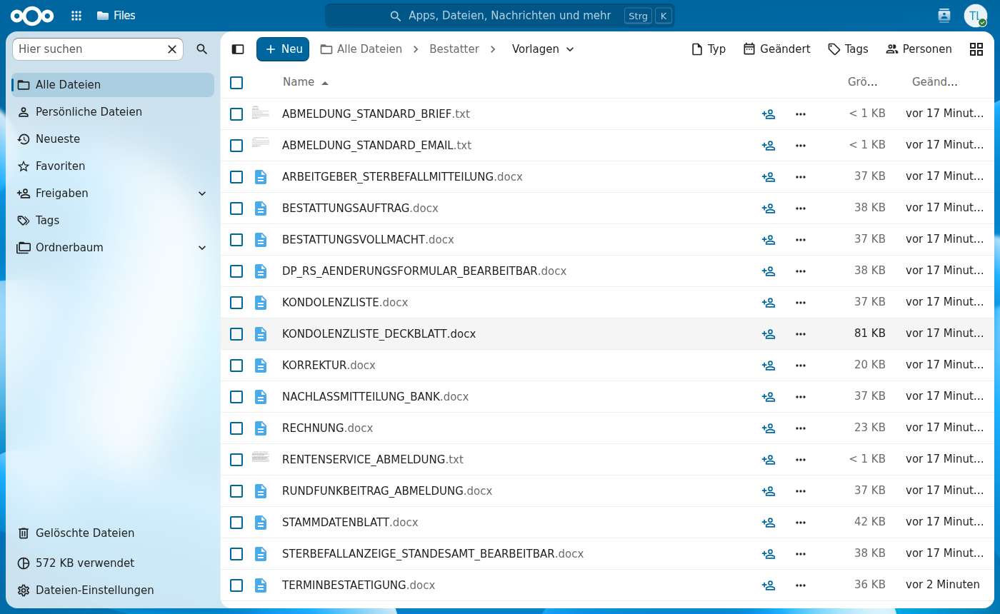
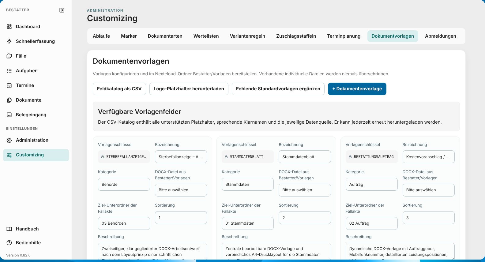
- „Feldkatalog als CSV“ lädt alle verfügbaren Platzhalter mit Bedeutung und Datenquelle als Tabelle herunter (auch für Excel).
- „Fehlende Standardvorlagen ergänzen“ kopiert mitgelieferte Vorlagen, die im Vorlagenordner fehlen. Vorhandene Dateien werden nie überschrieben.
- „+ Dokumentenvorlage“ legt eine neue Vorlage an.
Jede Vorlage hat eine Karte mit diesen Angaben:
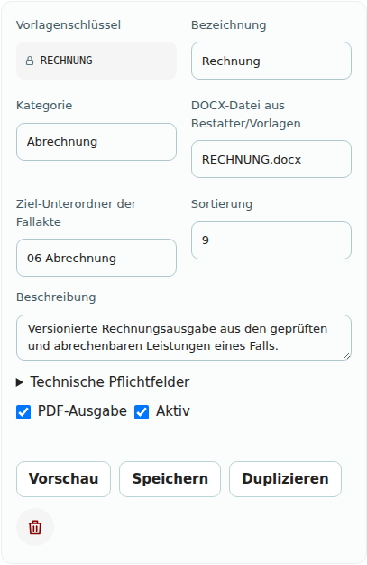
| Feld | Bedeutung |
|---|---|
| „Vorlagenschlüssel“ | technischer Name in Großbuchstaben, zum Beispiel TERMINBESTAETIGUNG; nach dem Anlegen schreibgeschützt |
| „Bezeichnung“ | Name, der im Fall auf der Vorlagenkarte und im Dateinamen erscheint |
| „Kategorie“ | Gruppierung, zum Beispiel Auftrag, Abrechnung, Trauerfeier |
| „DOCX-Datei aus Bestatter/Vorlagen“ | die Datei im Vorlagenordner |
| „Ziel-Unterordner der Fallakte“ | wohin erzeugte Dokumente abgelegt werden, zum Beispiel 04 Korrespondenz |
| „Sortierung“ | Reihenfolge der Karten im Fall |
| „Beschreibung“ | kurzer Hinweis für die Mitarbeitenden |
| „Technische Pflichtfelder“ | Angaben, die vorhanden sein müssen, bevor ein finales Dokument entsteht (siehe unten) |
| „PDF-Ausgabe“ | zusätzlich ein PDF erzeugen (braucht einen Office-Server in Nextcloud) |
| „Aktiv“ | nur aktive Vorlagen erscheinen im Fall |
„Vorschau“ zeigt die Vorlage als PDF mit erfundenen Beispieldaten, ohne etwas abzulegen. „Speichern“ prüft die Datei und übernimmt die Einstellungen. „Duplizieren“ legt eine inaktive Kopie an, die Sie als Ausgangspunkt für eine Variante nutzen können.
Mitgelieferte Vorlagen
Die App bringt folgende Vorlagen mit. Die Ersteinrichtung kopiert sie in den Vorlagenordner.
| Bezeichnung | Vorlagenschlüssel | Datei | Ziel-Unterordner |
|---|---|---|---|
| Sterbefallanzeige – Arbeitsentwurf für das Standesamt | STERBEFALLANZEIGE_STANDESAMT | STERBEFALLANZEIGE_STANDESAMT_BEARBEITBAR.docx | 03 Behörden |
| Stammdatenblatt | STAMMDATENBLATT | STAMMDATENBLATT.docx | 01 Stammdaten |
| Kostenvoranschlag / Bestattungsauftrag | BESTATTUNGSAUFTRAG | BESTATTUNGSAUFTRAG.docx | 02 Auftrag |
| Bestattungsvollmacht | BESTATTUNGSVOLLMACHT | BESTATTUNGSVOLLMACHT.docx | 02 Auftrag |
| Abmeldung – E-Mail-Text | ABMELDUNG_STANDARD_EMAIL | ABMELDUNG_STANDARD_EMAIL.txt | 03 Behörden |
| Abmeldung – Brieftext | ABMELDUNG_STANDARD_BRIEF | ABMELDUNG_STANDARD_BRIEF.txt | 03 Behörden |
| Rentenservice – Abmeldung und Vorschussprüfung | RENTENSERVICE_ABMELDUNG | RENTENSERVICE_ABMELDUNG.txt | 03 Behörden |
| Rentenservice – Änderungsanzeige im Sterbefall | RENTENSERVICE_AENDERUNGSFORMULAR | DP_RS_AENDERUNGSFORMULAR_BEARBEITBAR.docx | 03 Behörden |
| Rechnung | RECHNUNG | RECHNUNG.docx | 06 Abrechnung |
| Storno und Gutschrift | KORREKTUR | KORREKTUR.docx | 06 Abrechnung |
| Kondolenzliste – Deckblatt | KONDOLENZLISTE_DECKBLATT | KONDOLENZLISTE_DECKBLATT.docx | 05 Trauerdruck |
| Kondolenzliste – Liste | KONDOLENZLISTE_LISTE | KONDOLENZLISTE.docx | 05 Trauerdruck |
| Rundfunkbeitrag – Abmeldung im Sterbefall | RUNDFUNKBEITRAG_ABMELDUNG | RUNDFUNKBEITRAG_ABMELDUNG.docx | 03 Behörden |
| Allgemeine Vertragsabmeldung im Sterbefall | VERTRAGSABMELDUNG_STANDARD | VERTRAGSABMELDUNG_STANDARD.docx | 03 Behörden |
| Sterbefallmitteilung an ein Kreditinstitut | NACHLASSMITTEILUNG_BANK | NACHLASSMITTEILUNG_BANK.docx | 04 Korrespondenz |
| Sterbefallmitteilung an den Arbeitgeber | ARBEITGEBER_STERBEFALLMITTEILUNG | ARBEITGEBER_STERBEFALLMITTEILUNG.docx | 04 Korrespondenz |
Die drei .txt-Dateien sind Textbausteine für Abmeldungen; ihre Texte pflegen Sie unter „Customizing“ → „Abmeldungen“ (Kapitel 19). Für Länderprofile (zum Beispiel Österreich) liegen Vorlagen in Unterordnern des Vorlagenordners, etwa Vorlagen/AT. Die Sterbefallanzeige wird für ein anderes Land nur aus einer dort hinterlegten Vorlage erzeugt, nie aus der deutschen.
Mitgelieferte Vorlagen einspielen oder erneuern
- Neu installieren oder fehlende Dateien ergänzen: „Fehlende Standardvorlagen ergänzen“ kopiert jede mitgelieferte Datei, die im Vorlagenordner fehlt.
- Nach einem App-Update: Ihre Dateien bleiben unverändert. Ausnahme: Sind Bestattungsauftrag oder Rechnung noch byte-genau die früher mitgelieferte Fassung, ersetzt die App sie beim nächsten Erzeugen durch die neue Fassung. Jede von Ihnen geänderte Datei bleibt unangetastet.
- Neue Standardfassung übernehmen, obwohl Sie die Datei angepasst hatten: Benennen Sie Ihre Datei im Vorlagenordner um (zum Beispiel
RECHNUNG-alt.docx), klicken Sie „Fehlende Standardvorlagen ergänzen“ und übertragen Sie Ihre Anpassungen in die neue Datei. Danach können Sie die alte Datei löschen.
Eigene Vorlage erstellen und einspielen
Am einfachsten beginnen Sie mit einer Kopie einer mitgelieferten Vorlage: Briefkopf, Seitenränder und Schriften stimmen dann schon.
Schritt 1 – Datei vorbereiten: In Word, LibreOffice oder Nextcloud Office ein Dokument anlegen oder eine mitgelieferte Vorlage kopieren. Speichern Sie im Format DOCX.
Schritt 2 – Platzhalter einfügen: Schreiben Sie an jeder Stelle, an der Falldaten stehen sollen, den passenden Platzhalter aus der Feldliste unten oder aus „Feldkatalog als CSV“, zum Beispiel:
Fall {{case.number}} – {{case.first_name}} {{case.last_name}}
geboren am {{case.date_of_birth|date:DD.MM.YYYY}}, verstorben am {{case.date_of_death|date:DD.MM.YYYY}}
Trauerfeier am {{funeral_event.date}} um {{funeral_event.time}} Uhr, {{funeral_event.location}}
{{ort_datum}}Schritt 3 – Datei hochladen: Die Datei in Nextcloud in den Vorlagenordner (Bestatter/Vorlagen) hochladen. Für den Dateinamen empfehlen sich Großbuchstaben ohne Umlaute und Leerzeichen, zum Beispiel TERMINBESTAETIGUNG.docx.
Schritt 4 – Vorlage anlegen: Unter „Customizing“ → „Dokumentvorlagen“ auf „+ Dokumentenvorlage“ klicken, Vorlagenschlüssel, Bezeichnung und Kategorie eintragen, die Datei unter „DOCX-Datei aus Bestatter/Vorlagen“ wählen und den „Ziel-Unterordner der Fallakte“ festlegen. Unter „Technische Pflichtfelder“ die Angaben wählen, ohne die das Dokument nicht final werden darf.
Schritt 5 – Speichern: Beim Speichern prüft die App jeden Platzhalter. Unbekannte Platzhalter oder unvollständige Klammern werden mit einer Meldung abgelehnt, etwa „Nicht unterstützte Platzhalter in der DOCX-Vorlage“ mit der Liste der betroffenen Platzhalter. Tippfehler korrigieren Sie in der Datei, laden sie erneut hoch und speichern noch einmal.
Schritt 6 – Prüfen: „Vorschau“ zeigt das Ergebnis mit Beispieldaten. Danach im Reiter „Dokumente“ eines Testfalls unter „Vorlagen auswählen“ die neue Karte öffnen und einen Entwurf erzeugen.
Logo der Niederlassung (Logo-Platzhalter)
Statt das Logo in jede Vorlage einzeln einzubauen, setzen Sie den Logo-Platzhalter ein. Die App ersetzt ihn beim Erzeugen durch das Logo der Niederlassung des Falls. So genügt eine Vorlage für mehrere Niederlassungen, und ein neues Logo wirkt sofort in allen Dokumenten.
- Unter „Customizing“ → „Dokumentvorlagen“ auf „Logo-Platzhalter herunterladen“ klicken. Sie erhalten ein graues Bild „LOGO“ (600 × 200 Pixel).
- In Word das Bild an der gewünschten Stelle einfügen, auch in Kopf- oder Fußzeile, und auf die gewünschte Größe ziehen. Der Rahmen gilt als größte Ausdehnung: Ein breites Logo füllt die Breite, ein hohes die Höhe, verzerrt wird nichts.
- Das Bild nicht zuschneiden, nicht mit Bildeffekten versehen und nicht mit der Word-Funktion zum Komprimieren von Bildern verändern. Die App erkennt den Platzhalter am Bildinhalt.
- Das Logo selbst hinterlegen Sie unter Administration → „Niederlassungen“ → „Logo“ (Kapitel 18). Hat eine Niederlassung kein Logo, bleibt die Stelle im Dokument leer.
Vorlage ändern, austauschen oder stilllegen
Eine Änderung an einer Vorlage wirkt nur auf Dokumente, die danach erzeugt werden. Bereits erzeugte Dokumente sind eigene Dateien in der Fallakte und bleiben unverändert, ebenso festgeschriebene Kostenvoranschläge und Aufträge sowie ausgestellte Rechnungen.
Vorlage ändern: Öffnen Sie die DOCX-Datei im Vorlagenordner direkt in Nextcloud Office, oder laden Sie sie herunter, bearbeiten Sie sie in Word oder LibreOffice und laden Sie sie unter demselben Dateinamen wieder hoch. Danach in „Customizing“ → „Dokumentvorlagen“ auf der Karte der Vorlage „Vorschau“ wählen und mit „Speichern“ die Platzhalter prüfen lassen. Nextcloud hebt frühere Fassungen der Datei auf; über Versionen in der Seitenleiste von Nextcloud Dateien holen Sie eine ältere Fassung zurück.
Andere Datei verwenden: Laden Sie die neue Datei in den Vorlagenordner, wählen Sie sie auf der Karte unter „DOCX-Datei aus Bestatter/Vorlagen“ aus und speichern Sie. Die bisherige Datei bleibt im Ordner liegen.
Neue Fassung erst testen: „Duplizieren“ legt eine inaktive Kopie der Karte an. Ordnen Sie ihr die neue Datei zu, prüfen Sie sie mit „Vorschau“, setzen Sie dann bei der Kopie „Aktiv“ und nehmen Sie den Haken bei der alten Karte heraus. Beide Karten mit „Speichern“ übernehmen.
Vorlage stilllegen: Haken „Aktiv“ entfernen und „Speichern“. Die Vorlage erscheint dann nicht mehr im Fall; bereits erzeugte Dokumente bleiben erhalten. „Löschen“ entfernt nur die Karte, nicht die Datei im Vorlagenordner.
Wichtig: Die Vorlagen mit den Schlüsseln BESTATTUNGSAUFTRAG, RECHNUNG und KORREKTUR verwendet die App fest für Kostenvoranschlag und Auftrag, Rechnungen sowie Storno und Gutschrift. Diese Karten nie löschen oder deaktivieren, sonst können diese Dokumente nicht mehr erzeugt werden. Ein neues Layout erhalten sie, indem Sie die zugeordnete Datei ändern oder austauschen.
Regeln für Platzhalter
- Schreibweise: genau wie in der Feldliste, mit zwei Klammern auf jeder Seite und ohne Leerzeichen:
{{case.first_name}}. Groß- und Kleinschreibung zählt. - Formatierung: Ein Platzhalter darf fett, kursiv oder farbig sein; er muss aber vollständig in einem Absatz stehen.
- Kopf- und Fußzeile: Platzhalter funktionieren auch dort, zum Beispiel
{{case.branch_name}}im Briefkopf. - Leere Angaben: Fehlt eine Angabe im Fall, bleibt die Stelle leer. Mit „Technische Pflichtfelder“ verhindern Sie, dass ein finales Dokument mit Lücken entsteht; die „Dokumentvorschau“ nennt sie mit „Fehlend: …“.
- Datumsformat: Datumsfelder erscheinen als TT.MM.JJJJ. Ein anderes Format wählen Sie mit einem Zusatz:
{{case.date_of_birth|date:DD.MM.YY}}(17.04.38) oder{{case.date_of_death|date:YYYY-MM-DD}}(2026-09-28). Möglich sindDD.MM.YYYY,DD.MM.YYundYYYY-MM-DD, bei jedem Datumsfeld. - Leistungen als Tabelle: Eine Tabellenzeile mit
{{service.…}}-Platzhaltern wiederholt die App für jede Leistungsposition. Eine Zeile mit{{service.group_heading}}wird zur Überschrift je Rechnungsblock, eine Zeile mit{{service.group_subtotal}}und{{service.group_subtotal_amount}}zur Zwischensumme. Eine Zeile mit{{tax.rate}},{{tax.net}}und{{tax.vat}}entsteht je Steuersatz. - Zahlungs-QR-Code: Die Rechnungsvorlage enthält ein Platzhalterbild, das beim Erzeugen durch den EPC-QR-Code ersetzt wird. Wer eine eigene Rechnungsvorlage baut, kopiert dieses Bild aus der mitgelieferten
RECHNUNG.docx; ohne es bricht die Ausgabe einer Rechnung mit QR-Code mit einer Meldung ab.
Technische Pflichtfelder sind die Feldnamen der Stammdaten (wie im Feldkatalog ohne case.), zum Beispiel first_name, last_name, registry_office, sowie diese Sammelangaben:
| Pflichtfeld | Bedeutung |
|---|---|
date_of_death_or_interval | Sterbedatum oder Sterbezeitraum ist erfasst |
pension_insurance_number | Postrentennummer ist erfasst |
order_client_name, order_client_address | Name bzw. Anschrift der Auftraggeberin oder des Auftraggebers |
order_number, order_date | Auftragsnummer und Auftragsdatum |
services | mindestens eine Leistung |
funeral_event_date | eine bestätigte Trauerfeier ist mit dem Dokument verknüpft |
Verfügbare Felder
Die folgende Liste entspricht dem „Feldkatalog als CSV“ dieser Version. Neben den Feldern unten sind in allen Datumsfeldern die Formatzusätze aus dem Abschnitt Regeln für Platzhalter möglich.
Fall, Stammdaten, Niederlassung und Rechnung (case.…)
| Platzhalter | Bedeutung |
|---|---|
{{case.additional_first_names}} | Weitere Vornamen |
{{case.bank_account_holder}} | Kontoinhaber |
{{case.bank_bic}} | BIC |
{{case.bank_customer_reference}} | Kunden- / Kontoreferenz der Bank |
{{case.bank_iban}} | IBAN |
{{case.bank_name}} | Bankname |
{{case.birth_name}} | Geburtsname |
{{case.birth_place}} | Geburtsort |
{{case.birth_registry_office}} | Geburtsstandesamt |
{{case.branch_address}} | Anschrift der Niederlassung |
{{case.branch_city}} | Ort der Niederlassung |
{{case.branch_creditor_id}} | Gläubiger-ID der Niederlassung |
{{case.branch_email}} | E-Mail der Niederlassung |
{{case.branch_managing_directors}} | Geschäftsführung |
{{case.branch_name}} | Name der Niederlassung |
{{case.branch_phone}} | Telefon der Niederlassung |
{{case.branch_register}} | Registerangaben |
{{case.branch_tax_number}} | Steuernummer |
{{case.branch_vat_id}} | Umsatzsteuer-ID |
{{case.branch}} | Niederlassung |
{{case.broadcast_contribution_number}} | Rundfunk-Beitragsnummer |
{{case.case_number}} | Fallnummer |
{{case.cemetery_contact}} | Friedhof aus Nextcloud-Kontakten |
{{case.cemetery}} | Friedhof (wie Friedhof aus Nextcloud-Kontakten) |
{{case.civil_status}} | Familienstand |
{{case.closed_at}} | Abgeschlossen am |
{{case.close_reason}} | Abschlussgrund |
{{case.coffin_urn_size}} | Sarg- / Urnengröße |
{{case.contract_reference}} | Kunden- / Vertragsnummer für Abmeldungen |
{{case.current_body_location}} | Aktueller Aufenthaltsort des Leichnams |
{{case.current_date}} | Heutiges Datum (TT.MM.JJJJ) |
{{case.date_of_birth}} | Geburtsdatum |
{{case.date_of_death}} | Sterbedatum |
{{case.death_certificate_status}} | Todesbescheinigung |
{{case.death_determination}} | Feststellung des Todes |
{{case.death_time_from}} | Zwischen / exakt ab |
{{case.death_time_mode}} | Angabe des Todeszeitpunkts |
{{case.death_time_to}} | Und / exakt bis |
{{case.divorce_date}} | Datum der Scheidung / Aufhebung |
{{case.employer_reference}} | Arbeitgeber / Personalnummer |
{{case.first_name}} | Vorname |
{{case.found_at}} | Funddatum / Fundzeit |
{{case.funeral_notes}} | Bemerkung |
{{case.funeral_type}} | Bestattungsart |
{{case.gender}} | Geschlecht |
{{case.grave_depth}} | Grabtiefe |
{{case.grave_holder}} | Grabinhaber |
{{case.grave_inscription}} | Inschrift auf Grabmal |
{{case.grave_location}} | Grablage |
{{case.grave_number}} | Grabnummer |
{{case.grave_type}} | Grabart |
{{case.guardianship_court}} | Betreuungsgericht |
{{case.guardianship_notes}} | Anmerkung |
{{case.guardianship_status}} | Betreuung |
{{case.guardian_country}} | Land des Betreuers |
{{case.guardian_email}} | |
{{case.guardian_name}} | Name |
{{case.guardian_phone}} | Telefon |
{{case.guardian_postal_city}} | PLZ / Ort |
{{case.guardian_street}} | Straße |
{{case.identity_document_issuer}} | Ausstellende Behörde |
{{case.identity_document_issue_date}} | Ausstellungsdatum |
{{case.identity_document_number}} | Ausweisnummer |
{{case.identity_document_type}} | Ausweis |
{{case.id}} | Fallnummer (wie case.number) |
{{case.invoice_correction_amount}} | Korrekturbetrag (brutto, ohne Vorzeichen) |
{{case.invoice_correction_reason}} | Grund der Stornierung bzw. Gutschrift |
{{case.invoice_correction_title}} | Belegart des Korrekturbelegs |
{{case.invoice_country}} | Land des Rechnungsempfängers |
{{case.invoice_current_gross}} | Bruttobetrag dieser Rechnung |
{{case.invoice_date}} | Rechnungsdatum |
{{case.invoice_due_date}} | Fälligkeitsdatum der Rechnung |
{{case.invoice_has_prior}} | Frühere Teilrechnungen vorhanden (1 = ja) |
{{case.invoice_number}} | Rechnungsnummer |
{{case.invoice_payment_instruction}} | Zahlungs- oder SEPA-Einzugshinweis |
{{case.invoice_payment_method}} | Zahlungsart der Rechnung |
{{case.invoice_payment_qr_label}} | Beschriftung des Zahlungs-QR-Bereichs |
{{case.invoice_payment_reference}} | Zahlungsreferenz |
{{case.invoice_prior_gross}} | Summe früherer, nicht stornierter Rechnungen |
{{case.invoice_qr_payload}} | EPC-QR-Code-Zahlungsdaten |
{{case.invoice_recipient_address}} | Anschrift des Rechnungsempfängers |
{{case.invoice_recipient_name}} | Name des Rechnungsempfängers |
{{case.invoice_reference_date}} | Datum der Bezugsrechnung |
{{case.invoice_reference_label}} | Bezugsrechnung eines Korrekturbelegs (Nummer und Datum) |
{{case.invoice_reference_number}} | Nummer der Bezugsrechnung |
{{case.invoice_sequence}} | Laufende Rechnungsfolge im Fall |
{{case.invoice_service_period_from}} | Leistungszeitraum von |
{{case.invoice_service_period_to}} | Leistungszeitraum bis |
{{case.invoice_service_period}} | Leistungszeitraum als Text |
{{case.invoice_type_label}} | Rechnungsart (Teilrechnung/Schlussrechnung) |
{{case.invoice_type}} | Rechnungsart (PARTIAL/FINAL) |
{{case.last_name}} | Nachname |
{{case.last_partnership_name}} | Letzter Partnerschaftsname |
{{case.last_partnership_place}} | Letzter Partnerschaftsort |
{{case.last_residence_city}} | Ort des letzten Wohnsitzes |
{{case.last_residence_country}} | Land des letzten Wohnsitzes |
{{case.last_residence_postal_code}} | PLZ des letzten Wohnsitzes |
{{case.last_residence}} | Letzter Wohnsitz |
{{case.manner_of_death}} | Todesart |
{{case.marriage_date}} | Datum der Eheschließung |
{{case.marriage_place}} | Ort der Eheschließung |
{{case.medical_examiner}} | Arzt / Totenbeschauer |
{{case.nationality}} | Staatsangehörigkeit |
{{case.newborn_lifetime_hours}} | Lebensdauer in Stunden (Neugeborene) |
{{case.notes}} | Interne Notizen |
{{case.number}} | Fallnummer |
{{case.order_client_country}} | Land des Auftraggebers |
{{case.order_client_email}} | E-Mail Auftraggeber/in |
{{case.order_client_first_name}} | Vorname Auftraggeber/in |
{{case.order_client_mobile}} | Mobilnummer Auftraggeber/in |
{{case.order_client_name}} | Nachname Auftraggeber/in |
{{case.order_client_phone}} | Telefon Auftraggeber/in |
{{case.order_client_postal_city}} | PLZ / Ort Auftraggeber/in |
{{case.order_client_relation}} | Beziehung Auftraggeber/in zur verstorbenen Person |
{{case.order_client_street}} | Straße Auftraggeber/in |
{{case.other_previous_names}} | Weitere frühere Namen |
{{case.partnership_date}} | Datum der Begründung der Lebenspartnerschaft |
{{case.payment_method}} | Zahlungsart (Überweisung / SEPA-Lastschrift) |
{{case.pension_insurance_number_2}} | Weitere Postrentennummer |
{{case.pension_insurance_number}} | Postrentennummer |
{{case.pension_number_2}} | Weitere Postrentennummer (Abmeldung) |
{{case.pension_number}} | Postrentennummer (Abmeldung) |
{{case.place_found}} | Fundort |
{{case.place_of_death}} | Sterbeort / Einrichtung |
{{case.profession}} | Beruf |
{{case.recipient_address}} | Empfängeranschrift der vorbereiteten Korrespondenz |
{{case.recipient_name}} | Empfänger der vorbereiteten Korrespondenz |
{{case.registry_due_date}} | Frist der Sterbefallanzeige |
{{case.registry_office}} | Standesamt Sterbeort |
{{case.registry_reference}} | Aktenzeichen / Urkundenreferenz |
{{case.registry_status}} | Status Sterbefallanzeige |
{{case.release_status}} | Ärztliche / behördliche Freigabe |
{{case.religion_disclosure}} | Religionsangabe |
{{case.religion}} | Religion |
{{case.responsible_employee}} | Verantwortlicher Mitarbeiter |
{{case.salutation}} | Anrede |
{{case.sepa_collection_date}} | Geplantes Einzugsdatum |
{{case.sepa_debtor_bic}} | BIC des SEPA-Mandats |
{{case.sepa_debtor_iban}} | IBAN des SEPA-Mandats |
{{case.sepa_debtor_name}} | Kontoinhaber/in des SEPA-Mandats |
{{case.sepa_mandate_date}} | Datum des SEPA-Mandats |
{{case.sepa_mandate_reference}} | SEPA-Mandatsreferenz |
{{case.spouse_birth_place}} | Geburtsort Ehepartner/in |
{{case.spouse_date_of_birth}} | Geburtsdatum Ehepartner/in |
{{case.spouse_date_of_death}} | Todesdatum Ehepartner/in (falls vorverstorben) |
{{case.spouse_death_place}} | Sterbeort Ehepartner/in |
{{case.spouse_first_name}} | Vorname Ehepartner/in |
{{case.spouse_last_name}} | Nachname Ehepartner/in |
{{case.spouse_residence}} | Wohnort Ehepartner/in |
{{case.status}} | Fallstatus |
{{case.time_of_death}} | Sterbezeit |
{{case.title}} | Titel |
{{case.transfer_from}} | Überführung von |
{{case.transfer_status}} | Überführungsstatus |
{{case.transfer_to}} | Überführung nach |
{{case.urn_handover_date}} | Urnenübergabedatum |
{{case.urn_handover_type}} | Übergabe der Urne |
Auftrag und Kostenvoranschlag (order.…)
| Platzhalter | Bedeutung |
|---|---|
{{order.certificate_free_count}} | Anzahl gebührenfreie Sterbeurkunden |
{{order.client_phone}} | Telefon Auftraggeber/in |
{{order.confirmation_text}} | Bestätigungstext (Kostenvoranschlag bzw. Auftrag) |
{{order.cost_note}} | Preis- und Schätzhinweis für Auftrag oder Kostenvoranschlag |
{{order.document_title}} | Dokumenttitel (Kostenvoranschlag / Bestattungsauftrag) |
{{order.invoice_recipient_address}} | Anschrift Rechnungsempfänger/in |
{{order.kva_date}} | Datum des Kostenvoranschlags |
{{order.kva_number}} | Nummer des Kostenvoranschlags |
{{order.order_client_email}} | E-Mail Auftraggeber/in |
{{order.order_client_mobile}} | Mobilnummer Auftraggeber/in |
{{order.order_client_name}} | Name Auftraggeber/in |
{{order.order_client_phone}} | Telefon Auftraggeber/in |
{{order.order_client_relation}} | Beziehung Auftraggeber/in |
{{order.order_signature_date}} | Datum der Unterschrift |
{{order.order_signature_name}} | Name der unterschreibenden Person |
{{order.pass_through_label}} | Bezeichnung durchlaufende Posten |
{{order.pass_through_total}} | Summe echter durchlaufender Posten |
{{order.services_heading}} | Überschrift des Leistungsbereichs |
{{order.status}} | Auftragsstatus |
{{order.taxable_net_label}} | Bezeichnung steuerpflichtiges Netto |
{{order.taxable_net}} | Umsatzsteuerliches Entgelt netto |
{{order.tax_heading}} | Überschrift der Umsatzsteuerübersicht |
{{order.total_gross_label}} | Bezeichnung Gesamtbetrag |
{{order.total_gross}} | Gesamtsumme brutto |
{{order.total_net}} | Gesamtsumme netto |
{{order.total_vat_label}} | Bezeichnung Umsatzsteuer |
{{order.total_vat}} | Umsatzsteuer gesamt |
{{order.urkunden_gebuehrenpflichtig}} | Anzahl gebührenpflichtige Sterbeurkunden |
{{order.workflow_detail}} | Gültig bis (Kostenvoranschlag) bzw. Beauftragungsart (Auftrag) |
Leistungs- und Steuerzeilen (service.…, tax.…)
| Platzhalter | Bedeutung |
|---|---|
{{service.article_number}} | Artikelnummer |
{{service.gross}} | Bruttobetrag der Position |
{{service.group_heading}} | Überschrift des Rechnungsblocks |
{{service.group_subtotal_amount}} | Blockzwischensumme |
{{service.group_subtotal}} | Bezeichnung der Blockzwischensumme |
{{service.net}} | Nettobetrag der Position |
{{service.package}} | Paketname |
{{service.position}} | Leistungsposition |
{{service.quantity}} | Menge und Einheit |
{{service.title}} | Leistungsbezeichnung |
{{service.unit_price}} | Einzelpreis |
{{service.vat_rate}} | Umsatzsteuersatz |
Trauerfeier (funeral_event.…)
| Platzhalter | Bedeutung |
|---|---|
{{funeral_event.category}} | Art der Trauerfeier |
{{funeral_event.date_iso}} | Datum der Trauerfeier (ISO) |
{{funeral_event.date}} | Datum der Trauerfeier |
{{funeral_event.end_time}} | Ende der Trauerfeier |
{{funeral_event.external_participants}} | Externe Beteiligte der Trauerfeier |
{{funeral_event.location}} | Ort der Trauerfeier |
{{funeral_event.time}} | Beginn der Trauerfeier |
Empfänger (recipient.…)
| Platzhalter | Bedeutung |
|---|---|
{{recipient.address}} | Anschrift des Empfängers |
{{recipient.name}} | Name des Empfängers |
Rentenservice / Vorschuss (advance.…)
| Platzhalter | Bedeutung |
|---|---|
{{advance.applicant_address}} | Anschrift Antragsteller/in Vorschuss |
{{advance.applicant_birth_date}} | Geburtsdatum Antragsteller/in Vorschuss |
{{advance.applicant_name}} | Name Antragsteller/in Vorschuss |
{{advance.applicant_pension_number}} | Renten-/Versicherungsnummer Antragsteller/in |
{{advance.application}} | Vorschussantrag Witwe/Witwer (Ja/Nein) |
Weitere berechnete Felder
| Platzhalter | Bedeutung |
|---|---|
{{anzeigende_anschrift}} | Anschrift der anzeigenden Person (Sterbefallanzeige) |
{{anzeigende_person}} | Anzeigende Person (Sterbefallanzeige) |
{{auftrag_telefon}} | Telefon der Auftraggeberin / des Auftraggebers |
{{branch.account_holder}} | Kontoinhaber der Niederlassung |
{{branch.address}} | Anschrift der Niederlassung |
{{branch.bic}} | BIC der Niederlassung |
{{branch.iban}} | IBAN der Niederlassung |
{{branch.name}} | Niederlassung |
{{client.name}} | Vor- und Nachname Auftraggeber/in |
{{deceased_name}} | Name der verstorbenen Person |
{{deposit.amount}} | Vereinbarte Anzahlung |
{{ehe_register_hinweis}} | Hinweis zum Eheregister |
{{eingang_am}} | Eingangsvermerk (leer, zum Ausfüllen) |
{{geburtsregister_hinweis}} | Hinweis zum Geburtsregister |
{{invoice.amount}} | Rechnungsbetrag brutto |
{{invoice.due_date}} | Fälligkeit der Rechnung |
{{invoice.number}} | Rechnungsnummer |
{{lebenspartnerschaft_register_hinweis}} | Hinweis zum Lebenspartnerschaftsregister |
{{minderjaehrige_kinder}} | Anzahl minderjähriger Kinder |
{{nachweise}} | Vorgelegte Nachweise / Urkunden |
{{ort_datum}} | Ort und Datum (Niederlassung, heute) |
{{pruefvermerk}} | Prüfvermerk (leer, zum Ausfüllen) |
{{religion}} | Religion |
{{standesamt}} | Standesamt |
{{sterberegister_nr}} | Sterberegisternummer |
{{tax.net}} | Steuerpflichtiges Netto der Steuergruppe |
{{tax.rate}} | Umsatzsteuersatz der Steuergruppe |
{{tax.vat}} | Umsatzsteuer der Steuergruppe |
{{todesort_anschrift}} | Anschrift des Sterbeorts |
{{urkunden_gebuehrenfrei}} | Anzahl gebührenfreie Sterbeurkunden |
{{urkunden_gebuehrenpflichtig}} | Anzahl gebührenpflichtige Sterbeurkunden |
Marker (marker, marker.…)
Ab 0.76.0. {{marker}} setzt alle gesetzten Marker des Falls in der Reihenfolge aus dem Customizing ein, zum Beispiel Hygiene beachten, Kostenträger: Sozialamt. {{marker.SCHLÜSSEL}} ergibt bei Ja/Nein-Markern „ja“, bei Listen-Markern den gewählten Wert und sonst nichts. Eigene Marker erscheinen im „Feldkatalog als CSV“ mit ihrem technischen Schlüssel; die Tabelle nennt die mitgelieferten. Notizen zu Markern sind bewusst nicht als Platzhalter verfügbar: Sie sind interne Arbeitsnotizen und gehören nicht in Briefe an Angehörige oder Behörden.
| Platzhalter | Bedeutung |
|---|---|
{{marker}} | Gesetzte Marker (kommagetrennt) |
{{marker.HYGIENE}} | Marker „Hygiene beachten“ („ja“ oder leer) |
{{marker.KURZE_FRIST}} | Marker „Kurze Bestattungsfrist“ („ja“ oder leer) |
{{marker.VORSORGE}} | Marker „Vorsorgevertrag“ („ja“ oder leer) |
{{marker.AUSLAND}} | Marker „Überführung Ausland“ („ja“ oder leer) |
{{marker.KOSTEN_UNGEKLAERT}} | Marker „Kostenübernahme ungeklärt“ („ja“ oder leer) |
{{marker.RUECKRUF}} | Marker „Rückruf Auftraggeber“ („ja“ oder leer) |
{{marker.KEINE_AUSKUNFT}} | Marker „Keine Auskunft an Dritte“ („ja“ oder leer) |
{{marker.KLAERUNG}} | Marker „Klärung offen“ („ja“ oder leer) |
{{marker.FOLGEAUFTRAG}} | Marker „Folgeauftrag möglich“ („ja“ oder leer) |
{{marker.KOSTENTRAEGER}} | Marker „Kostenträger“ (gewählter Wert oder leer) |
Abläufe (source.…)
| Platzhalter | Bedeutung |
|---|---|
{{source.title}} | Titel des auslösenden Eintrags (Abläufe) |
21. Installation und Ersteinrichtung
Dieses Kapitel richtet sich an die Person, die Nextcloud betreut. Es beschreibt die Installation auf einem herkömmlichen Server und in Docker sowie die Einrichtung bis zum ersten Fall. Was nach der Einrichtung fachlich zu tun ist, zeigt Kapitel 2. Datensicherung steht in Kapitel 22, die Deinstallation in Kapitel 23, Update und Betrieb in Kapitel 24.
Voraussetzungen
| Bereich | Anforderung |
|---|---|
| Nextcloud | Version 34 oder 35 |
| PHP | 8.2 bis 8.5 (Nextcloud 35 verlangt mindestens 8.3), mit den Erweiterungen GD und Zip |
| Datenbank | eine von Nextcloud unterstützte Datenbank, empfohlen MariaDB 11.4 (für den Produktivbetrieb kein SQLite) |
| Cache | Redis für Dateisperren und Cache (empfohlen) |
| Hintergrundjobs | Nextcloud-Cron (empfohlen: System-Cron alle 5 Minuten) |
| Nextcloud-Apps | Pflicht: Activity, Kalender und Kontakte; dringend empfohlen: Aufgaben (Tasks), damit Aufgaben in Nextcloud sichtbar sind (Kapitel 12) |
| PDF-Ausgabe | ein Office-Server in Nextcloud (Collabora Online, OnlyOffice oder EuroOffice); ohne ihn entstehen nur DOCX-Dateien |
| Optional | Paperless-ngx (Belegeingang), ein Spracherkennungs- bzw. Texterkennungsanbieter für die Schnellerfassung |
Die App bringt alle benötigten PHP-Bibliotheken im Ordner vendor/ des Installationspakets mit; composer ist für den Betrieb nicht nötig.
Das Installationspaket
Das Paket heißt bestatter-<version>.zip oder bestatter-<version>.tar.gz und enthält einen Ordner bestatter/ mit den Unterordnern appinfo, css, img, js, lib, resources, templates und vendor. Die App steht nicht im Nextcloud App Store; sie wird von Hand in den Ordner für eigene Apps kopiert.
Installation auf einem Nextcloud-Server
Die Befehle gehen von einer Nextcloud unter /var/www/nextcloud aus, die unter dem Benutzer www-data läuft. Pfad und Benutzer passen Sie an Ihre Installation an.
Schritt 1 – Sicherung: Vor jeder Installation Datenbank und Nextcloud-Datenverzeichnis sichern.
Schritt 2 – Ordner für eigene Apps prüfen: In config/config.php steht unter apps_paths ein beschreibbarer Ordner, meist custom_apps. Fehlt der Eintrag, kopieren Sie die App nach apps/.
Schritt 3 – Paket entpacken. Danach muss die Datei custom_apps/bestatter/appinfo/info.xml existieren.
cd /var/www/nextcloud/custom_apps
sudo unzip /tmp/bestatter-0.75.2.zip # oder: sudo tar -xzf /tmp/bestatter-0.75.2.tar.gz
sudo chown -R www-data:www-data bestatterSchritt 4 – App aktivieren. Alternativ aktivieren Sie die App unter Apps → Deaktivierte Apps. Kalender, Kontakte und Aufgaben installieren Sie bei Bedarf aus dem App Store.
sudo -u www-data php /var/www/nextcloud/occ app:enable bestatter
sudo -u www-data php /var/www/nextcloud/occ app:enable activity calendar contacts tasksSchritt 5 – Cron prüfen: Unter Verwaltungseinstellungen → Grundeinstellungen muss Cron ausgewählt sein, und der System-Cron muss cron.php regelmäßig aufrufen.
Schritt 6 – Ersteinrichtung in der App durchführen (siehe unten).
Installation in Docker
Für Docker gibt es zwei übliche Wege: das offizielle Nextcloud-Image mit eigener docker-compose.yml oder Nextcloud All-in-One (AIO). In beiden Fällen kommt die App in den Ordner custom_apps im Container, und alle occ-Befehle laufen im Container unter dem Benutzer www-data (UID 33).
Offizielles Nextcloud-Image (docker compose)
Ein schlanker Aufbau mit Datenbank, Redis und einem eigenen Cron-Container:
services:
db:
image: mariadb:11.4
command: --transaction-isolation=READ-COMMITTED --binlog-format=ROW
environment:
MARIADB_DATABASE: nextcloud
MARIADB_USER: nextcloud
MARIADB_PASSWORD: BITTE_AENDERN
MARIADB_ROOT_PASSWORD: BITTE_AENDERN
volumes: [db:/var/lib/mysql]
redis:
image: redis:7-alpine
app:
image: nextcloud:35-apache # genaue Version festlegen, z. B. 35.0.1-apache
depends_on: [db, redis]
ports: ["8080:80"] # in der Praxis hinter einem Reverse-Proxy mit HTTPS
environment:
MYSQL_HOST: db
MYSQL_DATABASE: nextcloud
MYSQL_USER: nextcloud
MYSQL_PASSWORD: BITTE_AENDERN
REDIS_HOST: redis
NEXTCLOUD_TRUSTED_DOMAINS: cloud.example.de
volumes:
- nextcloud:/var/www/html
- ./custom_apps:/var/www/html/custom_apps
cron:
image: nextcloud:35-apache
entrypoint: /cron.sh
depends_on: [app]
volumes:
- nextcloud:/var/www/html
- ./custom_apps:/var/www/html/custom_apps
volumes: { db: {}, nextcloud: {} }Die App einspielen und aktivieren:
mkdir -p custom_apps && cd custom_apps
unzip /tmp/bestatter-0.75.2.zip
sudo chown -R 33:33 bestatter
cd ..
docker compose exec -u www-data app php occ app:enable bestatter
docker compose exec -u www-data app php occ app:enable activity calendar contacts tasks
docker compose exec -u www-data app php occ statusWeil custom_apps als eigener Ordner eingebunden ist, bleibt die App bei einem Wechsel des Nextcloud-Images erhalten. Ein App-Update spielen Sie mit dem Update-Skript aus dem Paket ein (--docker mit dem Containernamen aus docker compose ps); es ersetzt den Ordner custom_apps/bestatter, führt occ upgrade aus und prüft das Ergebnis (Kapitel 24, Abschnitt Update einspielen).
Nextcloud All-in-One (AIO)
Bei AIO liegt Nextcloud im Container nextcloud-aio-nextcloud. Eigene Apps gehören dort nach /var/www/html/custom_apps:
docker cp /tmp/bestatter nextcloud-aio-nextcloud:/var/www/html/custom_apps/
docker exec nextcloud-aio-nextcloud chown -R www-data:www-data /var/www/html/custom_apps/bestatter
docker exec --user www-data nextcloud-aio-nextcloud php occ app:enable bestatterVorher entpacken Sie das Paket auf dem Server nach /tmp/bestatter. Die AIO-Sicherung umfasst custom_apps; prüfen Sie nach einem AIO-Update mit occ app:list, ob die App aktiv geblieben ist. App-Updates: Update-Skript mit --docker nextcloud-aio-nextcloud (Kapitel 24).
Ersteinrichtung
Nach dem Aktivieren öffnet ein Nextcloud-Administrator die App. Solange Gruppen, Administration oder Niederlassung fehlen, weist ein „Einrichtungshinweis“ auf Einstellungen → Administration → „Ersteinrichtung“ hin. Dort prüft die „Geführte Ersteinrichtung“ vier Punkte: „Bestatter-Mitgliedergruppe“, „Bestatter-Administration“, „Aktive Niederlassung“ und „Dokumentvorlagen“. Sind alle grün, steht oben „Betriebsbereit“.
- Gruppen und Benutzer: Die Fachbenutzer-Gruppe (Standard „Bestatter“) erhält Zugriff auf die App; die Administrationsgruppe (Standard „Bestatter-Administratoren“) darf zusätzlich Einstellungen, Customizing und Löschungen. Fehlende Gruppen legt die Einrichtung auf Wunsch an. Es werden nur vorhandene Nextcloud-Benutzer verwendet.
- Ablage: Arbeitsordner (Standard
Bestatter) mit Unterordnern für Fälle und Vorlagen. Für mehrere Mitarbeitende empfiehlt sich die zentrale Fallablage (Kapitel 18). - Niederlassung: Name, Anschrift, Kontaktdaten und Länderprofil. Diese Angaben erscheinen in allen Dokumenten.
- Vorlagen: Die mitgelieferten Dokumentvorlagen werden in den Vorlagenordner kopiert; vorhandene eigene Dateien bleiben unberührt (Kapitel 20).
Nach der Installation: Checkliste
- Jede Mitarbeiterin und jeder Mitarbeiter hat sich einmal in Nextcloud angemeldet. Erst dann gibt es einen persönlichen Kalender, in den die App Termine schreiben kann.
- Jede Person hat einmal die App Aufgaben geöffnet. Dabei legt Nextcloud die Aufgabenliste an. Ohne sie bleiben ihre Aufgaben und Aufgabenkopien zunächst nur in Bestatter (Meldung „Synchronisationsfehler“); sobald die Liste existiert, überträgt ein Hintergrundjob sie automatisch.
- Das Adressbuch Bestatter - Organisationen ist angelegt und für die Gruppe Bestatter freigegeben; Standesämter, Friedhöfe und Lieferanten tragen die passende Kontaktgruppe (Kapitel 12).
- Unter Einstellungen → Administration → „Systemprüfung“ sind keine Fehler offen.
- Ein Musterfall wurde angelegt, ein Dokument erzeugt und ein Termin bestätigt; Termin und Aufgaben erscheinen in Nextcloud.
22. Datensicherung und Wiederherstellung
Dieses Kapitel beschreibt, was gesichert werden muss, wie Sicherungen entstehen und wie Sie Daten in typischen Situationen wiederherstellen. Die Bedienung der Sicherungsverwaltung in der App steht auch in Kapitel 18 („Backup & Restore“). Die Befehle richten sich an den Nextcloud-Administrator.
Drei Ebenen der Sicherung
| Ebene | Inhalt | Entsteht | Wozu |
|---|---|---|---|
| App-Snapshot (JSON) | alle Datenbanktabellen und Einstellungen der App | Knopf „Schnellen App-Snapshot erstellen“ oder occ bestatter:backup | schneller Prüfpunkt, etwa vor Updates oder größeren Änderungen im Customizing |
| Vollständiges Sicherungspaket (ZIP) | App-Snapshot plus Fallakten, Dokumentvorlagen und Artikelbilder, mit Manifest und Prüfsumme je Datei | Knopf „Vollständiges Sicherungspaket erstellen“, „Automatische Sicherung“ nach Zeitplan oder occ bestatter:backup --include-files | Umzug der App in eine andere Nextcloud, Nachweis, Wiederherstellungstest |
| Nextcloud-Gesamtsicherung | Nextcloud-Datenbank (alle Apps), Datenverzeichnis, config/, App-Verzeichnis, bei Docker zusätzlich Compose-Datei und Zugangsdaten | Werkzeuge des Servers (Datenbank-Dump, Dateisicherung) | Wiederherstellung nach Serverausfall, Fehlbedienung oder Schadsoftware |
Nicht im Sicherungspaket der App enthalten sind Nextcloud-Benutzer und -Gruppen, die Einträge in den Nextcloud-Kalendern und Aufgabenlisten, das Adressbuch „Bestatter - Organisationen“, E-Mails und die Dokumente in Paperless-ngx. Diese Daten schützt nur die Nextcloud-Gesamtsicherung (bzw. die Sicherung von Paperless).
Wichtig: Die Sicherungen der App ersetzen nicht die Sicherung der Nextcloud. Für den Ernstfall zählt die Nextcloud-Gesamtsicherung; das Sicherungspaket der App ergänzt sie.
Sicherung in der App erstellen
Unter Einstellungen → Administration → „Backup & Restore“:
- „Vollständiges Sicherungspaket erstellen“ wählen. Je nach Umfang der Fallakten dauert das einige Sekunden bis Minuten.
- In der Tabelle steht die neue Sicherung mit „Prüfsumme gültig“. „Unvollständig“ heißt, dass einzelne Dateien nicht gelesen werden konnten; die Ursache steht darunter.
- „Prüfen“ kontrolliert eine Sicherung erneut gegen ihre Prüfsummen.
- „Speichern unter …“ lädt die Sicherung auf Ihren Rechner. Legen Sie sie verschlüsselt außerhalb des Servers ab, zum Beispiel auf einem NAS oder einem verschlüsselten Datenträger.
Sicherungen liegen auf dem Server im Nextcloud-Datenverzeichnis im Unterordner bestatter-backups (änderbar unter „Sicherungsunterordner“). Zu jeder Sicherung gehört eine Datei ….sha256 mit der Prüfsumme.
Vertraulich: Sicherungen enthalten alle personenbezogenen Daten der Fälle und können Zugangsdaten für Paperless oder das Geschäfts-Postfach enthalten. Bewahren Sie sie wie Passwörter auf.
Aufbewahrung: Unter „Serverablage und Aufbewahrung“ stellen Sie ein, nach wie vielen Tagen Sicherungen als abgelaufen gelten (Standard 30 Tage für Snapshots, 90 Tage für Pakete, 0 = unbegrenzt), und unter „Mindestens aufbewahren“, wie viele der neuesten gültigen Sicherungspakete immer erhalten bleiben (Standard 3), auch wenn ihre Frist abgelaufen ist. Abgelaufene Sicherungen löscht „Fristabgelaufene Sicherungen löschen“ oder die automatische Sicherung nach jedem Lauf.
Automatische Sicherung nach Zeitplan
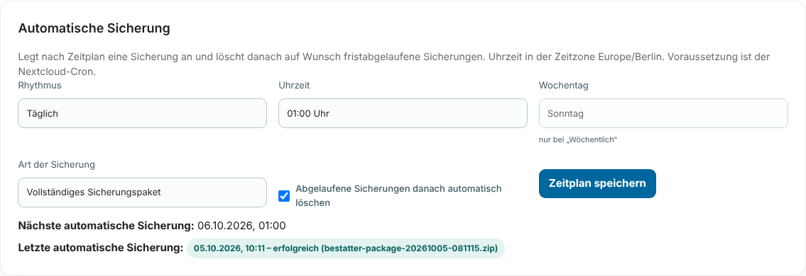
Unter Administration → „Backup & Restore“ → „Automatische Sicherung“ legt die App selbstständig Sicherungen an:
- „Rhythmus“: „Täglich“ oder „Wöchentlich“ („Aus“ schaltet die automatische Sicherung ab).
- „Uhrzeit“ (volle Stunde) und bei „Wöchentlich“ den „Wochentag“. Die Uhrzeit gilt in der Zeitzone der Nextcloud (Einstellung
default_timezone, sonst Europe/Berlin), auch über die Zeitumstellung hinweg. - „Art der Sicherung“: „Vollständiges Sicherungspaket“ (empfohlen) oder „Schneller App-Snapshot“.
- „Abgelaufene Sicherungen danach automatisch löschen“: räumt nach jeder erfolgreichen Sicherung nach den Fristen unter „Serverablage und Aufbewahrung“ auf; die neuesten gültigen Pakete bleiben geschützt.
- „Zeitplan speichern“.
Darunter stehen „Nächste automatische Sicherung“ und „Letzte automatische Sicherung“ mit Ergebnis, Dateiname und Zahl der gelöschten alten Sicherungen.
So arbeitet die automatische Sicherung:
- Ein Hintergrundjob prüft alle 15 Minuten, ob ein Termin fällig ist. Voraussetzung ist der Nextcloud-Cron (Verwaltungseinstellungen → Grundeinstellungen → Hintergrundaufgaben „Cron“); sonst zeigt die App einen Hinweis.
- War der Server zum Termin aus, wird die Sicherung beim nächsten Cron-Lauf einmal nachgeholt.
- Wer den Zeitplan neu einstellt, löst keine sofortige Sicherung aus; die erste läuft zum nächsten Termin.
- Vor dem Start prüft die App, ob im Sicherungsordner genug Platz für eine Sicherung in der Größe der bisher größten ist (plus 20 %).
- Schlägt eine Sicherung fehl oder ist sie unvollständig, erhalten alle Bestatter-Administratoren eine Meldung („Ein Prozess benötigt Aufmerksamkeit“), und die Systemprüfung zeigt „Automatische Datensicherung“ rot bzw. gelb. Die Systemprüfung warnt auch, wenn eine fällige Sicherung nicht gelaufen ist oder es seit über acht Tagen keine Sicherung gibt.
Tipp: Planen Sie die automatische Sicherung der App vor der nächtlichen Nextcloud-Gesamtsicherung, zum Beispiel um 1 Uhr, wenn die Gesamtsicherung um 3 Uhr läuft. Dann ist das Paket in der Gesamtsicherung enthalten.
Kopieren Sie die Pakete zusätzlich regelmäßig vom Server weg (zum Beispiel per Kopierjob auf ein NAS) und prüfen Sie die Prüfsumme nach dem Kopieren:
cd /sicherungsziel && sha256sum -c bestatter-package-20261005-013000.zip.sha256Sicherung per Befehl
Dieselben Sicherungen entstehen auch auf der Kommandozeile, etwa für eigene Skripte:
| Befehl | Wirkung |
|---|---|
occ bestatter:backup | schneller App-Snapshot |
occ bestatter:backup --include-files | vollständiges Sicherungspaket |
… --cleanup-expired | danach fristabgelaufene Sicherungen löschen (die neuesten gültigen Pakete bleiben geschützt) |
occ bestatter:backup --scheduled | die automatische Sicherung sofort so ausführen, wie sie eingestellt ist (Art, Aufräumen); das Ergebnis erscheint unter „Letzte automatische Sicherung“ |
Wer statt des Zeitplans in der App lieber einen Cronjob des Servers nutzt (bei Docker docker exec -u www-data <container> php occ …):
30 1 * * * sudo -u www-data php /var/www/nextcloud/occ bestatter:backup --include-files --cleanup-expired >> /var/log/bestatter-backup.log 2>&1Nutzen Sie nur einen der beiden Wege, sonst entstehen doppelte Sicherungen.
Nextcloud vollständig sichern
Die Gesamtsicherung folgt der Nextcloud-Dokumentation. In Kurzform:
- Wartungsmodus einschalten:
occ maintenance:mode --on. - Datenbank sichern, zum Beispiel
mariadb-dump --single-transaction nextcloud > nextcloud.sql. - Datenverzeichnis,
config/und den Ordnercustom_appssichern (bei Docker die eingebundenen Volumes sowiedocker-compose.ymlund.env). - Wartungsmodus ausschalten:
occ maintenance:mode --off.
Bewahren Sie mehrere Generationen auf (zum Beispiel täglich, wöchentlich, monatlich) und mindestens eine Kopie an einem anderen Ort.
Wiederherstellen – welcher Weg passt?
| Situation | Weg |
|---|---|
| Server defekt, Daten verloren, Schadsoftware | Nextcloud-Gesamtsicherung zurückspielen (siehe unten) |
| Umzug auf einen neuen Server oder in eine andere Nextcloud | Sicherungspaket der App in die neue, leere Installation einspielen |
| Ein einzelner Fall wurde gelöscht oder falsch geändert | Kein Einzel-Restore: Sicherung in eine Testinstallation einspielen und die Daten von dort übernehmen |
| Probe, ob die Sicherung funktioniert | Wiederherstellungstest in einer Testinstallation |
Wichtig: Die App stellt eine Sicherung nur in eine leere Installation wieder her. Sie überschreibt nie vorhandene Fall- oder Protokolldaten. Wiederherstellungen über die Oberfläche gibt es deshalb nicht; die Sicherungsverwaltung zeigt „Produktivdaten vorhanden – Web-Restore gesperrt“.
Nextcloud-Gesamtsicherung zurückspielen
Nach einem Serverausfall wird die ganze Nextcloud wiederhergestellt; die App kommt dabei mit allen Daten zurück:
- Server bzw. Container mit derselben Nextcloud-Version bereitstellen.
- Datenverzeichnis,
config/undcustom_appszurückkopieren, Eigentümer auf den Webserver-Benutzer setzen (www-data, bei Docker UID 33). - Datenbank einspielen, zum Beispiel
mariadb nextcloud < nextcloud.sql. occ maintenance:mode --off, dannocc maintenance:repairundocc status.occ bestatter:acceptance-checkausführen, die App öffnen und unter Administration → „Systemprüfung“ kontrollieren.
Sicherungspaket in eine neue Installation einspielen
So übernehmen Sie die App mit allen Fällen in eine andere Nextcloud, etwa beim Umzug:
Schritt 1 – Ziel vorbereiten: Nextcloud mit gleicher Hauptversion bereitstellen und die App in derselben Version wie in der Sicherung installieren und aktivieren. Die Ersteinrichtung nicht durchführen und keine Fälle oder Niederlassungen anlegen, sonst ist das Ziel nicht mehr leer.
Schritt 2 – Benutzer und Gruppen anlegen: Alle Konten, denen in der Sicherung Fallakten gehören, mit gleichem Benutzernamen anlegen, bei zentraler Fallablage auch das Ablagekonto. Außerdem die Gruppen (zum Beispiel „Bestatter“ und „Bestatter-Administratoren“) und die Rollengruppen der Abläufe.
Schritt 3 – Paket auf den Server kopieren, zum Beispiel nach /var/www/html/data/bestatter-backups/, und dem Webserver-Benutzer zuordnen. Bei Docker:
docker cp bestatter-package-20261005-013000.zip nextcloud:/var/www/html/data/bestatter-backups/
docker exec nextcloud chown www-data:www-data /var/www/html/data/bestatter-backups/bestatter-package-20261005-013000.zipSchritt 4 – Prüflauf: Er kontrolliert Manifest, Prüfsummen und ob das Ziel leer ist, und ändert nichts.
occ bestatter:restore /var/www/html/data/bestatter-backups/bestatter-package-20261005-013000.zipSchritt 5 – Einspielen mit dem festen Bestätigungscode. Schlägt dabei etwas fehl, entfernt die App bereits angelegte Dateien wieder und rollt die Datenbank zurück.
occ bestatter:restore /var/www/html/data/bestatter-backups/bestatter-package-20261005-013000.zip \
--execute --confirmation=BESTATTER-RESTORE-LEERES-ZIELSchritt 6 – Nacharbeiten: occ maintenance:repair, occ status und occ bestatter:acceptance-check; App öffnen, „Systemprüfung“ kontrollieren und einige Fälle stichprobenartig mit Dokumenten und Rechnungen prüfen.
Schritt 7 – Nextcloud-Daten übernehmen: Kalender, Aufgabenlisten und das Adressbuch „Bestatter - Organisationen“ sind nicht im Paket. Übernehmen Sie sie mit den Export- und Importfunktionen von Nextcloud Kalender und Kontakte oder aus der Nextcloud-Gesamtsicherung.
Ein Docker-Aufruf lautet vollständig docker exec -u www-data nextcloud php occ bestatter:restore ….
Einzelnen Fall zurückholen
„Fall löschen“ entfernt einen Fall endgültig, ohne Papierkorb. Einzelne Fälle lassen sich nicht in eine laufende Installation zurückspielen. So kommen Sie trotzdem an die Daten:
- Eine Testinstallation bereitstellen und das letzte Sicherungspaket von vor dem Löschen einspielen (wie oben beschrieben).
- Dort den Fall öffnen, die Dokumente aus der Fallakte herunterladen und die Angaben ablesen; mit „Falldaten exportieren“ erhalten Sie alle strukturierten Daten als Datei.
- In der Produktivinstallation den Fall neu anlegen und Dokumente hochladen.
Für versehentlich geänderte Angaben genügt meist der Fall-Verlauf: Er zeigt jeden alten und neuen Wert mit Person und Zeitpunkt (Kapitel 17).
Wiederherstellungstest
Eine Sicherung ist erst verlässlich, wenn die Wiederherstellung geprobt wurde. Empfohlen ist ein Test mindestens einmal im Quartal und nach jedem größeren Update:
- Sicherungspaket und Nextcloud-Gesamtsicherung des Vortags nehmen.
- In einer isolierten Testumgebung ohne Verbindung zur Produktivinstallation (eigener Container, eigene Datenbank, keine E-Mail- und Paperless-Anbindung) einspielen.
occ bestatter:acceptance-checkausführen und unter „Systemprüfung“ die Protokollverkettung kontrollieren.- Zwei oder drei Fälle mit Dokumenten, Rechnungen und Terminen mit der Produktivinstallation vergleichen.
- Ergebnis mit Datum, verwendeter Sicherung und prüfender Person festhalten, die Testumgebung danach löschen.
23. Deinstallation und vollständiges Entfernen
Die App lässt sich in vier Stufen außer Betrieb nehmen – vom vorübergehenden Abschalten bis zur vollständigen Bereinigung der Nextcloud-Datenbank. Alle Schritte führt ein Nextcloud-Administrator auf der Kommandozeile aus. Bei Docker steht vor jedem Befehl docker exec -u www-data <container> php, auf einem herkömmlichen Server sudo -u www-data php /var/www/nextcloud/.
Die Stufen im Überblick
| Stufe | Befehl | Was bleibt | Was ist weg | Rückweg |
|---|---|---|---|---|
| 1. Vorübergehend abschalten | occ app:disable bestatter | alles: Fälle, Dateien, Einstellungen, Termine und Aufgaben in Nextcloud | nur der Menüeintrag; Hintergrundjobs ruhen | occ app:enable bestatter |
| 2. Programmdateien entfernen, Daten behalten | occ app:remove --keep-data bestatter | alle Daten, Dateien und Einstellungen | der Ordner custom_apps/bestatter | App-Paket derselben oder einer neueren Version einspielen und aktivieren |
| 3. Alle Daten löschen, App bleibt | occ bestatter:purge --execute … | die App mit leeren Tabellen | Fälle, Fallakten, Termine und Aufgaben der App, Einstellungen | nur über eine Sicherung |
| 4. Vollständig entfernen | occ bestatter:purge --execute … --remove-app, danach occ app:remove bestatter | Benutzer, Gruppen, Sicherungspakete | alles aus Stufe 3 plus Tabellen, Migrationseinträge und Programmdateien | nur über eine Sicherung |
Die Stufen 3 und 4 sind endgültig. Dateien werden am Papierkorb vorbei samt Dateiversionen gelöscht, Kalendereinträge ohne Kalender-Papierkorb.
Stufe 1: Vorübergehend abschalten
occ app:disable bestatterDie App verschwindet aus dem Menü, ihre Hintergrundjobs laufen nicht mehr. Alle Daten bleiben unverändert. Termine und Aufgaben, die die App in Nextcloud angelegt hat, bleiben in den Kalendern und Aufgabenlisten sichtbar; Links darin in die App funktionieren erst wieder nach dem Einschalten. Alternativ deaktivieren Sie die App unter Apps → Aktive Apps.
Rückweg: occ app:enable bestatter – die App ist sofort wieder wie vorher nutzbar.
Stufe 2: Programmdateien entfernen, Daten behalten
occ app:remove --keep-data bestatterNextcloud deaktiviert die App und löscht den Programmordner. Tabellen, Fallakten und Einstellungen bleiben in Nextcloud erhalten. Diese Stufe eignet sich, wenn die App längere Zeit nicht gebraucht wird oder der Programmordner neu aufgesetzt werden soll.
Rückweg: Das App-Paket derselben oder einer neueren Version wie bei der Installation entpacken und occ app:enable bestatter ausführen; bei einer neueren Version folgt occ upgrade.
Hinweis: Ohne Programmdateien steht occ bestatter:purge nicht zur Verfügung. Wer die Daten später doch löschen möchte (Stufe 3 oder 4), installiert dafür zuerst wieder dieselbe Version.
Vor dem Löschen: Vorbereitung
Bevor Sie Stufe 3 oder 4 ausführen:
- Aufbewahrungspflichten klären: Rechnungen, Gutschriften, Eingangsrechnungen und kaufmännische Unterlagen müssen in der Buchhaltung (zum Beispiel DATEV) archiviert sein. Die App ist kein Archiv im Sinne der Aufbewahrungspflichten.
- Legal Hold prüfen: Fälle mit Löschsperre werden nur mit
--despite-legal-holdgelöscht. Klären Sie vorher, ob die Sperre noch gilt. - Sicherung anlegen und außerhalb des Servers aufbewahren (Kapitel 22):
occ bestatter:backup --include-files - Mitarbeitende informieren: Nach dem Löschen sind auch die Termine und Aufgaben der App aus allen Nextcloud-Kalendern verschwunden.
Stufe 3: Alle Daten löschen, App bleibt installiert
Diese Stufe setzt die App auf den Zustand einer Neuinstallation zurück, etwa nach einer Testphase.
Schritt 1 – Vorschau: zeigt, wie viele Datensätze, Dateien, Kalendereinträge, Aktivitäten und Hintergrundjobs betroffen sind, und nennt Hinweise wie Legal Holds. Es wird nichts verändert.
occ bestatter:purgeSchritt 2 – Ausführen mit dem Pfad des eben erstellten Sicherungspakets:
occ bestatter:purge --execute --confirmation=BESTATTER-ENDGUELTIG-LOESCHEN \
--backup-package=/var/www/html/data/bestatter-backups/bestatter-package-20261005-013000.zipOhne Sicherung geben Sie statt --backup-package=… ausdrücklich --without-backup an; die Daten sind dann nicht wiederherstellbar.
Schritt 3 – Hintergrundjobs neu anmelden: Die Bereinigung entfernt auch die Hintergrundjobs der App. Damit Nextcloud sie wieder anlegt:
occ app:disable bestatter
occ app:enable bestatterDanach startet die App wie bei der ersten Installation mit dem „Einrichtungshinweis“; die Ersteinrichtung ist neu durchzuführen (Kapitel 2).
Stufe 4: App vollständig aus Nextcloud entfernen
Schritt 1 – Vorschau: wie in Stufe 3 mit occ bestatter:purge.
Schritt 2 – Daten, Tabellen und Einstellungen entfernen:
occ bestatter:purge --execute --confirmation=BESTATTER-ENDGUELTIG-LOESCHEN \
--backup-package=/var/www/html/data/bestatter-backups/bestatter-package-20261005-013000.zip \
--remove-appEntfernt werden alle Datensätze und Einstellungen der App, die Fallakten, Vorlagen, Artikelbilder und Assistenzordner, die von der App angelegten Termine und Aufgaben (auch die Kopien bei weiteren Zuständigen), Aktivitäten, Benachrichtigungen, Hintergrundjobs, alle Tabellen bestatter_* (auch aus früheren Versionen) und die Migrationseinträge. Zum Schluss wird die App deaktiviert.
Schritt 3 – Programmdateien entfernen:
occ app:remove bestatterSchritt 4 – Kontrolle:
occ app:list | grep bestatterliefert keine Zeile mehr.occ config:list bestatterzeigt keine Einstellungen der App mehr.- In der Datenbank gibt es keine Tabellen der App mehr, zum Beispiel bei MariaDB:
SHOW TABLES LIKE 'oc\_bestatter%';(Tabellenpräfix lautdbtableprefixinconfig/config.php). - Das Ergebnisprotokoll des Befehls nennt Kalendereinträge, die nicht entfernt werden konnten; löschen Sie diese von Hand im Kalender der genannten Person.
Bewahren Sie die Ausgabe des Befehls zusammen mit der Prüfsumme der Sicherung als Nachweis auf.
Was danach von Hand zu entfernen ist
Folgendes gehört nicht der App und bleibt deshalb in jeder Stufe erhalten. Entfernen Sie es bei Bedarf selbst:
- Gruppen wie „Bestatter“, „Bestatter-Administratoren“ und die Rollengruppen der Abläufe sowie das Ablagekonto (Nextcloud-Benutzerverwaltung).
- Das Adressbuch Bestatter - Organisationen in Nextcloud Kontakte.
- Einen Teamordner, falls die Fallablage darin lag.
- Die Sicherungspakete im Nextcloud-Datenverzeichnis unter
bestatter-backups. Sie enthalten personenbezogene Daten; löschen Sie sie, sobald sie nicht mehr gebraucht werden. - Dokumente in Paperless-ngx.
Eine spätere Neuinstallation beginnt danach sauber wie die erste Installation (Kapitel 21).
24. Technischer Anhang für Nextcloud-Administratoren
Dieses Kapitel ergänzt Kapitel 21 (Installation, auch in Docker, und Ersteinrichtung) um Betriebsthemen: Rechte, Hintergrundjobs, occ-Befehle und Update (mit Update-Skript). Datensicherung und Deinstallation haben eigene Kapitel (Kapitel 22, Kapitel 23).
Voraussetzungen
| Bereich | Anforderung |
|---|---|
| Nextcloud | Version 34 oder 35 |
| PHP | 8.2 bis 8.5 (unter Nextcloud 35 mindestens 8.3), mit GD und ZipArchive |
| Datenbank | eine von Nextcloud unterstützte Datenbank, empfohlen MariaDB 11.4 |
| Cache | Redis für Dateisperren und Cache |
| Hintergrundjobs | Modus „Cron“, mindestens alle 5 Minuten – AJAX-Cron reicht nicht |
| Pflicht-Apps | Activity, Calendar (CalDAV), Contacts |
| Optional | Notifications (Push), Mailserver (Benachrichtigungen, Geschäfts-Postfach), Nextcloud Office bzw. EuroOffice (PDF), Teamordner, Task Processing mit Anbietern für Spracherkennung, Texterkennung (OCR) und Chat (Bedienhilfe), Paperless-ngx, Mustang-Validator |
PDF-Erzeugung: Die Anwendung nutzt die Konvertierungsschnittstelle von Nextcloud (zum Beispiel Nextcloud Office) und ersatzweise EuroOffice. Für Rechnungen im Format PDF/A-3 fragt sie bei EuroOffice PDF/A an; Collabora liefert nur normales PDF. Ohne Konverter bleibt die DOCX-Ausgabe möglich.
Gruppen und Rechte
- Mitgliedergruppe (Standard „Bestatter“): Fachzugriff.
- Administrationsgruppen (Standard „Bestatter-Administratoren“, mehrere kommagetrennt möglich): Fachzugriff und Administration.
- Nextcloud-Administratoren gelten immer als Bestatter-Administratoren.
- Alle anderen Konten erhalten keinen Zugriff (HTTP 403).
- Rollengruppen für Abläufe (Standard „Bestatter-Bestattung“, „Bestatter-Büro“, „Bestatter-Fahrer“, „Bestatter-Buchhaltung“) legen Sie in der Nextcloud-Benutzerverwaltung an und tragen sie unter Administration → Systemprüfung → Installationsparameter ein – mit der Gruppen-ID, nicht dem Anzeigenamen. Eine umbenannte Gruppe behält ihre alte ID; die Systemprüfung schlägt sie vor.
Die Gruppennamen und Ordner sind auch per Befehl einstellbar, zum Beispiel occ config:app:set bestatter member_group --value=Bestatter.
Hintergrundjobs
| Job | Intervall | Aufgabe |
|---|---|---|
| Wartung | 6 Stunden | Kennzahlen für die Systemprüfung; löscht nur nicht abgeholte Sprachaufnahmen nach 24 Stunden |
| Paperless-Abgleich | 5 Minuten | Übertragung und Statusabfrage, höchstens 5 Versuche je Beleg |
| Zeitgesteuerte Ablaufschritte | 6 Stunden | Auslöser „Datum erreicht“ und „Rechnung überfällig“ |
| Automatische Datensicherung | 15 Minuten | prüft, ob ein Termin des Zeitplans unter „Backup & Restore“ fällig ist, und legt dann die Sicherung an (Kapitel 22) |
| Nextcloud-Übertragung wiederholen | 30 Minuten | Aufgaben, Termine und Kopien mit Übertragungsfehler erneut schreiben, sobald Kalender bzw. Aufgabenliste der Person existiert (Kapitel 12) |
Meldet die Systemprüfung „Regelmäßige Wartung“ eine Warnung, läuft Cron nicht oder nicht regelmäßig. Neue Hintergrundjobs registriert Nextcloud beim Aktivieren bzw. Aktualisieren der App; war die App beim Einspielen einer Zwischenversion schon aktiv, genügt einmal occ app:disable bestatter und occ app:enable bestatter.
occ-Befehle
Alle datenverändernden Befehle laufen ohne --execute nur als Vorschau und verlangen zusätzlich einen festen Bestätigungscode.
| Befehl | Zweck | Bestätigungscode | |
|---|---|---|---|
bestatter:acceptance-check | Rollen, Systemprüfung und Protokollintegrität prüfen (nur lesend) | – | |
bestatter:paperless-acceptance-check | Paperless-Anbindung prüfen (nur lesend) | – | |
bestatter:backup [--include-files] [--cleanup-expired] | App-Snapshot bzw. vollständiges Sicherungspaket, optional danach abgelaufene Sicherungen löschen; --scheduled führt die automatische Sicherung sofort wie eingestellt aus | – | |
bestatter:restore <datei> | Wiederherstellung, nur in eine leere Installation | BESTATTER-RESTORE-LEERES-ZIEL | |
bestatter:retention | Aufbewahrungsrichtlinie anwenden | BESTATTER-AUFBEWAHRUNG-ANWENDEN | |
bestatter:purge [--remove-app] | alle Daten der App entfernen, mit --remove-app die App vollständig aus Nextcloud entfernen | BESTATTER-ENDGUELTIG-LOESCHEN | |
bestatter:storage-migrate --account=… | persönliche Ablagen in die zentrale Fallablage umziehen | BESTATTER-ABLAGE-ZENTRAL | |
bestatter:case-folder-rename <ordner> <name> | Unterordner in allen Fallakten umbenennen | BESTATTER-ORDNER-UMBENENNEN | |
bestatter:development-reset | Testdaten löschen, nur auf Testsystemen | BESTATTER-ENTWICKLUNGSRESET | |
bestatter:groupware-repair | Altlasten der Nextcloud-Anbindung bis 0.75.1 bereinigen (siehe unten) | BESTATTER-GROUPWARE-BEREINIGEN | |
bestatter:update-check [--expect-version=x.y.z] [--as-user=KONTO] | nach einem Update Version, Systemprüfung und Audit-Kette prüfen (nur lesend; --record vermerkt den Update-Lauf, siehe Update einspielen) | – | |
| `bestatter:labels [--activate=all\ | SCHLÜSSEL,…]` | Marker auflisten bzw. mitgelieferte Marker aktivieren (nur ergänzend, deaktiviert nichts) | – |
| `bestatter:setup-package export\ | import <datei> --user=<admin>` | Einrichtungspaket erstellen bzw. einspielen; import ohne --execute zeigt nur die Vorschau, --action=<Nr>=<AKTION> wählt je Eintrag eine andere Aktion (Kapitel 18) | BESTATTER-PAKET-EINSPIELEN |
Beispiel: occ bestatter:retention zeigt die fälligen Fälle und Hinweise, etwa auf Rechnungen mit noch laufender Aufbewahrungsfrist; occ bestatter:retention --execute --confirmation=BESTATTER-AUFBEWAHRUNG-ANWENDEN wendet die Richtlinie an (nur bei eingeschalteter Richtlinie; bei Hinweisen zusätzlich --acknowledge-notices). Legen Sie vorher ein geprüftes Sicherungspaket an.
Altlasten der Nextcloud-Anbindung bereinigen: occ bestatter:groupware-repair zeigt ohne weitere Angaben eine Vorschau, --execute --confirmation=BESTATTER-GROUPWARE-BEREINIGEN führt sie aus. Bereinigt werden drei Fehlerbilder aus Versionen bis 0.75.1:
- Doppelte Termine: Die Kopie eines Termins im Kalender einer weiteren zuständigen Person wurde als eigener Termin eingelesen; daraus entstanden doppelte Folgeaufgaben. Entfernt werden der doppelte Termin, seine Folgeaufgaben samt deren Einträgen in Nextcloud und die zugehörigen Ablaufläufe. Original und Kopie im Kalender der Kollegin bleiben bestehen.
- Kontaktadressen: Über „Neu“ angelegte Kontakte trugen die ganze Anschrift im Postfach-Feld; die Adresse wird in Straße, Ort, PLZ und Land aufgeteilt.
- Verlorene App-Daten: Wurde eine Ablaufaufgabe in Nextcloud abgehakt oder ein Termin dort geändert, gingen Ablaufschritt, Rollen-Zuständige und gespeicherte Kopien verloren (Folge: fehlende Aktionen am Schritt, Rollenmitglieder sahen die Aufgabe nicht mehr, Kopien blieben beim Löschen eines Falls stehen). Die fehlenden Felder werden aus dem letzten vollständigen Stand im Audit-Log wiederhergestellt, ersatzweise aus dem Ablaufschritt.
Jede Löschung und Wiederherstellung steht im Audit-Log. Die Systemprüfung zeigt unter Altlasten der Nextcloud-Anbindung, ob noch etwas zu bereinigen ist. Legen Sie vorher eine Sicherung an.
Update einspielen
Ein Update hat zwei Teile: Die App-Dateien werden ausgetauscht, danach passt occ upgrade die Datenbank an. Beides erledigt das Update-Skript bin/bestatter-update.sh, das jedem Paket ab 0.83.1 beiliegt. Es läuft in einer Shell auf dem Server (als root oder als Webserver-Benutzer) bzw. auf dem Docker-Host. Verwenden Sie immer das Skript aus dem neuen Paket.
- Paket und Prüfsummendatei auf den Server kopieren, zum Beispiel
bestatter-0.83.1.tar.gzundbestatter-0.83.1.tar.gz.sha256nach/root/updates. - Das Skript aus dem Paket holen:
tar -xzf bestatter-0.83.1.tar.gz bestatter/bin/bestatter-update.sh - Probelauf:
bash bestatter/bin/bestatter-update.sh bestatter-0.83.1.tar.gzprüft Prüfsumme, Paketinhalt, Versionen und Nextcloud-Kompatibilität und zeigt den Ablauf. Es wird nichts verändert. - Update ausführen: derselbe Befehl mit
--execute.
Auf einem herkömmlichen Server findet das Skript Nextcloud unter /var/www/nextcloud oder /var/www/html selbst, sonst --nextcloud /pfad/zu/nextcloud. In Docker geben Sie den Container an: --docker nextcloud-aio-nextcloud bei AIO, bei docker compose den Namen aus docker compose ps. Weicht der occ-Aufruf ab, legt ihn --occ "BEFEHL" fest.
Mit --execute läuft Folgendes ab:
- Sicherung mit
occ bestatter:backup --include-files(Fachpaket mit Fallakten;--backup snapshotnur den Datenbankinhalt der App,--backup nonekeine). - Der bisherige App-Ordner wird als Archiv
bestatter-<alte Version>-app.tar.gzim Ablageordner aufbewahrt, standardmäßigbestatter-update-<Datum>-<Uhrzeit>im aktuellen Ordner (--keep ORDNER). Dort liegt am Ende auch das Protokollupdate.log. - Wartungsmodus an, App-Ordner austauschen (Besitzer und Rechte wie bisher),
occ upgrade, Wartungsmodus aus. occ bestatter:update-checkprüft, ob Programm und Datenbank dieselbe Version haben, ob die App aktiv ist, ob die Systemprüfung Fehler meldet und ob die Audit-Kette intakt ist. Der Update-Lauf (von, auf, Zeitpunkt, Ergebnis, Sicherung) wird vermerkt und protokolliert.
Starten Sie das Skript aus einem eigenen Ordner außerhalb von custom_apps (zum Beispiel /root/updates); liegt der Ablageordner in einem App-Ordner, bricht es ab. Das Skript bricht vor jeder Änderung ab, wenn die Prüfsumme fehlt oder nicht passt, das Paket unvollständig ist, die neue Version älter oder gleich der installierten ist (Ausnahmen nur ausdrücklich mit --allow-downgrade bzw. --allow-same), die Nextcloud-Version nicht unterstützt wird oder Nextcloud bereits im Wartungsmodus steht bzw. auf occ upgrade wartet. Die Sicherungen von Nextcloud selbst (Datenbank, Datenverzeichnis) ersetzt es nicht (Kapitel 22).
| Rückgabewert | Bedeutung |
|---|---|
| 0 | Update eingespielt und geprüft |
| 1 | vor jeder Änderung abgebrochen (Meldung nennt den Grund) |
| 2 | eingespielt, aber die Prüfung meldet Fehler – oder occ upgrade meldete einen Fehler, der Nextcloud oder eine andere App betrifft. Bestatter ist dann bereits auf der neuen Version; Meldung und Systemprüfung ansehen |
| 3 | occ upgrade ist für Bestatter gescheitert: Die bisherigen App-Dateien liegen wieder an ihrem Platz, der Wartungsmodus bleibt an. Ursache im Protokoll klären, dann das Update wiederholen oder mit occ upgrade und occ maintenance:mode --off beim bisherigen Stand bleiben |
Nach einem eingespielten Update führt der Weg zurück auf die alte Version nur über die Gesamtsicherung des Servers (Datenbank und Datenverzeichnis vom Zeitpunkt vor dem Update), denn Datenbank-Migrationen laufen nicht rückwärts. occ bestatter:update-check können Sie jederzeit allein aufrufen; es liest nur. Fehler, die schon vor dem Update bestanden, zeigt das Skript zu Beginn unter Prüfung vorher.
Datensicherung und Deinstallation
- Update: siehe Update einspielen (oben). Kompatibilitätssperren nie mit
--forceumgehen. - Datensicherung und Wiederherstellung: Kapitel 22 – Sicherungsebenen, Zeitplan per Cronjob, Wiederherstellung nach Serverausfall, Umzug und Wiederherstellungstest. Die Sicherungen der App liegen im Datenverzeichnis unter
bestatter-backups/. - Deinstallation: Kapitel 23 – vom vorübergehenden Abschalten (
occ app:disable bestatter) bis zur vollständigen Bereinigung mitocc bestatter:purge --remove-appundocc app:remove bestatter.
E-Rechnung prüfen (Mustang)
Für die normative Prüfung von ZUGFeRD- und XRechnung-Dateien richten Sie den Mustang-Validator ein (Java und Mustang-CLI):
occ config:system:set bestatter_einvoice_mustang_jar --value=/opt/mustang/Mustang-CLI.jar
occ config:system:set bestatter_einvoice_java --value=/usr/bin/javaDanach meldet die Anwendung „normativ validiert“ und legt einen Prüfbericht ab. Ohne Validator prüft sie die Rechnung nur intern.
Texterkennung, Spracherkennung und Bedienhilfe
- Texterkennung für Erfassungsbögen: Paperless-ngx (Dokumenttyp für Erfassungsbögen gesetzt) oder ein Nextcloud-Anbieter für „Texterkennung (OCR)“, freigegeben unter Administration → Assistenz. Die Erkennung läuft über die Nextcloud-Hintergrundjobs.
- Gesprächsaufnahme: ein Nextcloud-Anbieter für Spracherkennung, zum Beispiel ein lokales Whisper-Modell, ebenfalls freigegeben unter Administration → Assistenz.
- Bedienhilfe: ein Nextcloud-Anbieter für Chat (Text-zu-Text). Die Bedienhilfe erhält ausschließlich Abschnitte dieses Handbuchs, keine Falldaten.
Paperless-ngx einrichten
- In Paperless einen technischen Benutzer ohne Administratorrechte anlegen und dessen API-Token erzeugen. Er braucht Rechte zum Anzeigen und Anlegen von Dokumenten sowie zum Anzeigen von Dokumenttypen, Schlagworten, benutzerdefinierten Feldern und Tasks. Nur wenn Erfassungsbögen nach der Texterkennung gelöscht werden sollen (Einstellung unter Administration → Paperless), zusätzlich das Recht zum Löschen von Dokumenten.
- Dokumenttypen anlegen – mindestens „Eingangsrechnung“ und „Auftragserfassungsbogen“, für den Belegeingang zusätzlich je Dokumentart einen Typ, zum Beispiel „Sterbeurkunde“, „Gebührenbescheid“, „Behördliche Genehmigung“, „Rückmeldung Abmeldestelle“. Am besten mit Zuordnungsregel, damit Paperless den Typ beim Eingang selbst setzt (Beispiele Abschnitt Zuordnungsregeln in Paperless unten).
- Schlagworte „Bestatter-Archivkopie“ und „Bestatter-Zuzuordnen“ anlegen, dazu das benutzerdefinierte Feld „Fallnummer“ (Datentyp Text; der Name muss mit „Paperless-Feld für die Fallnummer“ unter Administration → Paperless übereinstimmen). Steht die Fallnummer dort, schlägt der Belegeingang den Fall sicher vor und kann Dokumente automatisch ablegen (wie die Nummer hineinkommt: Abschnitt Fallnummer in Paperless unten).
- In der Anwendung unter Administration → Paperless Adresse, Token, Dokumenttyp- und Tag-IDs eintragen, „Verbindung testen“ und speichern. Unter Customizing → „Dokumentarten“ jeder Dokumentart ihren Paperless-Dokumenttyp zuordnen.
- Für den Belegeingang in Paperless einen Workflow „Dokument hinzugefügt“ mit Webhook auf die angezeigte Adresse, Header
X-Bestatter-Webhook-Tokenund der angezeigten JSON-Vorlage anlegen; auslösen soll nur das Schlagwort „Bestatter-Zuzuordnen“ (nicht der Dokumenttyp „Eingangsrechnung“ – den tragen auch die Archivkopien der Anwendung). Wird das Schlagwort auch nachträglich von Hand gesetzt, zusätzlich einen gleichen Workflow mit dem Auslöser „Dokument aktualisiert“ anlegen; die Anwendung übernimmt jedes Dokument nur einmal. Die Anwendung wertet aus der Meldung nur die Dokumentnummer aus und liest Dokumenttyp, Text und Feld „Fallnummer“ selbst über die Paperless-Schnittstelle. - Werden mehrere Schriftstücke in einem Stapel gescannt, trennt Paperless sie an Trennblättern mit Barcode (Paperless-Einstellung zur Barcode-Trennung) – dann erscheint jedes Schriftstück einzeln im Belegeingang.
- Mit
occ bestatter:paperless-acceptance-checkprüfen. Die Prüfung testet Verbindung, Belegeingang und Download und im AbschnittinboxSetupdie Einrichtung des Belegeingangs: Webhook-Geheimnis, Feld „Fallnummer“ in Paperless, Dokumentarten mit vorhandenem Paperless-Dokumenttyp und die letzte Meldung. Dasselbe zeigt die Systemprüfung unter „Paperless-Belegeingang (Einrichtung)“ (Kapitel 18).
Zuordnungsregeln in Paperless
Paperless kann Dokumenttyp, Absender (Korrespondent) und Schlagworte beim Eingang selbst setzen. Dafür hat jeder Dokumenttyp im Bearbeitungsdialog eine Zuweisung aus Algorithmus und Suchmuster; Groß- und Kleinschreibung spielt standardmäßig keine Rolle. Die Bezeichnungen können je nach Paperless-Version und Sprache leicht abweichen.
- Automatisch: Paperless lernt aus Dokumenten, denen Sie den Typ schon von Hand gegeben haben. Gut für Eingangsrechnungen; braucht anfangs einige Beispiele.
- Alle Wörter bzw. Exakt: alle Wörter bzw. genau diese Wortfolge müssen im erkannten Text vorkommen.
- Regulärer Ausdruck: für Varianten derselben Bezeichnung.
Beispiele (Dokumenttyp: Algorithmus, Suchmuster):
- Sterbeurkunde: Exakt,
Sterbeurkunde - Gebührenbescheid: Regulärer Ausdruck,
Gebührenbescheid|Kostenbescheid|Gebührenfestsetzung - Behördliche Genehmigung: Regulärer Ausdruck,
Genehmigung|Unbedenklichkeitsbescheinigung|Leichenpass - Rückmeldung Abmeldestelle: Regulärer Ausdruck,
(Abmeldung|Kündigung|Sterbefall).{0,80}(bestätig|bearbeitet|erhalten) - Eingangsrechnung: Automatisch
Passen mehrere Dokumenttypen, setzt Paperless nur einen davon – nicht unbedingt den gewünschten. Ein Gebührenbescheid des Standesamts enthält zum Beispiel oft auch das Wort „Sterbeurkunde“. Fassen Sie die Muster deshalb möglichst eng und prüfen Sie in den ersten Wochen die Vorschläge im Belegeingang. Genauer wird es mit einem Workflow: Auslöser Dokument hinzugefügt, Filter auf den Korrespondenten (zum Beispiel Standesamt Musterstadt) und einen Textbegriff, Aktion Zuweisung mit Dokumenttyp und Schlagwort „Bestatter-Zuzuordnen“. Setzt ein solcher Workflow das Schlagwort, hängen Sie die Webhook-Aktion aus Schritt 5 als letzte Aktion an denselben Workflow an; Paperless führt die Aktionen eines Workflows der Reihe nach aus.
Ein falsch gesetzter Typ ist kein Problem: Die Anwendung liest Dokumenttyp und Fallnummer erst, wenn der Belegeingang geöffnet wird. Korrigieren Sie den Typ in Paperless und wählen Sie im Belegeingang „Vorschlag aktualisieren“ – oder wählen Sie die Dokumentart direkt im Dialog „Dokument einem Fall zuordnen“.
Fallnummer in Paperless
Die Fallnummer steht oben in der Fallakte (Form Jahr-laufende Nummer, zum Beispiel 2026-0042). Der Belegeingang findet den Fall in dieser Reihenfolge:
- Feld „Fallnummer“: In Paperless das Dokument öffnen, unter Benutzerdefinierte Felder das Feld „Fallnummer“ hinzufügen, die Nummer eintragen und speichern. Damit das Feld bei jedem Dokument schon bereitsteht, kann ein Workflow mit Auslöser Dokument hinzugefügt und Aktion Zuweisung das Feld leer anhängen; den Wert trägt man je Dokument von Hand ein, weil er sich von Fall zu Fall unterscheidet. Nur mit diesem Feld (und einem Dokumenttyp mit Dokumentart) legt die Anwendung Dokumente automatisch ab.
- Fallnummer im Text: Steht die Nummer in der Form 2026-0042 im erkannten Text – etwa weil eine Stelle in ihrer Antwort „Unser Zeichen“ aus dem Abmeldeschreiben zitiert oder weil sie vor dem Scannen auf die erste Seite gestempelt oder aufgeklebt wurde –, wird der Fall ebenfalls vorgeschlagen. Handschriftliche Ziffern erkennt die Texterkennung oft nicht zuverlässig; gestempelt oder gedruckt ist sicherer.
- Name und Datum: Ohne Nummer sucht die Anwendung einen offenen Fall mit gleichem Nachnamen und passendem Vornamen, Sterbe- oder Geburtsdatum.
Die Wege 2 und 3 ergeben nur einen Vorschlag; Sie bestätigen die Zuordnung im Belegeingang selbst.
Fehlersuche
| Meldung oder Symptom | Ursache und Abhilfe |
|---|---|
| „Regelmäßige Wartung“ warnt | Cron läuft nicht; Hintergrundjob-Modus und Cron-Dienst prüfen |
| Andere Mitarbeitende sehen Dateien einer Fallakte nicht | benutzerbezogene Ablage aktiv; zentrale Fallablage einrichten (Kapitel 18) |
| Kein PDF, nur DOCX | kein PDF-Konverter verfügbar; Nextcloud Office oder EuroOffice einrichten |
| Rechnung ohne PDF/A | Konverter liefert kein PDF/A; die Systemprüfung „E-Rechnung“ zeigt Details |
| „Nextcloud-Mailversand ist nicht konfiguriert“ | Mailserver und Systemabsender in den Nextcloud-Grundeinstellungen einrichten |
| Paperless-Beleg „FAILED“ | nach 5 Versuchen abgebrochen; Verbindung testen und „Erneut übertragen“ |
| „Der Fall wurde inzwischen von einer anderen Person geändert“ | gleichzeitige Bearbeitung; Ansicht neu laden und Änderung wiederholen |
| Aufgaben mit „Synchronisationsfehler“ | die betroffene Person hat keinen beschreibbaren Kalender oder keine Aufgabenliste; die Systemprüfung nennt sie. Nach der Abhilfe überträgt der Hintergrundjob die Einträge automatisch (Cron erforderlich) |
25. Glossar und häufige Fragen
Glossar
| Begriff | Bedeutung |
|---|---|
| Ablauf | Vorlage, aus der die Arbeitsschritte eines Falls entstehen |
| Auftragsformular | Bildschirmfassung des Papier-Bestattungsauftrags zur Erfassung von Bruttobeträgen |
| Auftragserfassungsbogen | Papierbogen des Erstgesprächs, der in der Schnellerfassung eingelesen werden kann |
| Dokumentart | Art eines eingehenden Schriftstücks (zum Beispiel Sterbeurkunde); bestimmt Ablageordner, Kategorie und Folgeschritt im Fall |
| DP – durchlaufender Posten | Auslage im Namen und für Rechnung der Angehörigen, ohne Umsatzsteuer (zum Beispiel Friedhofsgebühren) |
| EL – eigene Leistung | Leistung des Bestattungsunternehmens mit Umsatzsteuer |
| EPC-SEPA-Zahlcode | QR-Code auf der Rechnung, den Banking-Apps für die Überweisung einlesen (GiroCode) |
| Festschreiben | Kostenvoranschlag oder Auftrag unveränderlich machen und als PDF ablegen |
| FK – Fremdkosten | Fremdleistung, die im eigenen Namen weiterberechnet wird, mit Umsatzsteuer |
| Gutschrift | Korrekturbeleg über einzelne Positionen oder Beträge einer freigegebenen Rechnung |
| Hinweis (automatisch) | von der App aus Falldaten berechnete Kennzeichnung, zum Beispiel „Freigabe abwarten“; nicht von Hand setzbar |
| KVA | Kostenvoranschlag |
| Legal Hold | Löschsperre für einen Fall |
| Marker | farbige Kennzeichnung eines Falls (Ja/Nein oder mit Wert aus einer Liste), im Fallkopf als Chip, in der Fallliste als Symbol; optional mit interner Notiz |
| Nachtrag | begründete Änderung eines festgeschriebenen Vertrags |
| Nebenauftrag | eigener Auftrag eines weiteren Auftraggebers zum selben Sterbefall |
| Paket | Artikel mit Stückliste, der mehrere Leistungen zusammenfasst |
| Pflichtschritt | Ablaufschritt, der vor dem Fallabschluss erledigt sein oder begründet entfallen muss |
| Rollengruppe | Nextcloud-Gruppe, an deren Mitglieder die Schritte einer Rolle gehen |
| Stornorechnung | Korrekturbeleg, der eine freigegebene Rechnung vollständig aufhebt |
| Warengruppe | Gruppe von Artikeln, zum Beispiel Särge oder Urnen, mit Auswahlregel |
| ZUGFeRD / XRechnung | Formate der elektronischen Rechnung nach EN 16931 |
Häufige Fragen
Warum kann ich eine Rechnung nicht mehr ändern?
Nach „Freigeben“ ist eine Rechnung unveränderlich. Korrigieren Sie sie mit einer Stornorechnung oder Gutschrift (Kapitel 15).
Warum lassen sich Positionen im Auftrag nicht mehr ändern?
Nach dem Festschreiben sind die Vertragspreise geschützt. Wählen Sie „Vertragsnachtrag erfassen“ und geben Sie einen Grund an (Kapitel 8).
Warum sehe ich eine Aufgabe nicht, die eine Kollegin angelegt hat?
Aufgaben sieht nur, wer sie angelegt hat oder wem sie zugewiesen sind. Lassen Sie sich die Aufgabe zuweisen.
Warum fehlt die Schaltfläche „Einstellungen“?
Administration und Customizing stehen nur Bestatter-Administratoren zur Verfügung.
Warum fehlt die „Bedienhilfe“?
Sie erscheint nur, wenn in Nextcloud ein Chat-Anbieter eingerichtet ist. Das Handbuch steht immer zur Verfügung.
Warum wird ein Kontakt in der Auswahl nicht angeboten?
Dem Kontakt fehlt in Nextcloud Contacts die passende Kategorie, zum Beispiel „Friedhöfe“ oder „Lieferant“ (Kapitel 10).
Der Fall lässt sich nicht abschließen – was fehlt?
„Fall abschließen …“ nennt unter „Noch offen“ alle Gründe: offene Pflichtschritte, eine fehlende oder unbezahlte Schlussrechnung oder offene Nebenaufträge (Kapitel 5).
Warum wurde meine E-Mail versendet, aber nicht zugestellt?
„Vom Mailserver angenommen“ bestätigt nur die Übergabe an den Mailserver. Prüfen Sie bei Rückläufern das Postfach der Nextcloud-Systemadresse.
Wo fange ich nach der Installation an?
Kapitel 2 führt in zehn Schritten von der Ersteinrichtung bis zum ersten Probefall.
Kann ich einen versehentlich gelöschten Fall wiederherstellen?
Nicht direkt: „Fall löschen“ ist endgültig, und Sicherungen lassen sich nur in eine leere Installation einspielen. Spielen Sie die letzte Sicherung in eine Testinstallation ein und übernehmen Sie Dokumente und Angaben von dort (Kapitel 22).
Erstellt die App automatisch Sicherungen?
Ja, sobald unter „Backup & Restore“ → „Automatische Sicherung“ ein Zeitplan eingerichtet ist; danach räumt sie auf Wunsch abgelaufene Sicherungen auf. Voraussetzung ist der Nextcloud-Cron (Kapitel 22).
Wie entferne ich die App wieder?
Je nach Ziel vorübergehend abschalten, Programmdateien entfernen oder alle Daten bis hin zu den Datenbanktabellen löschen (Kapitel 23).